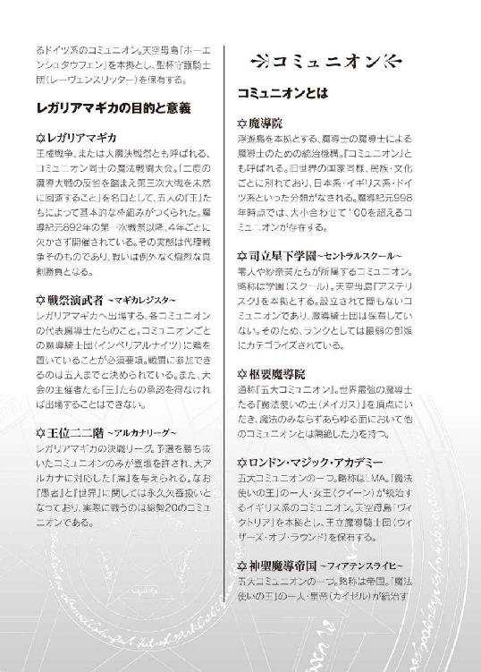

| 魔法剣士のエクストラ (HJ文庫) | |
| 若桜拓海 | |
| (2014) | |



吹き荒れる魔力の嵐。
ありえざる金色の光。
彼ら聖杯守護騎士団が邂逅したのは、『正体不明の何か』と称するしかないモノだった。
ただひとつ確かなのは――そのヒトガタが、明確に『敵』であることくらいだった。
《第五・第六中隊沈黙！ まるで歯が立ちませんっ！》
《魔力反応、さらに増大！ 計測許容限界を超えていますっ......！》
《だ、団長！ あれは――あれは一体なんなのですかッ!?》
狂乱の中でかわされる交信魔法。だが、指揮官である男は、黙したまま応答しない。
ヒトガタの『正体不明の何か』と、その頭上で金色の光を放つ『天使の光輪』を、まばたきもせずに凝然と見つめていた。
（これが......これこそが、そうなのか？ そうなんだな、ハイデマリー......！）
その日、その邂逅をもって、テオドール＝フォン＝ザルツァは『神』の実在を確信するにいたった。
第一章 叡智への長い道
一面の空。
果てなどないと錯覚してしまうほどに、どこまでもひろがる広大無辺の空間だ。
ここは地上より遠く離れた、紛うかたなき碧空の只中。眼下には白雲の絨毯が敷きつめられ、頭上には白日のシャンデリアが煌めいている。
上下左右、いずれを見渡しても、眼に映るのは青と白のみ。大気と、雲と、あとは太陽くらいしか、その渺々たる世界には存在していないように思えるが――
しかし、そこには『島』があった。
逆さにしたピラミッドを思わせる、破格のスケールの浮遊島。そんなものが、白雲の上にわけもなく浮かんでいる。重力の井戸に吸いこまれることも風の波に揺られることもなく、空の中に確固たる存在感を示していた。
その名も、天空母島『ヴィクトリア』。
この空に浮かぶ島がなければ、人々は地に足をつけて生きていくことなどかなわない。
――天空母島。まさしくそこは、寄る辺なき碧空の只中に浮かぶ方舟であり、生命を生みだし育む母なる大地なのである。
その『ヴィクトリア』は、現在――
巨大な怪物に、襲撃されていた。
いまを遡ること一分少々。『ヴィクトリア』の北北西一二キロの空域にて、突如、空に『穴』が開いた。直径一キロ超の黒き穴が、空間を侵食して爆発的にひろがったのだ。
黒き穴、地獄の門。
ここではないどこかとつながる異界の門より、巨大な怪物は現れた。
人類共通の敵たる鉱物生命体、異世獣。
地獄の門と同じく全長は一キロ以上もあり、ラグビーボールのごとき回転楕円体型をしている。その表面は金属光沢を持ち、まさしく山が動いているかのごとくだった。
かように無機的な外観であるものの、それを眼にした者は誰しも生物を連想し、怪物の二文字を想起することだろう。
前方先端部に存在する、『顔』。
眼があり、鼻があり、口らしき部位まである。だというのに、既知のどのような生物とも似てはいない。仮に地獄が実在するとしたなら、そこに住まう獣こそがこのような造作をしているのではなかろうか。
異世獣は当然のごとく浮遊し、『ヴィクトリア』にむけて急速前進している。
この怪物は、近隣の浮遊島を無差別に襲撃し、島そのものを喰らうという習性を持つ。
およそ一五〇年前、初の出現を観測して以来、異世獣に関する研究はつづけられているが、現在にいたるまでコミュニケーションに成功した例は皆無である。
したがって、ひとたび現れた異世獣は、実力でもって駆除殲滅せねばならなかった。
《――目標の躯体内部に高魔力反応を確認！》
「ふん、こちらの態勢がととのうのを待ってはくれないか......！」
異世獣を迎撃せんと『ヴィクトリア』より出撃したのは、兵器ではなく生身の人である。
象に対する蟻のごとき絶望的なサイズ差。だが、彼らは敵を恐れてなどいない。
彼らが恐れるのはただひとつ、無様を晒して主君たる女王を失望させることのみだった。
「各員に通達、現時刻をもって魔導装の使用制限を完全解除！ 目標、前方の中規模級異世獣っ！」
部隊を率いる女性隊長が言い放ち、
「神よ我らが女王を護り賜え！」
始鍵声紋を唱え、自らの右手に騎士剣を模したロッドを具現化させる。
ロッド。それは属性魔法を使用する際、必要不可欠となる装置だ。
そう、魔法を使う彼らこそは、この世界の住人たる魔導士。中でも能力のすぐれたエリートたる魔導騎士の集団である。
総勢五〇名。彼らが正真正銘の『魔法使い』であることは、その有り様をひと目見ればうかがい知れるだろう。
当該空域は成層圏の真っ只中。気温はマイナス五〇度、気圧は地上の一〇分の一以下で、酸素も極めて希薄。生身の人間が生存できる環境ではない。
だというのに、魔導士たちは翼なき身で自在に空を翔けている。苦しそうな顔をしている者は一人としていなかった。
と、敵性目標たる異世獣の『顔』に変化が起きる。顎が上下に開かれ――
《咆哮衝撃波、来ますっ！》
ゴウッ！
爆音をともない、異世獣の口腔から不可視の衝撃波が放たれる。
原理は単純。魔力を力まかせに放出しただけで、魔法と呼べる代物ですらない。が、規模が甚大であるだけに、直撃を被ろうものなら戦闘不能に陥ることは不可避だ。
「各員、対魔法防御ッ！」
指示を飛ばし、彼女自身も防御魔法を展開する。
――土属性基礎魔法『ロックシールド』。
光り輝く六芒星の魔法陣をともない、左手に魔力の盾が生まれる。ほかの魔導騎士たちも、同様の防御魔法で咆哮衝撃波をしのいだ。
なおも敵の攻勢はつづく。
《第一および第二触角肢の出現を確認っ！》
通信魔導士が切迫した声で報告してくる。
見れば異世獣の躯体にはさらなる変化が生じていた。左右側面部が不意に隆起し、猛烈な勢いで伸長する。
攻性触角肢と呼ばれる、異世獣のもう一つの強力な武器だ。その射程は一〇キロ以上にも達し、進路上にあるものすべてを薙ぎ払ってしまう。
「砲撃班の進捗状況はどうかっ！」
女性隊長が通信魔導士に呼びかける。
《充填完了まで残り四二秒です！》
後方に控える砲戦魔導士の一団。彼らは大砲型のロッドに数人がかりで魔力を供給し、発射準備を急いでいた。
時間と人数をかけた大出力魔法にて、唯一の弱点たる『顔』――インテリジェンス・コンソールを破壊する。それ以外に、部隊が異世獣を仕留められる手段はなかった。
《両触角肢、稼働を開始しました！》
報告にたがわず、敵が左右の触角肢を容赦なく振るう！
破滅的な暴風を撒き散らし、長大な鞭が迫りくる。
「防衛ラインを構築せよ！ 砲撃班をなんとしても守りぬくのだッ！」
部隊を鼓舞するや、隊長は先陣を切って攻性触角肢に突撃し、全力の攻撃魔法をロッドから放った。
――火系属性汎用魔法『ファイアブランド』。
薙ぎ払った刀身から、赤熱した魔力の斬撃がほとばしる。
撃破を意図したものではない。まずは攻撃魔法で触角肢の勢いをできるだけ削ぎ、しかるのち防御魔法で受け止める。それが彼女の企図した戦術だった。
ガゴゥッ！ 左右の防衛ラインに、触角肢がほぼ同時に激突し――
《左翼隊決壊！ 戦闘不能者多数！ このままでは防衛ラインの維持ができません！》
「くっ......！」
彼女を含む右翼隊はどうにか持ちこたえたものの、左翼の防衛ラインはあえなく瓦解してしまう。このままでは虎の子の砲撃班が攻撃にさらされること必至だった。
「士気を落とすな！ 中規模級の異世獣など、一等戦隊の方々であれば片手で屠れる程度の相手なのだ！ ここで退くは、栄光と伝統ある王立魔導騎士団の名を穢すものと知れ！」
部隊を必死に鼓舞する隊長だが、その内面は諦めの色に染まりつつあった。
敵は無慈悲にも、攻性触角肢をふたたび唸らせる。
残された右翼隊だけでは、左右同時攻撃に対応できるわけもない。片方の攻性触角肢は防衛ラインを悠々と突破し、無防備な砲撃班へと襲いかかる。
（我々三等戦隊では、ここまでが限界なのかっ......！）
引き延ばされた時間の中で、隊長は悔しさと憤りに奥歯を噛みしめ――
ヒュドゥッ！
瞬間、彼方より飛来した雷光弾が、一直線に空を裂いて異世獣の顔を直撃した。
炸裂。膨大な魔力が解き放たれ、隊長らの視界はひととき光に埋めつくされた。
――グォオオオオオオオォォォォォ......！
断末魔の呻きが空を震わせる。
《も、目標の活動停止を確認......》
いまの一撃で、異世獣の顔は跡形もなく消し飛ばされていた。
怪物の死。触角肢が動きを止め、先端から朽ちてみるみる崩れ落ちていく。さらには躯体全表層の金属光沢まで褪せて失われ、そのままぼろぼろと剥離していく。
それで終わり。躯体の構成物質は大部分が残っているが、そこに攻撃の意思が宿ることは二度となかった。
実にあっけない幕切れ。だが、隊長の顔には安堵の色など微塵もない。なぜなら異世獣を仕留めた魔法は、砲撃班が放ったものではありえなかったからだ。
「......通信魔導士、いまの魔法について知り得る限りの報告をせよ」
《は、はい。発射地点は『ヴィクトリア』中心部、王宮からと推測されます。それから、》
通信魔導士は一瞬言いよどみ、それから厳かにつげた。
《......魔法発動の際、八芒星の魔法陣が観測されています》
「八芒星......だと？」
隊長が思わず聞き返す。
彼女が驚いたのも無理はない。魔法陣は魔導士の等級を端的に表すものだが、八芒星クラスとなると、エリートが集う王立魔導騎士団においても数えるほどしか存在しないのだ。
「た、隊長。いまの一撃は、一等戦隊『レッドクロス』の......？」
恐る恐るたずねてくる副隊長に、彼女はゆっくりと首を振って、
「であれば、通達があって然るべきだ。沈黙を保っていることなどありえないはず......」
「し、しかし、『レッドクロス』以外で八芒星クラスの魔導士など――」
「いや、一人だけいるはずだ」
「！ ま、まさか、陛下の預かりになっている――」
「ああ。状況から判断するに、あの男の仕業と見るほかあるまい」
禁忌に触れるような口調で、女隊長はその名を口にした。
「――無辺の放浪者だ」
魔法世界の歴史書には、次のように記されている。
――かつて、空は人が住む世界ではなかった。人々は地上に居を構え、町を造り、国家と呼ばれる枠組みを形成し、科学を基盤とした文明を発達させてきた。
その最盛期には、『国家』なる統治機構が二〇〇以上も存在していたという。日本やアメリカ、ドイツやイギリスといったいくつかの固有名称は、現在にまで伝わっていた。
ところが、いまより約一〇〇〇年前、地上の文明はまったく唐突に終焉を迎えた。
天地大変異。未曾有の大災厄によって地上は崩壊し、生きとし生けるものすべてを拒絶する世界となった。陸も海も失ってしまった人は、唯一残された空に活路を見出すほかなかった。
空という寄る辺なき新天地を切り開いたのは、新たに発見された魔法の力だった。魔法によって社会が再構築されると、人は浮遊島の上に魔導院を打ち建てた。
コミュニオンとは、旧世界における国家の代わりをなすものだ。
魔導士の、魔導士による、魔導士のための統治機構。
その代表的なものの一つが、天空母島『ヴィクトリア』を本拠とし一九の護衛浮島をしたがえるイギリス系のコミュニオン、ロンドン・マジック・アカデミーである。
ピラミッドを逆さにしたような形状の『ヴィクトリア』。その上部の居住域は実に五〇キロ四方もの広さがある。
居住域には家々が立ち並び、それらが集まって都市を形成している。中央部は標高がひときわ高い盆地となっており、荘厳な宮殿らしき建築物が鎮座していた。
『ヴィクトリア』の中央にそびえ立つ王宮こそは、ＬＭＡの総本山。王宮の最上階、浮遊島の最高峰に位置するのが、玉座を構える謁見の間だった。
謁見の間には左右の壁が存在せず、柱のむこうはダイレクトに空へとつながっている。いましがた異世獣を撃破したのは、その柱の間に立った人物だった。
「――どうやら、再起不能者はゼロですんだようだな」
魔法を放った左手をゆっくりと下ろしながら、竜城零人は安堵まじりにつぶやいた。
青年と呼ぶには若々しく、少年と呼ぶには大人びている――そんな風貌の持ち主だ。
「カットカットォ！ もぉ、零人ちゃんってば本っ当に空気読まないんだからぁ！」
と、玉座に腰かけていた人物が口を尖らせてまくし立てた。
ＬＭＡの玉座。洒落や冗談でその座につくことは、何人たりとも許されない。
すなわち彼女こそは、ＬＭＡの頂点に君臨する魔法使いの王にして、第四神器継承者。
女王アースラ＝アンブロジウス二世その人だった。
「わたしが映画監督だったらＮＧどころか降板を宣告して、ついでに業界追放を画策するところよん？」
言葉づかいもそうだが、外見も肩書きに見合わないほど若々しい。傍目には一六、七歳くらいにしか見えないのは、神器継承者たる女王の肉体が『不老の秘跡』によって守られているからだ。
立てば膝まで届く長い髪は、紅蓮の炎を映しこんだかのような真紅色。本来ならば豪奢なドレスを着ていてしかるべきなのだが、彼女は派手な装飾も堅苦しい衣装も好まぬらしく、身につけているのは魔導士養成校の学生服を改造したものである。
女王らしい装身具といえば、頭にのせた王冠と右手に携えた扇くらいのものだった。
おそらくそれは、無駄に飾りたてる必要などないと知っているからなのだろう。
女王の紫色の双眸。妖しく輝き、底知れぬ奥深さをたたえたその瞳に相対すれば、『王』たる者のたたずまいを誰しも感得できるはずである。
しかし、零人は怯むことなく相手を見返して、
「いや待て、どうしてこの俺が文句をつけられるんだ？」
女王は人差し指を立て、
「第一に、一発でトドメを刺しちゃうのはやりすぎ。必死に戦ってたあの子たちの士気もヤル気もダダ落ちじゃない。あそこは触角肢を撃ち落とすくらいに留めておくべきよん」
もう一本、指を立てる女王。
「第二に、零人ちゃんのせいで、ひそかに待機させといた『ブルーエッジ』が出番を奪われて用なしよん？ まずは三等戦隊に精一杯戦わせて最後は二等戦隊に花を持たせるっていう、わたしの演出プランが台無しじゃない」
さらに三本目の指が上がる。
「そして第三に、零人ちゃんってば目立ちたがりすぎ。どうせ『最高のタイミングでピンチを救った俺カッケェ！ 完璧に決まったぜ！』とか思ってるんでしょう？」
「俺の心の声を勝手に捏造するな」
零人が抗議するも、女王は耳に入っていない様子で、
「ノン、ノン。ダメよん、零人ちゃん。オイシイところは他人に譲って、自分は陰の立役者に徹するってスタイルを学ばないと。だってそっちのほうが絶対カッコいいんだから」
「なんの話だ？ それはともかく、お前はあそこで座して見守って、何人かが再起不能になったほうが良かったとでもいうのか？」
「そうねぇ、場合によってはそれも有りかしらん」
眼を細めて女王は言った。
「女王なんて立場になるとねぇ、零人ちゃん。個々の魔導士じゃなくて、王立魔導騎士団っていう『全』を強くすることを考えなきゃいけないのよん」
「ふん。だとしたら、俺とお前の考えは一生平行線をたどりそうだな」
「それはどうかしらん？ 零人ちゃんも、これから解ってくると思うけど」
「これから？ それは俺を呼びだした件に関わることなのか？」
謁見の間に訪れたのは、女王からの呼びだしを受けてのことだ。そうしてやって来たところで騎士団と異世獣の戦闘を目撃し、とっさに助太刀をして現在にいたる。
「さっすが零人ちゃん、いいカンしてるわねぇ。でもわたしとしてはその前に、零人ちゃんに演出のなんたるかを朝まで話して聞かせたいところなんだけど」
「それなら即刻、帰らせてもらうが？」
「せっかちねぇ。嘘でも冗談でも、わたしは意味のないことは口にしないのよん？」
「いっそ、嘘も冗談も金輪際口にしないでもらうと助かるがな」
「うふふん。それは無理ねぇ。死んじゃうもの」
女王がうそぶいて、
「ところで零人ちゃん、司立星下学園のことは知ってるかしらん？」
「ＬＭＡを含む五大コミュニオンが、共同で設立したコミュニオン......だったか？」
「そ。三年前に新設されたばかりのできたてホヤホヤ、ホットな最新のコミュニオンよん」
「ふん、ものは言いようだな」
コミュニオンを語る上で、『新しい』という言葉はネガティブな意味しか持ちえない。
「でねぇ、突然だけど零人ちゃん。その学園を、次の『レガリアマギカ』で頂点に立たせてみる気はなぁい？」
「なに？」
零人は思わず訊き返す。が、女王の紫色の双眸は真剣そのもので、自身の言葉にゆるぎない真実味を付与していた。
レガリアマギカ。王権戦争や大魔決戦祭とも呼ばれるそれは、コミュニオンが一堂に会し覇を競いあう、魔法世界最大のイベントである。四年に一度だけ開催され、その順位によって各コミュニオンの序列が決定されるのだ。
コミュニオンの名誉と威信をかけた代理戦争。むろん戦いは熾烈な真剣勝負となる。
弱小コミュニオンにとっては、上位進出どころか予選の突破すら果てしなく高い壁だ。
だというのに、いきなり頂点に立たせるとは。
過去二七度のレガリアマギカを通してそれを成し遂げたのは、魔法使いの王を擁する五つの枢要魔導院――俗にいう五大コミュニオンのみ。
ましてや次なるレガリアマギカは、魔導紀元一〇〇〇年の節目に開催される記念すべき大会だ。いずれのコミュニオンも、これまでになく力を入れてくることだろう。
それらの事情は、女王とて熟知しているはずだが――
彼女は値踏みするような眼で、零人の返答を待っている。
「一体、どういう風の吹き回しだ？ そもそもこの俺は、お前たち魔法使いの王の決定で、レガリアマギカには永久に出場できないはずじゃなかったのか？」
レガリアマギカへの出場資格は、大会の最高責任者たる魔法使いの王たちの独断で剥奪されるケースがままある。基本的には、魔導士等級や年齢が基準になるのだが――強すぎる魔導士に対しては、特に容赦がないのだった。
「ええ、もちろんその決定が変更されることは未来永劫ありえないわん。だって、零人ちゃんが出場しちゃったら試合にも大会にもならないもの」
「話が見えないな。出場できないなら、どうやってその学園を優勝させろというんだ？」
「うふふん、見えないかしら？ 優勝させるってことは、零人ちゃんが主体じゃないってことよん？ それと、さっきも言ったじゃない。オイシイところは他人に譲って自分は陰の立役者に徹するべきだって」
「――なるほどな」
得心してうなずき、零人は言った。
「この俺に、魔導教官をやれということか」
「ノン、ノン。やれだなんて、いやぁねえ。わたしはただ提案してるだけよん？」
おどけつつも女王は肯定する。
「ほら、新設のコミュニオンって人材不足が深刻だから、まともな教官がいなくて困ってるらしいのよねぇ。で、その話がわたしのところまで上がってきて、めぐりめぐって零人ちゃんに白羽の矢が立ったってわけなのよん」
話はこうだ。
学園の教官に就任し、そこに在籍する生徒を鍛え育てあげ、レガリアマギカの頂点まで導く。なるほど、直接出場することは許されなくとも、間接的な方法であれば『王』たちも目こぼしをしてくれるというわけか。
なにせ、困難さのレベルが桁違いだ。零人自身が学園の代表として出場するならまだしも、弱小コミュニオンの名も知れぬ魔導士たちにすべてを託さねばならないとは――
「なんにせよ、やりがいだけはありそうだな」
「うふふん。さっすが零人ちゃん、そう言ってくれると思ったわん」
「だが――なぜ俺に、そんな話を持ちかける？」
鋭い視線で問いただす。
「やぁねぇ、零人ちゃんたらトボケちゃって。ここまで話せば解るでしょう？ 学園の魔導教官をやることは、零人ちゃんにとって『ザラスシュトラ』行きの切符になりえる――」
王権領島『ザラスシュトラ』。天の頂と呼ばれる超高空に在り、レガリアマギカ最終決戦の地となる浮遊島である。
「つ・ま・り、念願の『旧世界の叡智』に手が届く可能性があるってことよん」
「――！」
その単語を耳にしたとたん、零人の眼つきが一変する。
旧世界の叡智。旧世界と魔法世界をつなぐミッシングリンク。禁忌として封印され抹消された天地大変異の真実が、そこには完全な形で記録されているという。
それこそは、零人が追い求めてやまないものだ。
そして旧世界の叡智が収められた場所こそが、王権領島『ザラスシュトラ』なのである。
さらに、レガリアマギカの優勝者――王権制覇者たちは、褒賞として『真意審問』の機会を得る。旧世界の叡智に対し、『知りたいこと』をひとつだけ問いかけられるのだ。
だが――
「そうじゃない。そんなことは最初から解っている。俺が訊いているのは、どうしてお前がそんな話を持ちかけてきたのかということだ」
女王には私利私欲というものがひどく希薄で、富にも名誉にも、魔法使いの王の座にすらそれほど固執しているようには思えない。
逆にいえば、だからこそたちが悪いのだ。腹の底は決して明かさず、本心がどこにあるのかは杳として知れない。とてつもない深謀遠慮を幾重にも張りめぐらせているようにも見えれば、気まぐれと思いつきだけで生きているようにも見える。
それがＬＭＡの支配者たる魔法使いの王、女王アースラ＝アンブロジウス二世なのだ。
どこまでが真実で、どこまでが虚偽なのか？
なにが本音で、なにが冗談なのか？
どれだけ眼を凝らしたところで、見透かすことは不可能だった。
「答えろ、女王アースラ＝アンブロジウス二世」
「うふふん。もちろん決まってるじゃない。ひとえに零人ちゃんへの『愛』ゆえよん」
ウィンクを送ってくる女王に、
「......ふん。いまはまだ、話す気はないということか」
零人は冷笑を返し、ため息まじりにつぶやいた。
「旧世界の叡智を求めるならば、お前の目論見がどうあれその話に乗るしかない。学園の教官となることが、俺にとって叡智へとつづく唯一の『道』......か」
竜城零人は、旧世界の叡智を追い求めている。
そのためには、レガリアマギカを制覇しなければならない。
だが、零人自身は選手としての出場を禁じられているため、教官として弱小コミュニオンを導いていく必要がある。
（まったく......ひどく遠回りな道だな）
とはいえ、ほかに道がないのであれば、たとえどんなに長くとも険しくとも、そこを踏破するしかない。
おのが望みを叶えんと欲するならば。
「いいだろう、女王。その話、乗ってやる」
「うふふん。決まりねぇ」
掌に顎を乗せて、女王。
「でも、ホントに引き受けちゃっていいのかしらん？ わたしはまだ、自分の本当の目的についてなにも語っていないんだけど？」
零人は鼻を鳴らして、
「一度だけなら、お得意の悪ふざけかもしれない。だが、二度訊いてなおはぐらかすなら、お前は最初から答える気がまったくない。そうだろう？」
「うふふん、大正解よん」
「――だが、次の質問にだけは答えてもらうぞ」
「なにかしらん？」
「確認したいのは、意思の有無だ。設立されてわずか三年の弱小コミュニオンに、レガリアマギカを制覇しようなんて考えるやつが一人でも存在するのか？」
もしいないとすれば、零人がどれだけ手をつくそうとやるだけ無駄だが――
「それなら聞いてびっくり、一人どころかなんと三人もいるらしいわよん。ま、出場申請するには最低でもあと二人は必要だけどねぇ」
「そうか。それが聞ければ充分だ」
ふっと微笑をうかべ、零人はつげた。
「――意思のあるところにゼロはない。それが俺の信条だからな」
「その顔、やっぱり零人ちゃんって素敵だわぁ」
女王は満足そうに唇の端をつりあげた。
「だが、お前はよくてもほかの『王』たちはそれでいいのか？ 共同で管理している俺の身柄を、独断で別のコミュニオンに送っても？」
「あら、その心配は無用よん。だって学園のオーナーはわたしたちなんだから、ＬＭＡに置いとくよりよっぽど公平といえるじゃない？」
「まあいい。その企みもいずれ解き明かしてやる」
彼女の敷いたレールにあえて乗り、そこを走りながら真実を突きとめてやればいい。
「それで？ 俺はいつ学園へ行けばいい？」
「話は通してあるから、零人ちゃんさえよければいますぐにでも。――ということでフィリップちゃん、お仕事よん」
女王が呼ばわったとたん、零人の背後で空間がゆがみ、ひとりの魔導士がそこから姿を現した。
見覚えのある男だ。王立魔導騎士団が一等戦隊『レッドクロス』の第三席。名前はたしか、フィリップ＝ウィン＝ウェスコットといったか。
年齢は二十歳前後で、髪の毛は短く切りそろえた金髪。凛々しくハンサムな顔立ちをしているが、いかめしい表情には他人を寄せつけないとっつきにくさがあった。
フィリップはその場で片膝をつき、女王にうやうやしく一礼する。零人に対しては無きものを扱うかのごとく一瞥さえもくれなかった。
「ところで零人ちゃん。出立するに当たって、ＬＭＡでなにかやり残したことはないかしらん？」
妖艶な流し目に、零人の背中を悪寒がつたった。
「特にないと思うが......。たとえばなんだ？」
「そうねぇ、わたしとの子作りとか？」
零人はたまらず咳こんでしまう。
「お、お前、この期におよんでそんな冗談を......」
「うふふん。これっぽっちも冗談なんかじゃないわよん？ だってほら、わたしと零人ちゃんの子供なら次世代の最強無敵ぶっちぎりは確定じゃない？」
獲物を見る眼で零人をじっとり眺める女王。脚を組みかえ、両腕で豊かな胸を持ちあげ、ことさら自分の性的魅力をアピールしてくる。
「っ......！」
たじたじになる零人。
女王はさも愉快そうにけたけたと笑って、
「ま、いいわん。次に会うときのために、楽しみはとっておかないと。もちろんそれまでわたしの純潔は死守しておくから、その点は安心してね零人ちゃん」
「......俺としては、今生の別れになることを望むがな」
「つれないわねぇ。でも、そこがまたいいのよね。ほら、わたしってけっこうＭなところがあるじゃない？」
「それこそ冗談だろう......」
大きくため息をつく零人だった。
「それじゃフィリップちゃん。零人ちゃんの転送よろしくね～」
「陛下の仰せのままに」
馬鹿げた会話の最中も眉一つ動かさなかったフィリップが、立ちあがって初めて零人に顔をむけ、
「神よ我らが女王を護り賜え」
始鍵声紋を唱え、右手に騎士剣型のロッドを具現化させた。
剣尖を床へとつける。
コツン、という音が鳴ると同時に、八芒星の魔法陣が零人の足元に出現。そこから光の円柱が立ちのぼり、全身が覆いつくされる。
「零人ちゃん、がんばってね～」
その言葉を最後に、零人の視界は光で閉ざされた。
「はぁ～......。これから寂しくなるわねぇ......」
女王は眼元を指先で拭うが、むろん本当に泣いているわけではない。
二秒たらずでけろりとした表情に戻って、
「あ、フィリップちゃんはもういいわよん。下がりなさい」
犬でも追い払うかのごとく、フィリップを退室させた。
現れたときと同じように、彼が空間をゆがませて消えたあと、
「いってらっしゃい、零人ちゃん。これからの二年間、長く険しい道のりになると思うけど――でも、わたしはたどり着けるって確信しているわん」
女王は、虚空にむかって独りつぶやいた。
「うふふん。いまから楽しみで仕方ないわぁ。きたる千年祭の審判の日、『ザラスシュトラ』で零人ちゃんたちと相まみえることが、ね」
旧き世界、地上。かつての母なる大地は、失われてすでに久しい。
だが、いかにして地上が失われたのか、その全容を知るのは旧世界の叡智のみとされている。
なぜなら空と地上は、絶対不可侵領域『黒の結界』によって分かたれているからだ。
黒の結界。それは惑星全土を一分の隙もなく覆いつくす、漆黒の『殻』のようなモノ。絶対不可侵の名にたがわず、物質はもちろん、熱・光・電波・音といったあらゆる情報を遮断し、いかなる魔法をもってしても突破することは不可能とされている。
地上と空を隔絶する、完全無欠の結界。まさしく魔法世界の最下層であり、それに触れることは特Ａ級禁忌対象とされていた。
であるからして、零人が行くことになった司立星下学園もまた、浮遊島に基盤をおくコミュニオンである。転移魔法により、零人は二〇〇〇キロの距離を一瞬で跳躍していた。
（......？ ここは......）
転移した先にひろがっていたのは、いささか想定外の光景だった。
密閉された、それなりに広い室内。眼の前には磨りガラスの引き戸が二枚あり、ブロック分けされた壁際の棚にはバスケットが一つずつ置かれている。
（ま、まさか――）
零人はよく知っている。間違いなくここは脱衣所だ。
男湯であれば大事ないが、もしそうでなかったら――
嫌な予感がした直後、ガラス戸ががらりと開いた。
「「ぁ――！」」
大浴場から出てきたのは、どこからどう見ても女の子だった。
流麗な曲線からなる、女性特有のやわらかな身体のライン。全体的に華奢な体型だが、主張すべきところはバスタオル越しにもしっかりと主張されている。
驚きに眼を見開いた表情。しかしながら、端整な面立ちは少しも損なわれてはいない。紛うかたなき美少女である。
年齢は零人と同じ一六歳くらいか。顔の造作は日本系で、腰まで伸ばした髪は黒一色。濡れそぼった御髪は、まさしく烏の濡羽色と称するにふさわしい艶やかさだった。
それにしても......なぜ、こんなことになってしまったのか？
あの堅物くさいフィリップがこんな嫌がらせをするとは思えないし、八芒星クラスの魔導士がよもや転移座標をたがえるはずはない。となると――いや、最初から誰の仕業かなど解りきっている。
（あの性悪女王め、とんでもない土産を持たせてくれたなっ......！）
遠く離れたＬＭＡの玉座にて、彼女がほくそ笑んでいる様がありありと眼にうかんだ。
「う、嘘です。信じられません、こんなことが、起こるだなんて......」
少女が第一声を響かせ、心からの驚嘆を表情に乗せる。
なんにせよ、まずは眼の前の事態を全力で打開せねばなるまい。
「ま、待て！ これは、そう、不幸な事故なんだ。お互いにとってな」
ただちに顔をそむけ、少女の身体を視界から外して言う。
「俺は決して怪しい者じゃない。そ、そもそもだな、仮に覗きなどという不埒なおこないを企んでいるとしたら、正面突破などという無謀もはなはだしい戦術をとるわけが、」
「あのっ」
「な、なんだ？」
「――零人くん、ですよね？」
懐かしみを帯びた口調で、黒髪の少女が言った。
（な、に――？）
知らないはずの少女が、知っているはずのない名前を口にした。
さしもの零人も驚き、状況を忘れて相手の顔をまじまじと見つめざるをえなかった。
「......やっぱり、そうです。間違いありません......！」
少女の瞳の中では、驚愕と動揺と感嘆とが混ざりあって渦巻いていた。
「あなたは竜城零人くんですよね？ いいえ、絶対にそうです、間違いありません！」
そして少女は、確信をこめて力強い声を響かせた。
「わたしには解るんです！」
その言葉を耳にした瞬間、
（そう、か......。彼女、は――！）
ようやく零人は思いだすことができた。
「紗奈美――神門紗奈美、なのか？」
「はいっ......！」
零人が名前を呼ばわると、黒髪の少女は満面の笑みをつくってうなずいた。
実に、四年ぶりの再会である。
神門紗奈美。彼女は零人にできた最初の、そしてただ一人の大切な友達だった。
零人は以前、神州霊皇社なる日本系のコミュニオンに身をおいていた。その際、霊皇社の魔法使いの王にして第三神器継承者たる姫巫女によって、零人の『世話役』としてつかわされたのが紗奈美である。
以来、霊皇社を離れるまでの一年間、ともに学びともに遊び、同じ時間を過ごした特別な相手だった。
「それにしても......見違えたぞ。昔とは別人のように綺麗になったな、紗奈美」
思ったままを零人は口にする。
「き、綺麗にっ？ い、いやですよ零人くん、いきなりそんなお世辞を言うだなんて......」
「そう謙遜するな。間違いなくお前は綺麗になった。この俺が、すぐには紗奈美だと気づけないくらいにな」
「そ、そんなことは......！」
いまだに謙遜をつづける紗奈美だった。
（この感じだと、中身のほうはあまり変わっていないみたいだな）
外見は美しく成長しても、性格は昔の紗奈美のままであるらしい。それを思うと、零人は口元がゆるむのを避けられなかった。
（って、待て待て！）
郷愁にひたっている場合ではない。紗奈美は相も変わらず、裸身にバスタオル一枚きりという危うい姿をしているのだから。
「？ 零人くん、どうして眼をそらすんですか？」
「さ、紗奈美。とりあえず服をだな......」
「服？」
紗奈美はきょとんとし、それから納得した顔になって、
「すみません、いままで気づかなくて！ よく見れば零人くんのお召し物は竜胆紋の剣客羽織！ それを着ているということは、師匠から竜城新陰流の正統を譲り受けられたということですよねっ？ あれ、でも、いつの間にっ？」
思いっきり見当違いのことを口にした。
いや、別に間違っているわけではない。たしかに零人が着ているのは、霊皇社時代の師匠から授けられた剣客羽織なる衣装である。同じく門下生であった紗奈美ならば気づいてしかるべきといえよう。
「そのとおりだが、そうじゃない」
「はい？」
「だからその、俺じゃなくて紗奈美の服の話をしているんだ」
「わたしの、ですか？」
紗奈美が自分の首から下を確認する。
「なにを言ってるんですか零人くん？ わたしは服なんて着て――ぁ！」
ようやく状況を把握したらしく、上気した肌がよりいっそう赤くなった。
「すっ、すす、すみませんっ！ わたしったらなんて粗相を！」
「い、いや、俺のほうこそなんというかその、すまなかった。すぐに出ていく」
紗奈美に背をむけ、脱衣所の出入り口を目指そうとするが、
「ま、待って、行かないでください！」
思いがけず呼び止められる。
「紗奈美？」
「う、後ろをむいていてもらえれば、わたしは平気ですから......。もう少しだけここにいてくれませんか？」
無下にはできない、切々たる声音だった。
「解った、俺はどこにも行きはしない。お前がいいと言うまではな」
「本当に、本当ですよね......？」
「ちゃんといる。だから早く服を着てくれ」
とはいったものの、背後から聞こえてくる生々しい衣擦れの音には正直まいった。妙な息苦しさを感じ、理屈のない焦りが心の中にひろがっていく。
「ご、誤解しないでくださいね？」
と、紗奈美がうわずった声でつぶやく。
「こんな状況で着替えをするなんて、相手が零人くんであればこそなんですから......」
「そ、そうか。しかし、どうして俺なら構わないんだ？」
純粋な疑問から零人が問い返すと、
「ぃえっ!? そ、それはですね、なんというか、そのっ......。れ、零人くんは、わたしにとって家族も同然の人でしたから......」
（家族、か――）
そう言ってくれるのはありがたい。四年前と変わらぬ自分への接し方に、零人の胸はじんわりと温かくなった。
「あの、零人くん？」
打って変わって、紗奈美が真剣な声を響かせた。
「――どうして、なんですか？」
零人はそれを「どうして学園に来たのか？」という意味に解釈し、答えた。
「ああ、ＬＭＡの女王がこんな話を持ちかけてきたんだ。この学園を次のレガリアマギカで優勝させるため、魔導教官をやってみる気はないか、とな」
「え......えぇっ！ そ、それじゃ、零人くんがわたしたちの教官にっ!?」
「――なに？」
反射的に振り返る。
幸い、すでに紗奈美は学園の制服を身に着けていた。そして、あっけにとられて零人を見つめている。
「つまり、紗奈美が戦祭演武者......なのか？」
返ってきたのは、神妙なうなずきだった。
「驚いたな......。いや、演武者になることはともかく、それならどうして学園に？」
レガリアマギカを制覇するという大望をいだくなら、言ってはなんだが学園に移籍するという選択肢はありえない。もとより紗奈美は、五大コミュニオンの一角たる神州霊皇社に籍をおいており、くわえて『姫』とでも呼ぶべき特別な地位にあったのだから。
「それは......」
瞳を翳らせて、紗奈美は答えた。
「姉さまが、そうしろと言ったので」
「姫巫女が？」
そう、紗奈美の姉こそは神州霊皇社の盟主たる姫巫女。魔法使いの王の一人なのである。
「学園行きの理由は？ ......やはり聞かされていないのか？」
「はい。姉さまのなさることですから、なにか深い考えがあるのだとは思いますけど......」
姫巫女の命令が紗奈美にとって絶対であることは、零人もよく理解していた。
（あの女は、相も変わらず紗奈美を道具のようにあつかっているのか......！）
腹の底に静かな怒りが湧いてくるが、零人は口にも表情にもださない。この場で姫巫女への憤慨をあらわにしたところで、紗奈美を困らせる結果にしかならないからだ。
それにしても――
（女王だけでなく、姫巫女まで出てくるとは......いよいよ只事じゃなくなってきたな）
「紗奈美ー？ まだ出てきませんのー？」
と、脱衣所の外から誰かが呼びかける声。
「っ!?」
動揺に零人の思考が断ち切られる。
繰り返しになるが、ここは女風呂の脱衣所だ。いかなる理由や事情があろうと、男たる零人が存在していていい場所ではない。
（新任教官、着任初日に女風呂をのぞき！ みたいなニュースが流れるのは勘弁だぞ......）
その事態だけは是が非でも回避せねば！
「すぐに出ますから、そこで待っていてくださいー！」
零人の危機を察し、不審がられぬよう紗奈美は大声で返答して、
「零人くんはひとまずあそこから」
採光と換気のためにつくられた天窓を指さす。
「ここを出たら、第五演習場に行ってください。わたしも残りの二人と一緒にむかいますから、お話のつづきはそこで」
「解った」
演習場の位置をざっくり説明すると、紗奈美は小走りで脱衣所から出ていった。
いっぽうの零人も、音もなく跳びあがり、天窓の隙間を通り抜ける。
――五式飛翔魔法『蒼空』。
魔法を発動し、そのまま一気に五〇〇メートルも垂直上昇した。
第二章 頂きを目指す者
司立星下学園が設立されたのは、いまよりわずか三年前の魔導紀元九九五年である。
新設コミュニオンの例にもれず、学園は付随する護衛浮島をひとつも持たない。ＬＭＡの『ヴィクトリア』よりひと回り小さい天空母島『アステリスク』のみが、唯一にして無二の領土だった。
『アステリスク』が位置するのは例によって成層圏である。が、居住域全体は不可視のドーム状障壁に覆われており、内部の環境は地上と変わらぬ状態に保たれていた。
高空から俯瞰するとよく解るが、コミュニオンの都市設計はおおむねどこも似通っている。ここ学園は五大コミュニオンの共同設立というだけあって、典型的な造りをしていた。
浮遊島の中央は高台となっており、政府機能や魔導士養成校、魔法研究施設などが集まる『魔導院』が置かれている。その周辺を町が取り囲み、さらなる外縁部は農地や工業団地、あるいは手つかずの森林地帯となっていた。
ちなみに、零人の出現ポイントとなった大浴場は、校舎に隣接する学生寮の設備である。
（――と、あそこか？）
演習場に目星をつけると、零人は風を切って降下した。
演習場はドーム型施設で、その床面積は一万平方メートルほど。内壁や天井は幻素合金素材で補強されており、学生レベルの魔法であれば受け止められるようになっていた。
待つこと一五分少々、二人の少女を連れて紗奈美がやって来た。
「お待たせしましたっ、零人くん」
息を弾ませて言う紗奈美。濡れそぼっていた黒髪も、いまは乾いてととのえられていた。
「紗奈美、この方がそうなんですの？」
と、紗奈美の左に立つ少女が胡乱な眼をむけてくる。
ロングの明るい金髪を持った、小柄で可憐な雰囲気の美少女である。身長は紗奈美とほぼ同じだが、体型はさらに細身で女性らしさがあまりない。肌は飛びぬけて白く透きとおっており、生まれてこのかた日光を浴びたことがないかのようだった。
見るからにお嬢様といったふぜい。だが、眼光は思いがけず鋭く、獲物を狙う鷹の眼を思わせた。
「紹介しますね、零人くん。こちらは――」
「イルマ＝ハユハ＝アグリコラですわ」
耳元の髪を払いながら、金髪の少女は自ら名乗った。
「それで、わたくしたちと同年代にしか見えないあなたが、本当に魔導教官なんですの？」
当然であるが、生徒と同年代の教官というのはそう滅多にいるものではないのだ。
「そんなに喚かなくても、本当か嘘かはすぐにわかること」
と、紗奈美の右に立っていた少女が、抑揚のない声でぽつりとつぶやく。
「だ、誰が喚いてるっておっしゃいますの、エリサっ!?」
エリサと呼ばれた少女は、三人の中でも特に目を惹く外見をしていた。
髪の色は、どこか幻想的な趣のある銀灰色で、妖精を連想させる美貌の持ち主である。
その面差しは感情表現にとぼしく、どこか遠くを見るような眼つきをしている。背は低いものの発育は良いほうで、イルマに比べると明らかに胸のふくらみが目立っていた。
「零人くん。彼女は玖珂エリサです」
すかさず紗奈美が紹介する。
（この三人が、そうか）
神門紗奈美、イルマ＝ハユハ＝アグリコラ、玖珂エリサ。
以上の三名が、目下のところ学園の代表たる戦祭演武者だった。
（しかし全員が女――それもこれほどの美人ぞろいとはな）
零人としては頬を掻きたい気分だったが、むろん顔には出さない。
と、エリサが零人と紗奈美を交互に見つめ、
「零人は、紗奈美の恋人なの？」
「べ、別に恋人というわけではっ！ わたしと零人くんは同じ師匠に師事した間柄で、むしろ家族のような関係でしたから。そうですよね零人くんっ？」
「ああ、否定はしない」
「そう」
すんなりと納得するエリサ。零人と紗奈美の関係を疑ったのではなく、思いつきをそのまま口にしたようである。
「も、もちろんそれは昔の話であって、将来本当の家族にならないとは言いきれませんけどっ......！」
紗奈美は紗奈美で、熱に浮かされたような独り言をもらしていた。
「と、最後は俺の番か。竜城零人だ。わけあってこの学園で魔導教官をやることになった」
「そのわけと言いますのは？」
「ああ、俺は旧世界の叡智を求めている。その目的を果たすため、この学園を次のレガリアマギカで頂点に立たせる。それがここへ来た理由だ」
「「「――！」」」
三人がそれぞれ息を呑む。
「どうした？ お前たちもそのつもりだと聞いているが？」
「も、もちろんですわっ！」
イルマが代表して言葉を返す。
「っていうか、あなたこそ偉そうなことほざいてますけど、本当に教官に足るだけの優秀な魔導士なんですのっ？ わたくし、そこが信用なりませんわ！」
ずびしっ、と零人に指を突きつけて、
「紗奈美もエリサも、この男が教官で、はいそうですかと納得できるんですのっ？」
「もちろんです！ 零人くんに毎日指導してもらえるなんて夢みたいです......！」
うっとりとつげる紗奈美につづき、エリサも消極的賛成の立場をとる。
「そもそもわたしたちは、教官を選り好みできるような立場じゃないの」
「うっ......。ぶっちゃけそれは事実ですけど......」
二人の賛同を得られず、返答に窮したイルマは、
「で、ですが、おかしな点はありますわよ！ この学園をレガリアマギカで優勝させるのはいいとして、それならどうして教官としてなんですの？ 見た目どおりにわたくしたちと同年代なら、自分が代表として出場されたらいいじゃありませんの！」
零人に矛先をむけ、それなりに筋のとおった疑問をぶつけてくる。
「それができれば苦労はないんだがな」
零人は微苦笑して、
「残念だが、不可能だ。なにせこの俺は、魔法使いの王たちから直々に永久出場禁止令を喰らっている身だからな」
「は......？ ちょ、ちょっとお待ちなさい！ 永久出場禁止令って、あなたの魔導士等級はいったいいくつですのっ？」
「ああ、それなら」
別に隠し立てすることでもない。零人はさっくりと答えた。
「いまは八芒星だが」
「「「なッ!?」」」
イルマだけでなく、紗奈美とエリサも絶句する。
魔導士等級とは、魔法発動時に現れる魔法陣を基準とする、大ざっぱなランク分けである。
最低位は初級で、その上は二級・三級・四級。さらに五芒星・六芒星・七芒星・八芒星と、数字が大きくなるほど強くなっていく。
そして、現在確認されている最高位が九芒星だ。
すなわち八芒星とは世界最強の五人――魔法使いの王たちに次ぐ等級となる。
「別に、驚くほどのことでもないだろう？ 九芒星や十芒星と言ったならともかくな」
十芒星とは、九芒星の上が存在するという仮定のもとに名づけられた、概念上の最上位等級である。
ゆえに、実在はしない。到達した者も確認した者も皆無とされていた。
「充分驚きますわよ！ っていうか嘘おっしゃい！」
イルマがたまらず怒声をあげる。
「八芒星といったら、コミュニオンの首領か魔導騎士団の騎士団長クラスですわよっ!?」
「そうだな」
もともと『マギスター』という名称は、コミュニオンのトップを意味する正式な称号『神殿の首領』を由来とする。
「どれだけ強いかといったら、中規模級の異世獣を片手間に屠れるレベルですのよっ!?」
「正しい認識だ」
現に小一時間ほど前、零人はその中規模級を一撃で倒しているわけだし。
「だいたい、この学園の学長ですら七芒星級だといいますのにっ！」
「それは知らなかった」
コミュニオンの首領すら七芒星級となると、学園の人材不足は相当に深刻であるようだ。
「それでもあなたは、自分が八芒星の魔導士だなんてブッこきつづける気でいますの!?」
言いきって、イルマは肩でぜえぜえと息をつく。
「要はこういうことか、イルマ？ この学園に八芒星の魔導士が教官としてやって来るわけがない、と？」
「そのとおりですわ！」
「しかし、現に俺はここにいる」
「あ、あくまでも嘘をつきとおすおつもりですのねっ......！」
徹底抗戦の構えを見せるイルマは、横の紗奈美につと視線を飛ばして、
「紗奈美っ！ 昔なじみのあなたなら、この男の放言が嘘か本当か解りますわよね？」
「え？ ええと、わたしが知っている四年前の零人くんは、四級の魔導士でしたけど......」
ですよね、と紗奈美が確認の目配せを送ってくる。
「ああ、たしかに当時の俺は四級だったな」
「はっ！ ついにボロがでましたわねっ！ たった四年で四級から八芒星に成長するだなんて、そんなクソふざけたことがありえるわけないですものっ！」
「クソふざけたこと、と言われてもな。事実、なったのだから仕方ないだろう」
零人が『覚醒』を果たしたのは、およそ三年前。その瞬間、一気に魔導士等級の階梯をのぼりつめたのだ。
「っううううう！ 往っ生際が悪いですわねぇっ！」
「ならばこれでどうだ？ 俺を教官に推薦したのはＬＭＡの女王。よって俺の身柄は、少なくとも彼女が保証していることになる」
「......それ、余計に信用できなくなりますわよ？」
テンションを急降下させ、ジト目をむけてくるイルマ。
「......逆効果の極みなの」
エリサもここぞとばかりにツッコミを入れてくる。
二人とも、女王に直接会ったことがあるとは思えないが、彼女にまつわる数多の噂は耳に入っていたのだろう。
さしずめ彼女は、流言飛語の総元締め。それは魔法世界の共通認識であるようだ。
「？ どうしたんですか二人とも？ 魔法使いの王ともあろう人が言っていることなら、それはきっと正しいはずなんじゃ......？」
と、紗奈美ひとりはよく解っていないようだった。
イルマがひとつ嘆息して、
「まったく紗奈美は、相変わらず世間知らずですのね。まあ、女王の話はおいておくとして、ですわよ？ 八芒星だと言い張るのなら、証拠を見せなさいという話ですわっ！」
イルマが再度、零人に人差し指を突きつけた。
「証拠か」
ここでロッドを具現化し、適当な属性魔法を発動して魔法陣を見せてやれば、自分の言葉の裏づけはたやすい。下位の魔法陣、すなわち自身の等級以下のものは簡単に偽装できるが、上位の魔法陣は不可能であるからだ。
しかし、それではまるで面白くない。
（折よく演習場にいるわけだしな。――よし）
零人は不敵な笑みをつくり、両腕をひろげて言った。
「解った。それなら、実際に戦って試してみればいい」
「なるほど、手っ取り早い方法ですわね」
「わかりやすくていいかも」
「ま、待ってください！ わたしは零人くんと戦うだなんて......」
紗奈美ひとりがためらいを見せるが、
「心配しなくていい。戦うといってもあくまで模擬戦だ。俺としてもお前たち三人を見極めたいところだからな。少しでも見込みあるのか、それともゼロなのかを」
「も、もしも見込みがゼロだったときは......？」
「そうなれば、やるだけ無駄ということになる。俺としては、すごすごとＬＭＡに帰るしかないだろうな」
「っっ!?」
と、ふいに紗奈美の眼つきが変わる。
決意のまなざしを零人にむけ、
「解りました！ そういうことなら全力でお相手しますっ！ イルマもエリサも絶対に手を抜かないで本気で戦ってくださいね！」
別人のように二人を鼓舞する紗奈美だった。
（まあ、ここで教官がいなくなるのは死活問題だろうからな）
紗奈美の豹変を、零人はそのように分析した。
「わたくしは最初からそのつもりですわ！」
「右に同じなの」
「よし。ならばさっそく始めるとするか。各自、ロッドを具現化して戦闘態勢をとれ」
紗奈美たちは三方に分かれ、零人から二〇メートルほど距離をとった。
「はじまりを奏でよ！」
まずはイルマが始鍵声紋を口にする。右手の先に光が生じ、即座にロッドが具現化した。
イルマが手にしたロッドは、長銃身のライフル型。ランクはレベル３のノーブルスタッフ。型式はヴェステルトランド級ロッド『エステルトランド』だろう。
くわえて零人は、彼女の来歴をも読みとっていた。
（イルマは交響団の出身か）
始鍵声紋はコミュニオンごとに定められているため、魔導士の身元を自ずと語るのだ。
イルマの出自はフィンランド系のコミュニオン、タピオラ交響団。
規模は小さいながら、美しい湖沼と豊かな森林に恵まれ、文化的には音楽の盛んなコミュニオンである。
「今宵の宴を始めましょう」
つづけてエリサが始鍵声紋を唱える。
その文言は、零人をして少なからず驚かせた。
（――まさか冥夜魔女連盟とはな）
エリサの出身はドイツ系のコミュニオンのひとつ、冥夜魔女連盟であるようだ。
その名のとおり、魔女たちが支配する男子禁制のコミュニオン。
秘密主義を貫き、外部との接触を極端に嫌うことで有名だ。さらに非人道的な『実験』を繰り返しているなど、黒い噂の絶えないコミュニオンでもある。
それだけに、出身者が『外部』に流れてくることは滅多にないのだ。
そんなエリサが具現化したロッドは、大口径のピストル型。特徴的な形状を見ればひと目で解る。イルマのものよりランクの低い大量生産品、レベル２ロッド・コモンメイスだ。
リボルバー拳銃に酷似したフォルムは、マサチューセッツ・マギカトロニクス製の『ガンメイス』であることを物語っている。型番は『ＲＭ27』か『ＲＭ29』だろう。
「畏み畏みも白す！」
零人にも馴染み深い、神州霊皇社の始鍵声紋。唱えたのはもちろん紗奈美である。
彼女のロッドは、予想にたがわぬ刀剣型だ。
橘級魔導装『初桜』。ランクはレベル３のノーブルスタッフである。
これで三人の戦闘準備は完了。当然、次は零人の番になるはずだが――
「もし？ いつまでボーっと突っ立っているんですの？ 早くロッドをお出しなさい！」
「ん？ ああ、俺はこのままでいい」
わざとすっとぼけた調子でつげる。
「はぁっ？ なにをイカれたことをっ！」
イルマは零人の言葉を真に受けない。
それもそのはず、いくら模擬戦とはいえ、ロッドなしで戦うなど常識では考えられない。喩えるなら、剣と盾をともに放棄するようなものだった。
魔法がいっさい使えなくなるわけではない。が、魔法の王道にして戦闘の根幹をなす属性魔法は、ロッドの使用が大前提だ。あるとなしでは、出力に天と地ほども差がつく。
ハンデというなら、これ以上のハンデはなかった。
「だが、仕方ないだろう？ 俺がロッドを使ったら力試しなど成立しないからな」
「あ、あなたっ、わたくしたちをナメていますのっ!?」
「いまごろ気づいたのか。当然、ナメきっている」
「「「なっ――！」」」
言葉を失った三人をよそに、零人は演技まじりの声でつづける。
「とはいえ、ロッドを使わないだけではまだ不安だな。よし、それならこうしよう。これから俺は、自分の幻霊殻を解除する」
幻霊殻とは、すべての魔導士が生来そなえている自律抗魔機構のことだ。より簡素に表現すれば魔力の鎧である。
これが物理的・肉体的ダメージの大部分を肩代わりしてくれるため、魔導士がいきなり死亡することは滅多にない。
その幻霊殻を、零人は解除すると宣言した。
剣と盾だけにとどまらず、鎧まで脱ぎ捨てると言ったのだ。
零人はさらに、右手を顔の前へと持っていき、
「それと、攻撃にはこの指一本しか使わないと約束しよう」
人差し指を立て、片眼をつぶってみせた。
「な、なな、なななっ――！」
あまりのことに、イルマたち三人は返すべき言葉を探しあぐねている。
ここまでくると、人対人という構図では喩えることさえ困難だ。
あえて言うなら、身ひとつで戦車に真正面から戦いを挑む無茶さ加減である。
（お膳立てはこんなところか）
女王ではないが、こういった演出は重要なのである。
これだけ徹底的に挑発してやれば、彼女たちも惜しむことなく全力をぶつけてくるはず。
そうでなければ、可能性の最後の一粒までは測れない。
「っうううううっ！ ゆ、許してはおけませんわ！ わたくしをそこまで侮辱したからには、ズタボロになっておっ死ぬ覚悟はできていますのよねっ!?」
思惑どおり、イルマが激昂してライフル型のロッドを構えた。
「どのみちやることはひとつ。わたしは勝者になるの」
エリサもピストル型のロッドを片手に腰を落とす。
「零人くんの考えは正直よく解らないですけど――でも、絶対に認めさせなくちゃいけないんですっ！」
紗奈美は刀剣型のロッドを両手で握り、正眼の構えをとった。
零人は三人を順々にながめて、
「では始めるぞ。全力でかかってこい」
戦闘開始の合図を送った。
「一番手は、わたし......！」
先陣を切って飛びだしたのはエリサだ。本人のイメージとは裏腹に、まさしく鉄砲玉という勢いで一直線に突進してくる。
これを迎撃することは赤子の手をひねるよりたやすいが――それではわざわざ手をかけて演出をした意味がない。
零人は突っ立ったままエリサを待ちうけた。
「破っ！」
エリサは急制動をかけ、足裏で加速の勢いを殺しながらロッドを突きだす。
その銃口を中心に、五芒星の魔法陣が描きだされた。
魔法の発動。エリサの中で構築された統術式が魔力に乗せて放出され、ロッドを経由して外部の物質世界へと解き放たれる。
これが、現在の主流たる第七世代の魔法体系・多界層属性魔法。
魔導士は思念だけで、魔法の力を振るうことができるのだ。
――火属性基礎魔法『スピットファイア』。
ゴォゥッ！ エリサのロッドから紅蓮が爆ぜ、数十メートルの範囲に膨れあがって迫りくる！
通常は炎のごとき魔力光が放たれるのだが、エリサのそれは爆発だった。
基礎魔法の基底原理は『物理干渉』。第七世代基準では簡素な原理ゆえに、ここでものをいうのは純粋な魔力量である。
「ふむ、このポテンシャルの高さはさすがに予想外だ――」
刹那、零人の全身が掻き消えた。
少なくとも、エリサの眼にはそう映ったはずである。
魔法を使ったわけではない。魔導士の体内では、魔導炉にて生成された魔力が、血液のごとく全身の星経脈を循環している。その副次効果により、筋肉・骨格・臓器・血管・神経・皮膚といった、人体のあらゆる構成素材が飛躍的に強化されるのだ。
零人クラスの魔導士ともなれば、軽く動いただけでこのくらいの速度は出せた。
「え......？ な、なにが......？」
状況を理解できず、頭上に疑問符をうかべるエリサに、
「とはいえ、それ以外はなにもかもマイナス。特に基礎がまるでなっていないな」
零人は背後から声をかける。
「っ!?」
あわててエリサが顔を振りむけると、眼前には零人の指先があった。
とんっ。
宣言どおり、人差し指一本でその額を軽く小突く。
指先でそっと押しただけの所作。たったそれだけで、エリサの幻霊殻は看過できぬダメージを負い、頭蓋の奥にまで仮想痛覚が伝わっていた。
「がッ――!?」
ビュオウッ！ 突風のごとき轟音を残して、エリサの身体が水平にふっ飛ばされる。
一瞬後には、五〇メートルも離れた演習場の内壁に激突。瓦礫と砂煙がエリサの姿を覆い隠してしまう。
残る二人、紗奈美とイルマは、ともに一歩も動けず眼を点にしていた。
「さ、紗奈美......？ いまの動きが見えましてっ？」
「い、いえ。この距離からでも本当に消えたようにしか......」
「身体強化の魔法も使わずに、あの化物じみた速さ......。いったいどれだけの魔力量があれば、あんな真似ができるんですの......？」
「あれが八芒星の実力......。いまの零人くんの力......」
二人は戦意を喪失しかねない様子だったが、
「そういうことなら......前言撤回ですわ！ あの男には、死んでも教官をやっていただきませんと！」
「ええ、もちろんですっ！」
紗奈美もイルマも踏みとどまり、闘志の炎に意思の薪をくべて燃えあがらせた。
それでいい。この状況をまたとない機会と捉えられる気骨がなければ、レガリアマギカへの挑戦などおぼつかない。
「わたしが注意を引きつけますから、イルマは距離をとって狙撃を！」
「もとよりそのつもりですわっ！」
二人が動く。紗奈美は前へ、イルマは後ろへ。
「精霊よ！」
後退しつつ、イルマが短く唱えた。
――タピオラ交響団の独自魔法、精霊魔法の励起。
精霊魔法は空気や水、植物といった自然物に擬似人格を宿らせ、戦闘補助に活用することを主眼とする魔法体系だ。
イルマはこれを使い、狙撃を確実に成功させる腹づもりなのだろう。コミュニオンごとの独自魔法は、属性魔法と違ってロッドが必須ではなく、ゆえに併用が可能だった。
「参りますっ！」
紗奈美がロッドを脇構えにし、右足で地を蹴った。一度の踏みこみで一〇メートル以上の距離をつめ、一気に零人へ肉薄する。
その身のこなしの機敏さ、意識の死角をつく洗練された突進力は、神州霊皇社の魔導士のみに許された業だった。
――霊式祓刀術。その本質は「近接戦闘に特化させた属性魔法」であり、その中核を成すのが「ロッドを用いた直接打撃魔法」である。
近接戦闘特化の直接打撃魔法。それ自体は他のコミュニオンでも用いられるが、霊皇社ではそこに旧世界から伝わる剣術の術技・理合を取り入れ、研鑽を重ねて融合をはかった。
結果、誕生したのが、多少のダメージをかえりみず肉を切らせて骨を断つ魔法剣術だ。防御や回避はなかば捨て去り、突進の速度と斬撃の威力に身命を賭すのである。
見事に零人の懐へと潜りこんだ紗奈美。『初桜』の刀身に魔力光の輝きが生じた。
左下段から逆袈裟に、疾風のごとき斬撃が一閃する！
――竜城新陰流・三式祓刀術『流星』。
「疾ッ！」
直後、紗奈美はさらに一歩踏みこみ、直前の斬線を袈裟懸けになぞった。
この返しの刃こそが本命、必殺の一太刀である。
が、零人にとっては勝手知ったる太刀筋だ。完璧に見切り、初撃も追撃も最小の動きで回避してしまう。
とはいえ、紗奈美もそこまでは想定ずみ。彼女の真の狙いは攻撃ではなかった。
ドゥッ！ 紗奈美のロッドが地面を直撃し、大量の土ぼこりを巻きあげる。
（目くらましか――）
魔法戦闘においては、子供だましもいいところな手段。だが、自らにハンデを課しているいまの零人に対しては、それなりに有効な一手といえた。
――と、紗奈美たちは考えたのだろう。
「捉えましたわよ！」
突如、耳元でイルマの声が響く。
肉声ではない。精霊魔法の応用で、零人の耳元の空気をピンポイントで震動させたのだ。
そんな芸当ができるからには、土煙に隠された零人の位置をイルマはミリ単位で把握しているとみて間違いない。
「この銃口は正鵠を――」
無意味とも思える呼びかけは、ロックオン完了の合図だった。
「撃ち抜きますわッ！」
数十メートル彼方でイルマが引鉄を引いた。
――雷系属性汎用魔法『ヤクトヴィッゲン』。
ライフル型ロッドより撃ちだされたのは、誘導性の雷光弾だ。
基礎魔法をレベル１とするなら、汎用魔法はレベル２。その基底原理は『物理干渉』より強力かつ融通の利く『現象改変』である。
バチィッ！ 雷光弾は土煙を穿ち、トンネル状の通り道をつくって目標へと進撃する！
が、必中を期したはずの一射は、虚空をむなしく貫いただけに終わる。
外れたのではない。土煙が晴れたとき、零人の姿は忽然と消えていたのだ。
「そ、そんなっ!?」
イルマは愕然とせざるをえない。なぜなら着弾の直前まで、彼女の精霊魔法はたしかにターゲットを捕足していたはずなのだ。
「――ロッドは使わないと約束したが、魔法を使わないとは言わなかったな？」
「っ！」
零人の声が、イルマの鼓膜を震わせる。
同様の方法で、彼女の外耳道内の空気のみを震動させたのだ。否、やっていることは同じだが、その精度ははるかに高い――
「ま、まさかあなたも精霊魔法をっ!?」
狼狽し左右に視線を飛ばすイルマ。
「狙撃の技術は称賛に値するが、精霊を頼りすぎている点はマイナスだな。相手が同じ方法で情報を欺瞞できることが頭から抜け落ちている」
「ど、どこにいますのっ！」
「ここだ」
次の瞬間、零人はイルマの眼の前に出現した。
とんっ。
エリサと同じように、人差し指で額を小突く。
「かはッ――!?」
そして同じようにふっ飛ばされ、はるか後ろの壁に叩きつけられた。
「疾っ！」
間髪入れず、零人の背中めがけて紗奈美が魔法を放った。
――雷属性基礎魔法『八九式雷弾』。
雷の弾丸を撃ちだすや、紗奈美は駆けながら別の魔法を発動する。
――風属性基礎魔法『九一式風刃』。
こちらは緑光を帯びた魔力の刃だ。雷弾は遠距離からホーミングで迫り、風刃は中距離から扇状に襲いかかる。
（ほう――？ 射撃魔法に不向きなロッドで、ああもたやすく使ってくるか）
霊式祓刀術は近接格闘戦に特化した戦法であり、刀剣型のロッドもそれに合わせた特徴づけがなされている。そのうえで二種の射撃魔法を連続使用するとは、器用などというレベルではない。統術式の構築速度が並はずれていなければ不可能な芸当だった。
（紗奈美にこんな才能があったとは――思わぬ収穫だな）
頬をゆるませつつ、零人はステップを踏んで雷弾と風刃を難なく回避。その間に紗奈美はふたたび距離をつめてくる。
「来い、紗奈美。お前の覚悟を見せてみろ」
「零人くんこそお覚悟をっ！」
神速の足捌きから、紗奈美はロッドを上段に振りかぶる！
「疾ィッ！」
――竜城新陰流・特式祓刀術『桜花』。
霊式祓刀術は周知のとおり、多少のダメージは承知の上で斬りこむ戦法である。が、通常の『型』においては相手の反撃にそなえ、防御や回避用の魔力は最低限残しておく。
しかるに、この『桜花』に限ってはそれがない。
防御も回避も切り捨て、速さと威力にすべてをかけた一撃。まさしく『覚悟』がなければ繰りだせない捨て身の一太刀である。
ところが――
紗奈美の斬撃が脳天を叩き割るより刹那速く、零人は一歩踏みこんで間合いをつめた。
「っ――!?」
イルマのときよりさらに近く、彼我の距離は一〇センチと離れていない。こうして斬線の内側に入りこんでしまえば、自慢の霊式祓刀術も用をなさなかった。
もっとも、紗奈美が本気でロッドを振りおろしていたなら、いかに零人とて前に踏みこむことはできなかったろう。
そう、いまの攻防で測ったのは、魔導士としての技量や能力にあらず。
「――一瞬、ためらったな？ おのが身を捨てて『桜花』を繰りだす覚悟はあっても、俺の身を斬り捨てる覚悟は貫徹できなかったか」
淡々と評する。
万が一、零人が斬撃をかわせなければ死にいたらしめてしまう。その恐怖、わずかに生じた心の迷いが、せっかく研ぎ澄ませた刃をなまくらに堕してしまったのだ。
もちろん、相手が零人であればこその、迷いでありためらいだろう。しかし戦いの中に身を置く以上、同じような旧知の仲の者と刃を交えないとも限らない。
「お前のやさしさは、武器にもなれば枷にもなる。だが今回は使いかたを誤ったな」
とんっ。
「っあ――!?」
みたび少女の身体はふっ飛び、後方の壁へとぶち当たる。
零人が位置を調整してやったため、三人の激突箇所は綺麗に横ならびだった。
戦闘開始の合図から、ここまで一分と経っていない。
それでも三人はつくづく実感し、ほとほと痛感したことだろう。
これが、五芒星と八芒星の実力の差。圧倒的という言葉ですら生ぬるい、絶望そのものの格差がそこにはあった。
（さて、力試しはこんなところか）
腕をおろし、零人は小さく息をついた。
失望のため息ではない。あえて意味を持たせるなら、それは納得の吐息だった。
率直にいって、悪くない。三者三様に面白い才能を秘めている。総合的には並の五芒星級の域をでていないが、これからには大いに期待が持てそうだ。
問題は、その『これから』があるかどうかだが。
彼女たちが機会をもぎとるためには、このあと三つの関門を乗り越えなければならない。
もし果たせなければ――そのときは『それまで』だ。
「......いまのはかなり、効いたかも......」
瓦礫を振り落とし、まずはエリサが身を起こす。
「っうぅ......。わたくしとしたことが、死にたくなるぐらい無様ですわね......！」
つづいてイルマが、悪態をつきながらよろよろと起きあがる。
「つ、次こそは......次こそは覚悟を決めてみせます......！」
最後に紗奈美が、内壁にめりこんだ自分の身体を引っ張りだした。
足を震わせよろめきながらも、三人は誰の手も借りることなく立ちあがったのだ。
そして、不屈の炎を宿した瞳で、零人にまなざしをぶつけてくる。
ふ、と零人の口元にかすかな笑みがうかぶ。
ここで立ちあがれるか否かが、最初の分かれ目だったのだ。
――第一関門、突破。
「立ちあがったところを見ると、なんとしても俺に教官をやってほしいようだな」
当然だ、という視線を返してくる三人。
「だが、そうしたところでなんになる？」
冷酷な口調で零人はつげた。
「レガリアマギカの優勝候補クラスともなれば、俺と同等の八芒星の魔導士がでてきてもおかしくない。それなのにお前たちは、まともな教官さえいれば絶望的な実力差をどうにかできると考えているのか？ それもたったの二年たらずで？」
痛いところをつかれ、黙りこんでしまう三人。
「それ以前に、三人しかいないのでは実力以前に出場規定すら満たせない。あと二人、この学園で代表たりうる魔導士を見つけだすアテはあるのか？」
現実はあまりに厳しく、彼女たちの望みはあまりに儚い。
それでも――『それでも』と口にできるかどうかが、次なる試練の分かれ目だ。
「ですが、それでも......わたしたちは諦めるわけにはいかないんですっ！」
「ええ......無茶で無謀な挑戦であることくらい、最初っから承知の上ですわ！」
「わたしは、絶対になるの。王権制覇者に......！」
果たして彼女たちの口上は、零人が期待したとおりのものだった。
――第二関門、突破。
「解った。それならば」
残る関門はあと一つ。いうまでもなく最難関の試練だった。
「神門紗奈美、イルマ＝ハユハ＝アグリコラ、玖珂エリサ。あらためてお前たち三人を試すとしよう」
「「「――！」」」
三人は、緊張の面持ちで零人の言葉を待つ。
「といっても、試験にかけるのは実力じゃない。それはもう充分に解った。これから見せてもらうのは、お前たちの意思の有無にほかならない」
「意思、ですか？」
「そうだ。これは俺の信条だが――」
真っ直ぐな眼で少女たちを見つめ、つげた。
「意思のあるところにゼロはない。たとえそれが、どれだけ不可能に思えることだろうとな。だから、お前たちの中に一抹の可能性があるとすれば、意思の中にしかありえないと俺は確信する――」
「......本気で王権制覇者をめざす意思があるのか、ということですわね。でもそれでしたら、とっくに見せていると思いますけど？」
「違うな。聞かせてはもらったが、まだ見せてもらってはいない」
「......どういう意味なの？」
「この場において、俺は言葉を信じない。ゆえにお前たちは、真実の意思を行動でもって証明する必要がある」
「どうすれば......わたしたちはなにをすればいいんですか、零人くんっ？」
「いま一度、俺にかかってくるだけでいい。それができた時点で、真実の意思は証明される。もっとも――」
とたんに声の温度を低くして、零人は言った。
「そう簡単なことではないと、言っておくぞ」
「「「ッッッ!?」」」
瞬間、三人は硬直し、身体を小刻みに震わせる。
当然だ。零人が本物の殺気をぶつけたのだから。
「察しのとおり、次はさっきほどは手加減しない。攻撃にも右腕くらいは使わせてもらう。この意味が理解できるな？」
紗奈美もイルマもエリサも、凍りついたように動けないでいた。
三人がまっさきに想起したのは、死亡判定のことだろう。
幻霊殻という魔力の鎧を持つため、魔導士の『死』には三つの段階がある。
一つ目は戦闘不能。幻霊殻が大きなダメージを受けた際に陥る状態で、快癒するまで最短一ヶ月、最長で一年ものあいだ、まともに魔法が使えなくなる。いわば魔導士としての仮死状態だ。
二つ目は再起不能。こちらは幻霊殻が許容限界のダメージを受けた際に陥る状態で、あらゆる魔法が二度と使用不能になる。いわば魔導士としての死だ。
そして三つ目は完全致死。すなわち普遍的な肉体の死であり、魂の消滅である。
さて、仮に零人の片腕の攻撃を受けたとしたら、彼女たちはどうなるか？
指一本ですらこのありさまなのだから、戦闘不能を通り越して再起不能になりかねない。
そうなれば、少女たちの未来は永久に絶たれる。レガリアマギカへの出場も然りだ。
三人の脳裏には、おそらくこんな考えがよぎっているに違いない。
――零人だけが、唯一無二の教官というわけではない。ここで無茶をして魔導士としてのすべてを失ってしまったら、元も子もないのではないか――？
「シ、シャレになっていませんわっ......！」
「あの眼は本気かも......」
イルマとエリサが、震えた声で互いの顔色をうかがいあう。
明らかに怖気づき、心が折れかけている。彼女たちの意思はもはや風前の灯だった。
が――
「決まっています！ 次は三人で一斉にかかる以外に手はありません！」
紗奈美が、喉から声をふりしぼって叫ぶ。
彼女だけは『どうするか』ではなく『どう戦うか』だけを考えていたようだ。
「さ、紗奈美っ？ あなた本当に解っていますの!?」
「ここで再起不能になったら、一巻の終わり。そんなのは寒すぎるの......」
「なにを言っているんですか、二人ともっ！」
紗奈美は返す言葉で二人を一喝した。
「わたしには解るんです！ ここで逃げたらなにも始まらない......いいえ、なにもかもが終わってしまいます！ だってそうでしょう？ わたしたちの無茶で無謀な挑戦を支えているのはこの胸にある意思ひとつだけなんです！ それが砕けてしまったら二度と立ちあがることなんてできなくなります！」
「「――！」」
「......正直に言います。わたしは、せっかく再会できた零人くんとまた離れ離れになりたくない。そういう気持ちがたしかにあることは否定できません。でも、そんな感情とは関係なくわたしには――いいえ、わたしたちには零人くんが必要なんです！ そうでしょう、イルマっ、エリサっ！」
ぽかんとして紗奈美の説得を聞いていた二人は、
「......そう、ですわね。解ってないのは、わたくしのほうでした」
「......忘れてた。こういうとき、紗奈美はいつだって正しいことを言うの」
顔つきが変わる。恐怖に怯える少女の顔から、死闘にのぞむ戦士の面差しへと。
「でも......死ぬほど情けないことに、わたくし足の震えが止まりませんわっ......」
「気にしなくていい。わたしも同じ......」
「じ、実はわたしも、さっきからずっと震えっぱなしで......」
決意は固まったはずなのに、彼女たちは依然として最初の一歩を踏みだせない。心を決めても、身体の怖気を完全に吹き飛ばすまでにはいたらないのだろう。
そんな、肉体と精神の葛藤を見てとった零人は、
「――五秒だ。お前たちに五秒だけ時間をやる」
有無を言わせぬ口調でつげる。
「それまでに動かなければタイムオーバー、試験はその時点で終了だ。お前たちは『そこまで』だったと見切りをつけて俺は学園を去る。いいな？ ではいくぞ。――五」
右手の五指をひろげ、零人はカウントダウンを開始した。
「――四」
親指を折り曲げる。
「っ......！ 動いて、わたしの足。でないと、わたしは何にもなれないまま......！」
エリサが掌で自分の膝頭を叩く。
「――三」
人差し指を折り曲げる。
「こ、ここで逃げでもしたら、なんのために学園に来たのか解らなくなりますわっ......！」
イルマがロッドを抱えて震えを抑えようとする。
「――二」
中指を折り曲げる。
「いきましょう！ わたしたちの意思で道を切り開くんですっ......！」
紗奈美が左右の二人に力強く呼びかける。
「――一」
薬指を折り曲げる。
「「「っう――！」」」
三人はいっせいに鋭く息を吸いこむ。
「ゼ――」
零人は最後に残った小指を、
「「「ぅぁああああああああああああああッッ！」」」
紗奈美とイルマとエリサが絶叫し、全力で地を蹴りあげた。
その時点で、通過儀礼は完了する。
恐怖に打ち勝ち、試練を乗り越え、彼女たちは真なる頂きを目指す者として生まれ変わったのだ。
「――ふ」
次の瞬間、零人は三人の目と鼻の先に現れる。あまりに高速で移動したため分身したように見えたことだろう。
そして、最後に残った小指でそれぞれの額を小突いた。
とととんっ。
「ぎゃっ！」「あうっ！」「ひぁっ！」
三者三様の悲鳴をあげ、少女たちはまたも内壁にめりこんだ。
もっとも小指の一撃では、再起不能どころか戦闘不能に陥る可能性も皆無だろう。
「ゼロ――じゃないな。お前たちの意思、しかと見届けさせてもらったぞ」
立ったままの小指を見つめながら、会心の笑みで零人がつぶやく。
（まさか、一人も脱落しなかったとはな。いや驚いたぞ）
うれしい誤算。思いがけぬ贈り物。真実の意思とともに、零人は彼女たちの中に可能性の曙光をかいま見た。
いまは小さくか弱い光でも、やがては綺羅星のごとく燦々たる輝きを放つようになるかもしれない。
零人はそれに賭けてみたいと思った。彼女たちの秘めたる光に、自分の望みを託してみたいと純粋に思った。
意思のあるところに、ゼロはない。
そして、ゼロでなければやってみるだけの価値はある。やってみなければ解らない。
吹き飛ばされた三人は気絶しているようで、依然としてぴくりとも動かないが――
それでもかまわず、零人は声を張りあげた。
「いまこのときより、俺は誓おう！ レガリアマギカ決戦の地『ザラスシュトラ』まで、必ずお前たちを導くと約束するぞ！」
そうとも、すべては『これから』はじまるのだ。
第三章 月下の再会
（さて、この俺は学園で教官をやると決めたわけだが）
そうなると、本日中にクリアしておかなければならないことがいくつかある。
中でも重要度が高いのは、学園のトップたる学長との面会だった。
時刻はすでに夕暮れ。夜になる前に対面を果たしておきたいところだ。
（とはいえ、紗奈美たちをこのまま放っておくわけにもな......）
零人が頭を悩ませたところで、
「っう......？ わたし、どうなったの......？」
額に手を当て、エリサがのそりと身を起こした。
零人はかすかに眼を見開く。指一本とはいえ、自分の攻撃を二発も喰らってなお立ちあがれるとは――
（玖珂エリサ、いったいどれほど規格外の魔導炉を持っている......？）
がらにもなく、背筋が一瞬ぞくりとする零人だった。
なんにせよ、眼を覚ましてくれたのは好都合だ。この場は彼女にまかせるとしよう。
「気がついたか、エリサ？」
「っ!?」
呼びかけたとたん、エリサはびくりと身を縮こまらせる。
「ま、待って。五秒くれるって約束......！」
どうやら記憶が混濁しているらしい。
零人はたまらず苦笑して、
「それならもう終わっている。お前たちは合格し、俺は学園の魔導教官をやると決めた。だから安心しろ」
「え......？ そう、だったの？」
「ああ。それでだ、エリサ。悪いが、紗奈美とイルマの介抱を頼めるか？ 本来なら俺がやるべきだが、ちょっと急ぎの用があってな」
「別にいい。けど、零人はどこに行くの？」
「学長に会ってくる。着任報告をして承認を得なければ、俺は学園への不法侵入者あつかいだ。それではお前たちの教官もできなくなるからな」
「それは困るかも......」
「だろう？ では、また明日だ」
「待って」
ちょこんと頭を下げて、エリサは言った。
「これからよろしくなの。零人」
危うく見逃してしまうほど、かすかな表情の変化だったが――そのときエリサがうかべたのは、間違いなく微笑だった。
「ああ」
零人もまた笑みを返し、とんっ、とつま先で地面を蹴った。
一気に一〇〇メートル以上も跳躍し、さらに飛翔魔法を発動。上空から学長室の在処を探索する。
事前に調べていなくとも、俯瞰すればおおよその見当はつく。ＬＭＡの玉座がそうであったように、トップの座というのは一番高いところと相場が決まっているのだ。
（あの時計塔だな）
学園の校舎施設の中でも、ひときわ高くそびえる時計塔。その時計板の上には窓とテラスが設えられており、部屋があることをうかがわせた。
空から降下した零人だったが、窓から入るような真似はしない。正規のルート以外で建物の中に入ることは、よほどの緊急時を除いてはマナー違反に当たるのだ。
いったん地面に着陸し、自分の足で正門をくぐって時計塔へと入る。
秘書官に学長室へ取り次いでもらってから、待つこと三〇分少々。零人はようやく入室を許され、直通のエレベーターに乗って時計塔の最上階へとむかった。
零人が入室すると、
「――『時』の歩みは三重である。未来はためらいつつ近づき、現在は矢のように速く飛び去り、過去は永久に静かに立っている」
正面のデスクに座っていた男が、手元の書類に眼を落としたまま言った。
「それは――詩かなにかか？」
「そうとも。旧世界の偉大なる詩人の言葉だよ」
男は顔をあげ、自嘲の笑みを零人へとむけた。
「現在とは矢のように過ぎ去るもの。であるからして、『誰かを待たせる』という行為は実に罪深い。ああ、もちろんこれは謝罪の言葉であり自戒の言葉だよ。いうまでもなく私は罪人だ。それもこの学園で一番のね。まったくもって嫌になる。誰かを待たせるのが仕事のようなものだよ、コミュニオンの首領などというものはね」
年齢は三〇そこそこ。肩書きから連想されるような、細面で学者肌の人物である。
丈の長いローブを小奇麗に身につけ、艶のある黒髪をオールバックにしたヘアスタイル。眼鏡の奥からは柔和なまなざしが零人へとむけられていた。
「長らく待たせてすまなかったね。そしてようこそ、我らが司立星下学園へ。学長を務めているウルリッヒ＝ニクラス＝オーエンだ」
椅子から立ち、デスク越しに手を差しだしてくる。
零人も歩みよって手を差し伸べた。
「今日から世話になる。俺は――」
「竜城零人君。――それとも、エクスゼロと呼んだほうがいいかな？」
零人は苦笑まじりに学長の手をにぎった。
「あまり気に入っている呼び名ではないんだがな、それは」
「承知したよ。では竜城君と呼ばせてもらおう。――しかし、まさか君のような特異な存在がこの学園に現れるとはね......」
どちらともなく握手を解いて、
「女王から俺の着任は聞かされていなかったのか？」
「ＬＭＡからの通達は『本日、教官を一名送る』という一文と君の名前のみだったよ。まあ、あの方らしいといえばらしいがね」
「それで？ 俺の教官就任は認めてもらえるのか？」
「その心配は無用だよ。私に拒否権など最初からないも同然だ。ここで下手を打って女王の機嫌を損ねようものなら、どんな不幸が身に降りかかるか知れたものじゃない。わけても彼女は、この学園のメインスポンサーのひとりであるのだから」
「世知辛い立場だな」
「残念ながらね。もっとも君の教官就任に関していえば、学園としては大歓迎だよ。優秀な人材を拒む理由はないし、竜城君のような若い教官なら生徒たちも喜ぶだろう」
学長はふと、二本の指で眼鏡を直して、
「しかし――あえて私の希望を言わせてもらえば、竜城君には魔導教官ではなくよりふさわしい役職を用意したいところだね」
「ふさわしい役職？」
「そうとも。この椅子は、私よりも君にこそふさわしいのではないかな？」
彼が指し示したのは、いうまでもなく学長の席である。つまり、自分に代わって学園のトップにつけと、そう言っているのだ。
あまりに脈絡のない話の流れに、零人は小さく噴きだして、
「おいおい、なにがどうしてそういう話になる？」
「――『シュミット一〇九戦役』。もちろん君は憶えているだろう？」
見透かしたような眼で、学長がつぶやく。
「あれを知っているということは――あんたの出自は帝国か」
「正解だよ、竜城君。あのとき私は『ホーエンシュタウフェン』から、君の活躍を見届けさせてもらっていた。まさに『英雄』と称するにふさわしい戦いぶりをね」
天空母島『ホーエンシュタウフェン』。
そこに本拠を構えるのがドイツ系のコミュニオン、神聖魔導帝国である。
魔法使いの王にして第五神器継承者たる皇帝が統治する、ＬＭＡや神州霊皇社と並ぶ五大コミュニオンの一角――否、その頂点と目される、名前にたがわぬ一大帝国だ。
「別に俺は『英雄』なんかじゃない。あのときはそうするしかなかっただけだ」
シュミット一〇九戦役とは、二年前、帝国の制空域にて発生した異世獣の大規模襲来を指す名称だ。当時、零人は帝国に身を置いており、図らずも異世獣の迎撃に駆りだされることになってしまったのである。
「だとしても、誰にでもできることではないよ。八体の中規模級と五体の大規模級を含む千に達する大軍勢を、たった独りで殲滅するような芸当はね」
「そうするしかなかったから、そうした。俺にとってはただそれだけのことだ」
こともなげに零人は言った。
「まあ、あの件を知っているからこその推薦というわけだよ。首領の座に収まるべきは、当該コミュニオンにおける最強の魔導士。それが道理というものだろう？」
「推薦してくれるのはありがたいが、残念だったな。俺には最重要な資質が欠けている」
「ほう？ それはなんだね？」
「やる気だよ」
零人は一笑して言った。
「なるほど、あんたはあわよくば俺に面倒な仕事と役職を押しつけようとしている。だが当の俺は、なにがなんでも学長なんてものをやる気はない。相対的に見れば、あんたのほうがまだ資質があるということだ」
「ははっ。やはり竜城君は私より一枚も二枚も上手のようだ」
学長も軽やかに笑って、
「では仕方ないな。今後も私は、この仕事に貴重な『時間』を害されつづけるとしよう」
「そうしてくれ。俺の『時間』は、この学園をレガリアマギカの頂点まで導くために使わせてもらう」
「ほう？ それはまた、ずいぶんと大それた目標だね。そんな話を聞かされては、どうしたって気になるな。なぜ君は、学園でそれを成さなければならない？」
「込み入った事情があってな。まあ端的に言えば、これが俺にとって唯一の『道』だからだ。――旧世界の叡智に触れるためのな」
「――！ そうか、君は世界の真実を求める者か」
学長は一瞬、眼を瞠ったが、すぐに平時の顔つきに戻って、
「君の個人的事情には興味をそそられるが――しかし、そこに踏みこむのはマナー違反というものだろうね。窓から部屋へ入ってくるのと同じように」
「ああ。そして、あんたはそれをするような人間じゃない。だろう？」
「そういうことだよ、竜城零人君」
再び友好的な笑みをつくり、学長は言った。
「学長・ウルリッヒ＝ニクラス＝オーエンの名において、君を司立星下学園の魔導教官として正式に認めよう。私も陰ながら、その見果てぬ夢が叶うことを祈らせてもらうよ」
学長室を辞して校舎からでると、すでに日は落ちすっかり暗くなっていた。
このあとの予定は、女王が手配してくれた寮に行って休むだけである。魔導教官として本格的な仕事を始めるのは明日からだった。
と――
「あ、零人くんっ」
正門のところに、黒髪の少女が立っていた。
「紗奈美？ どうしてここに？」
「学長に会いに行ったと、エリサが話していましたので......」
とすると、零人がでてくるのをずっと待っていたのだろうか。
「少し、歩きながら話しませんか？」
断る理由はない。二人は肩をならべ、木々の生い茂った小径を歩いていった。
「さっきは聞きそびれてしまいましたけど......零人くんが求める旧世界の叡智、でしたっけ？ それは一体、どういうものなんですか？」
紗奈美は素で知らなかったのだろう。零人はその概要を説明してやった。
「つまり、それが手に入れば零人くんの過去も......？」
「旧世界の叡智が伝え聞くとおりのモノなら、間違いなく判ることはあるはずだ」
知識はなくとも、紗奈美は零人の事情を熟知している。彼女に対して隠しだてする必要はどこにもなかった。
「それじゃ、わたしたちは責任重大ですねっ！ 明日からは遠慮せずにビシバシと鍛えてください！ 零人くんのためにも、わたしがんばりますから！」
「ああ。そうさせてもらうぞ」
二人はしばし、『これから』のことで会話を弾ませた。
紗奈美は意図的にひと気のないコースを選択したらしく、あたりはしんと静まり返っている。耳朶を打つのはかすかな木々のざわめきと、あとは二人の足音だけだった。
「――霊皇社にいたときも、こうしてよく二人で歩きましたよね。零人くんが一人でどこかに行っちゃうと、探しに行くのはいつもわたしの役目でしたから」
「ん？ そうだったか？」
「そうですよ。忘れちゃったんですか？」
くすりと笑いかけてくる紗奈美。
気づけば二人は、左手に大きな池を臨んでいた。
今宵は月夜。冴え冴えとした月光が、静謐たる水面に映し身を投げかけている。
「......でも。あの日、零人くんは帰ってきませんでした」
紗奈美がつと、足を止める。
零人が振り返ると、彼女はうつむき、肩まで小さく震わせていた。
「もちろん、わたしはいつものように探しにいきました。でも、零人くんは見つからなかった。どこにいっても、どこまでいっても、零人くんの姿はありませんでした......」
遅ればせながら、気づく。
紗奈美が話しているのは、四年前、零人が霊皇社を去ったときのことであると。
「......そのあとです。姉さまから『盟約』のことを聞かされたのは」
断っておくが、零人は自ら望んで紗奈美の前から姿を消したわけではない。彼の身柄は最初から、魔法使いの王たちが持ちまわりで管理すると決められていた。
世界を統べる『王』たちの盟約により、少年と少女は出会ったときより引き裂かれる宿命にあったのだ。
「......どうして、なんですか？」
紗奈美が顔を振りあげる。零人が危惧したとおり、その瞳には涙があふれていた。
「どうして零人くんは、なにも言わずに行ってしまったんですか？ せめてわたしは、ちゃんとお別れの言葉を言って、笑顔で零人くんを見送りたかったのに、どうしてっ......！」
「それは――」
罪悪感に、零人は一瞬言葉をつまらせたが、
「いまさら話しても言い訳にしかならないが......。それでも、聞いてくれるか？」
紗奈美がこくりとうなずく。
許しをえて、零人は当時の気持ちをありのままに語りだした。
「あのとき俺は、あえてなにも言わずに霊皇社を去った。そうすることが、結果として紗奈美のためになると思ったからだ。......俺は、お前に俺のことを忘れてほしかった」
「なっ――！」
愕然とした声と表情。
「ど、どうしてですかっ！ 零人くんはそんなにわたしのことが嫌い――っ!?」
とっさに零人は、人差し指を紗奈美の唇に押しあてた。
そして、ゆっくりと首を横に振る。
「そうじゃない。信じてもらえないかもしれないが、紗奈美を大切に思っていたからこそ、あえてそうしたんだ」
紗奈美の唇から指を離し、四年前の心境を克明に思い起こしながらつづけた。
「......この俺は、普通じゃない。魔法使いの王が共同で管理する、存在自体が魔法世界の機密事項だ。それにお前も知ってのとおり、俺には過去の記憶がない......」
そう、零人は五年より前の記憶を失っている。
魔法世界にて目覚めたとき憶えていたのは、『レイト』という自分の名前と――あとは、ひとりの少女の名前だけだった。
「......そんなやつといつまでも関わりあいを持っていたら、紗奈美はきっと不幸になる。当時の俺はそう考えて行動したんだ」
実のところ、零人は一年ほど前ひそかに霊皇社を訪れている。そのとき師匠と相まみえ、竜城新陰流の正統を正式に譲り受けたのだが、あえて紗奈美には会おうとせず、所在を訊ねることさえしなかった。
「だが......。結果として、紗奈美をこんなふうに泣かせてしまったのなら、その選択は大間違いだったといまでは思う。まったく、俺は大馬鹿者だな」
「そう、ですよ......！」
紗奈美は一歩足を踏みだし、右手で零人の胸を叩いた。
「零人くんはばかです！ 大ばかですっ......！」
さらに一歩近づき、今度は左手を振りあげる。
が、その勢いはひどく弱々しく、叩くというより拳をトンと置く感じになってしまう。
零人の胸に額をあててしがみつくような格好になり、紗奈美は嗚咽まじりの声で、
「どこで生まれて、どこから来て、どんな過去を持っていようと、零人くんは零人くんですっ......！ かけがえのない大切な人です！ たとえどんなに不幸になっても、わたしは零人くんのことを、一緒にすごした時間を絶対に忘れたりなんかしませんっ......！」
「紗奈美......」
胸の奥が熱くなり、さらに強く後悔が沸きたった。
（本当に、俺は大馬鹿だな）
つまらない『配慮』を考える頭はあったくせに、紗奈美の純粋な想いにまったく気づけなかったとは。
「すまなかったな。......本当に」
零人は左手をその肩にそえ、右手でその頭をやさしくなでた。
昔もそうやって、泣きじゃくる紗奈美をなだめたように。
「......いまさら謝っても、遅すぎるとは思う。だが紗奈美、ひとつだけ、これだけは言わせてくれ」
嗚咽が小さくなるのを見計らって、零人は言った。
「いまここで、俺は誓う。この先なにがあっても、たとえここを離れることになっても、紗奈美になにも言わずにいなくなったりしないと約束する」
「......はい。絶対に約束ですよ。それと、わたしからもひとつだけ」
微笑の気配とともに、紗奈美がつげる。
「また会えて本当にうれしいです、零人くん」
「ああ、俺もだ。紗奈美とこうしてまた会うことができて、本当に良かった――」
ほんの少しだけ、大切な少女の身体を自分へと引き寄せる。
もう二度と、離すまいとするかのごとく。
二人の再会を見守るのは、冴え冴えとした夜天の月のみだった。
「す、すす、すみません零人くんっ。わたしったら子供みたいに泣いたりして......」
平静を取り戻すや、紗奈美はそそくさと零人から身を離した。見ればその頬は紅でもさしたように真っ赤に染まっている。
「だ、だいぶ遅くなってしまいましたね。そろそろ寮に戻らないと......。そういえば、零人くんのここでのお住まいはどちらに？」
「それなら、その学生寮に部屋を用意してあると聞かされたが」
教官用の宿舎は建設中で、しかも予算不足のため完成の目処すらたっていないらしい。
ちなみに部屋の手配をしてくれたのは女王だ。彼女にしては気が利いている。
「解りました。では案内しますね」
紗奈美は行く手を指し示すが、
「いや、悪いが紗奈美は先に帰っていてくれ。俺はここで、ＬＭＡの女王に交信を試みる」
「こんな時間に、ですか？」
「ああ、大事な話があるからな」
「だ、大事な話っ!?」
なぜか紗奈美は素っ頓狂な声をあげ、
「も、もしかして、零人くんと女王は......こ、恋人的なご関係なんですかッ!?」
「待て待て紗奈美、それだけはありえない。というか頼むからやめてくれ。あの女とそんな関係になるだなんて、考えただけでも鳥肌が立つ......！」
万が一そんなことになろうものなら、まさしくそれは人生の墓場だ。
「たしかに、むこうが勝手におかしなことを言ってきたことはある。今日も出立の直前になって、いきなり子づく――」
「こづ......なんですか？」
「こ、小突かれて鬱陶しかったしな、うん」
乾いた笑いでどうにかごまかす零人だった。
「と、とにかくだ。それだけは未来永劫ありえないと言っておくぞ」
「......解りました。零人くんがそこまで言うなら、信じます」
紗奈美はようやく疑いの眼を引っこめてくれた。
「それじゃ、寮までの道順だけでも教えておきますね」
説明を終えると、紗奈美は別れの挨拶をして去っていった。
（あの調子だと、自分も同席すると言いだすかと思ったが）
とにかく助かった。
零人としては、紗奈美と女王を引き合わせることは可能な限り避けたかったのだ。
第一に、自分がこれから女王に話すことを聞かせたくない。紗奈美たちのことを思えばこそ、秘密にしておくべきだと零人は考えるのだ。
陰謀の渦に飛びこむのは自分一人で充分。大望をかかげる少女たちに、余計な心労を背負わせることは百害あって一利なしだろう。
第二に、零人は単純に、紗奈美を女王に紹介したくなかった。
あえて喩えるなら、凶悪な大蛇から雛を遠ざけようとする親鳥の心境、とでもいおうか。
（まあ、とって食われはしないだろうが......）
それでも、ろくでもない事態が起こるのは容易に想像できた。
本音をいえば、零人自身も女王にコンタクトなどとりたくないのだが――
（俺の場合は、そうも言っていられないからな）
長嘆息をもらして、零人は作業にとりかかった。
学園とＬＭＡ、『アステリスク』と『ヴィクトリア』を隔てる距離はざっと二〇〇〇キロ。それだけ遠方の相手に渡りをつけるとなると、魔法の助けは必須である。
魔法による情報伝達手段としては、五大コミュニオンが規格を策定した交信魔法が世界的なスタンダードとなっている。これは電波や光ではなく魔力そのものを通信媒体とするため、距離による情報の劣化や遅延がないという特徴を持つ。
これまで必要性を感じたことがなかったため、零人は交信魔法を習得していない。よって、ほかの手段を講じる必要があった。
「――精霊よ」
池に手をかざし、精霊魔法を励起。
媒体としたのは、水面とそこに映る月光である。このロケーションは、効果を倍増させる二重励起をおこなうのに絶好の場所だった。
精霊魔法を情報伝達にもちいる際、媒体として最良なのが月の光なのだ。
「翔けろ、精霊の光よ。我が意思を彼方まで届けよ」
唱えつつ、イメージを強く練りあげる。
水面からひと筋の光が立ちのぼり、月を経由して二〇〇〇キロ彼方のＬＭＡへと降りそそぐ。光芒はやがて、玉座のある謁見の間に一直線に飛びこみ――
瞬間、零人の脳裏でチカッと閃くものがあった。
「――よし」
これで、零人の位置情報は女王に伝わったはずである。
果たして、反応はすぐに返ってきた。水面の月光がゆらぎ、八芒星の魔法陣が出現する。
――転移魔法の応用による、限定空間接続。魔法陣から放たれた光が、はるか遠方にいる女王の映像を描きだした。
「お、お前っ、なんて格好をしているっ!?」
「ご挨拶ねぇ。零人ちゃんは服を着たままお風呂に入るっていうのぉ？」
女王アースラ＝アンブロジウス二世は、あろうことか入浴中だった。
総大理石のバスタブに仰向けに寝そべり、白い泡のうかんだ湯に裸身を浸からせている。泡のおかげできわどい部分は隠れているが、組まれた脚やなだらかな肩、そしてふくよかな胸元は大きく露出していた。
女王は微々たる恥じらいも見せず、おのれの美しさを昂然と誇るような顔つきだ。事実、彼女の柔肌には一点のしみもなく、どこまでもなめらかで艶やかだった。
当の零人は、女王の肌を観賞している余裕など皆無であったが。
（ぐ、偶然なのか、これもっ......!?）
いくらなんでも、零人のコンタクトを予期して入浴しているなど、普通に考えればありえないが......この女王に限っては、そうともいいきれないから恐ろしい。
「ど、どうにも間が悪かったようだな。仕方ない、時間をあらためてもう一度――」
「ちょっと零人ちゃん、自分から呼びだしておいてそれはないんじゃなぁい？ わたしは喫緊の用件だと思って、お風呂からあがる間も惜しんで大慌てで連絡したんだから」
「っ......。それにしては、ずいぶんとリラックスしてるようだが？」
「うふふん。愛する零人ちゃんの無事な顔を見れたんだから、もうわたしが慌てる理由はどこにもないわよん。解ってるくせに、いけずなんだからぁ」
「どうでもいいが、お前には恥じらいというものがないのか？」
腹いせに嫌味を口にしてやるが、女王は余裕の笑みをくずさずに、
「わたしだって花も恥じらう純情乙女、恥ずかしいに決まってるわん。でもでもぉ、いまはそれ以上に、零人ちゃんに見せつけたいって気持ちが強かったりするのよねぇ。恋の戦いに勝つためには、女の武器を大胆に使うことも時には必要なんだから」
右手を銃の形にし、「ばぁん」と零人を撃つ仕草をする。
「だから零人ちゃんが望むのなら、わたしとしては一緒にお風呂に入ることもやぶさかじゃないのよん？」
「誰が望むか」
「そうそう、フィリップちゃんには目隠しした上で魔法を使わせているから、安心していいわよん？ わたしの身体を見て触って汚して身ごもらせていいのは、この世で零人ちゃんただ一人なんだから。うふふん、わたしってなんて貞淑な妻なのかしらん」
頭が痛くなってきた。
紗奈美を先に帰したのは、我ながら英断だったと心底思う。こんな会話を聞かれようものなら、完璧に勘違いされて収拾がつかなくなっていたことだろう。
零人はとりあわず、さっさと用件を口にする。
「率直に訊く。今回の件には、お前だけじゃなく姫巫女も一枚噛んでいるのか？」
「はぁい？」
女王は瞳をぱちくりさせて、
「やぶから棒ねぇ。どこから姫巫女ちゃんの名前が出てきたのかしらん？」
「学園の戦祭演武者、そのうちの一人は霊皇社からの編入生で、彼女は『姫巫女の命令で学園に来た』と語った。――偶然にしては、少し出来すぎだと思わないか？」
「ノン、ノン。零人ちゃんてば、いやあねぇ」
女王はバスタブの中で身体をくるっと回転させ、うつ伏せの姿勢をとる。背中が腰まで丸見えになり、眼に毒なことこの上ないが、零人は女王から視線を離さなかった。
「よりにもよって姫巫女ちゃんとグルだなんて、そんなことあるわけないじゃなぁい。零人ちゃんもよく知ってると思うけど、あの娘って皇帝ちゃんなみに絡みにくい相手なのよん？ 仲良く楽しく二人で悪巧みするだなんて、絶対にムリの十乗よん」
「だろうな。俺も本気でお前たちが結託しているとは思っていない」
「あら、そうなの？ それなら、どうしてわざわざコンタクトをとってきたのかしらん？」
「そろそろお前が、自分の企みを話す気になる頃合いかと思ってな」
「そろそろって、零人ちゃんが旅立ってからまだ半日しか経っていないわよねぇ？」
「そうだな。だが、その半日で状況は大きく変わったはずだ」
にやりとして零人はつげた。
「俺が学園に来て教官をやると決めたいまなら、事情は違ってくるんじゃないのか？」
女王は笑みをうかべたまま、じっと零人を見つめている。
「いま一度だけ問うぞ、女王アースラ＝アンブロジウス二世。お前は一体なにを企んでいる？」
「うふふん。そう訊かれても困るのよねぇ。だって――」
蠱惑的なまなざしをむけ、女王は言った。
「わたしはなんでも企んでいるんだから」
「なに......？」
返す言葉がない、とはまさにこのことだった。
女王は童女のように湯を足でぱしゃぱしゃと叩きながら、
「だから、なにをって訊かれても答えようがないのよねぇ。だってどの企みごとのことか、それだけじゃさっぱり解らないもの」
「......ならば、問い直そう。お前が俺を学園へと送りこんだ、その真の目的はなんだ？」
零人は刃のごとき視線を女王にあびせた。
「やっぱり零人ちゃんって素敵だわぁ。その眼、ゾクゾクしちゃう」
女王は身体をふたたび仰向けの姿勢に戻して、
「まず、姫巫女ちゃんとグルじゃないっていうのはホントのホントよん？ あの娘はあの娘の考えなり企みなりがあって、その誰かさんを学園に派遣したんでしょうねぇ」
零人は目線だけでつづきをうながす。
「で、ここからが本題。たしかにこの件の裏には、ＬＭＡ以外のコミュニオンが絡んでるのよね。それはもう、がっぷり四つで触手ウネウネな感じでねぇ」
「どこだ、そのコミュニオンは？」
「神聖魔導帝国よん」
「帝国だと？ 本当なのかそれは？」
「もちろん本当よん。正直に話すって言ったじゃなぁい」
「......待て。お前と皇帝は犬猿の仲のはずだ」
「そ。知ってのとおり、わたしと皇帝ちゃんは第二次魔導大戦からこのかた、一五〇年来の不倶戴天の敵どうし。たとえ世界が滅びようと、ＬＭＡと帝国が仲良くすることなんてありえないわん」
「だとしたら、なぜ――」
「だからこそ、よん。そんなわたしが帝国の秘匿事項を知っちゃったら、放っておけるわけないじゃなぁい」
「......ふん。相変わらずいい性格をしているな」
「うふふん、わたしに惚れなおしちゃったかしら？」
女王の戯れ言は一顧だにせず、
「しかし、帝国の秘匿事項だと？ そんなものがどうして学園に関わってくる」
「それがねぇ、零人ちゃん。いまから三ヶ月前、帝国を出奔した裏切り者が学園へ逃げこんだらしいのよん。で、それを小耳に挟んだわたしことアースラちゃんは、ウキウキ気分で悪巧みを始めたのでした。以上、説明終了～」
「勝手に終わるな。いくつか訊きたいことがある」
「なぁに？ わたしのスリーサイズとかかしらん？」
「この話の流れでどうしてそうなる!?」
女王のまじめモードは、せいぜい十数秒しかもたないのだろうか。
零人は大きなため息をついて仕切り直し、
「その裏切り者について詳しく話せ。まずは名前と、それからやらかしたことだ」
「名前はテオドール＝フォン＝ザルツァちゃん。帝国で研究されていた極秘魔法を持ち逃げしたって話よん」
「そして学園へ逃げこみ、身を隠したわけか。しかし、それならなぜ、帝国は直接的な手段にでない？」
神聖魔導帝国の支配者・皇帝の性格を鑑みるに、大規模な捜索部隊を送りこまないのは逆に不自然だった。
女王は右手の指を二本を立て、
「第一に、肝心の皇帝ちゃんの問題。わたしが調べた限りだと、どういうわけか裏切り者ちゃんに関心ナッシンみたいなの。で、もうひとつは帝国のメンツの問題ね。皇帝ちゃんの側近一同は、この件が帝国にとって隠蔽すべき恥だと考えてるのよん」
この上なく愉快そうに女王は言う。
「だってその裏切り者ちゃんは、よりにもよって聖杯守護騎士団の先任筆頭騎士団長だっていう話なんだから。ひた隠しにしておきたいのも当然よねぇ」
「それはまた、ずいぶんと大層な肩書きだな」
皇帝麾下の魔導騎士団、それが聖杯守護騎士団である。
その知名度はＬＭＡの王立魔導騎士団と双璧をなし、実力面では全騎士団中最強の呼び声も高い。その元・騎士団長となると、魔導士としての力量は相当なものであったはずだ。
女王の話が事実だとすれば、帝国にとってはたしかに公にしかねる醜聞だろう。
「......つまりお前は、秘匿事項を暴きたてて帝国と皇帝に嫌がらせをしたいわけか」
「ドンドンパフパフ大当たりぃ！ といっても、それだけじゃないんだけどねぇ」
女王は妖艶な笑みをいっそう深くする。
「わたしは裏切り者ちゃんが持ちだした極秘魔法――召喚魔法に興味津々なのよん」
「召喚魔法？」
「わたしも詳しいことは知らないわん。それを知りたいから、こうやって零人ちゃんに情報を提供してるんじゃなぁい」
でもまあ、と眼を細め、
「召喚っていうからには、『何処か』から『何か』を喚び出す魔法よね、きっと」
「その魔法を発動することが、裏切り者の目的......？」
「そこは間違いないはずよん。それと、召喚魔法が発動したら、学園に良くないことが起きるのも、ね」
「......だから俺に、そいつを捜しだせというのか」
「ノン、ノン。わたしは命令もしてなければ依頼もしていないわよん？ いつだってどう動くのかは零人ちゃんしだい。そうでしょう？」
「まあいい。どちらにせよ乗りかかった船だからな」
女王の企みがどうあれ、そんな話を聞かされて座していられる零人ではなかった。
「ふぅ、ちょっとのぼせちゃったわん。そろそろあがらないと」
と、そこで女王は、いきなりバスタブから身を起こした。
泡のベールが剥がれ落ち、女王の上半身を覆うものはなにひとつなくなってしまう。胸だけはぎりぎり片腕で隠していたが、零人にとって刺激的すぎる光景には変わりない。
「ま、待て！ 話はまだ終わって――」
「いいわよん。た・だ・し、つづきはベッドでゆっくりじっくりと、ね？」
蠱惑的な笑みをつくり、下半身も湯から引きあげようとする女王。
「っう！」
ゾウンッ！ 辛抱たまらず、零人は魔法陣に干渉して女王の映像をかき消した。
「まったくあの女はっ......！」
悪態が口をついてでる。情報は入手できたものの、謎はより深まったといえた。
（裏切り者......召喚魔法......。この学園で、一体なにが起きようとしている......？）
そして女王は、なぜ自分に白羽の矢を立てたのか？ 彼女の真の目的とは？
（だが、どうあれ俺のやることは決まっている。なにひとつ変わりはしない）
裏切り者が学園に――あの三人に害悪をもたらすなら、とるべき手段は決まっている。
（そう、たとえ聖杯守護騎士団の先任筆頭騎士団長であろうと――）
実力でもって、容赦なく排除するのみだ。
女王との会談ののち、紗奈美が教えてくれた道順にしたがい、零人は無事に学生寮へと到着した。
学園じたいが設立から間もないこともあって、建物はほとんど新築同然だ。外装は鉄筋コンクリート製だが、内装には木材がふんだんに使われており、視覚的にもくつろげる空間を演出していた。
一階はロビー兼食堂、地下一階が大浴場兼シャワー室となっており、二階から一〇階までが個室に割りあてられている。
目下のところ、学園の校舎敷地内にある宿泊施設はこの寮一棟のみ。そんなわけで、男女共用はもちろん、教官までが間借りしているありさまだった。
（弱小コミュニオンのせちがらい内情だな）
指定された部屋は一〇階。零人はエレベーターを降り、廊下を渡ってドアの前までたどり着く。
部屋番号を確認。どうやら間違いはないようだ。
カードキーをドアのスロットに挿し入れると、カチリと解錠音が鳴った。
零人はドアを開け、部屋の中へと入る。
照明が自動でつき、内装があらわになる。玄関の先は廊下になっており、左右にドアが一つずつ。これはトイレと浴室だろう。奥のドアを開けると、八畳ほどのリビングがひろがる。ソファやテーブルなどの調度品はひととおり揃えられていた。
零人はソファへと足をむけながら、
（それにしても、今日はいろいろあったな）
これほど密度の濃い一日は、いまだかつて経験したことがなかったように思う。
本当に、いろいろなことがめまぐるしく起きた。
女王が学園行きの話を持ちかけてきたこと。この寮の脱衣所で、思いがけず懐かしい少女と再会したこと。紗奈美とイルマとエリサが、試練を乗り越えて見事に意思を表明したこと。紗奈美が四年前の心境を吐露し、二人は真の意味で再会できたこと。あらためてコンタクトをとったところ、入浴中の女王が帝国の秘匿事項について話したこと――
（って、ちょっと待て。......どうして俺は、一日に二度も女の入浴シーンに遭遇している？）
おかしいだろうと思う。常識で考えればありえない確率だ。
（どうやら今日の俺には、女難の相がでていたに違いないな......）
やれやれと嘆息し、零人がソファへ腰を下ろそうとした刹那、
「まったく、わたくしとしたことが着替えを忘れるなんて――」
廊下側のドアがガチャリと開き、聞き覚えのある声が響いた。
「「っ!?」」
そして、リビングに入ってきた少女と、互いに眼をあわせて絶句した。
金髪の、知っている少女。イルマ＝ハユハ＝アグリコラ。
極めて不味いことに、彼女は下着のみを身につけたあられもない姿だった。
風呂からあがったばかりなのだろう。水気をふくんだ髪の毛が妙な色気をかもしだし、雪白の肌は火照ってほんのりと桜色に染まっていた。
「ど、どうしてお前がここにっ？」
「わ、わたくしは忘れた着替えを部屋へ取りに戻ろうと――ってぇ！ なに説明させてますのっ！ それはブッチギリでこっちのセリフですわッ！」
羞恥と怒りでいっそう顔を赤くし、イルマが金切り声をほとばしらせた。
「あなたこそ人の部屋になに勝手に我が物顔で強姦魔よろしく入ってきていますのっ!? このド変態！ ドタマぶち抜かれたいんですのっ？ っていうかいますぐこの場でぶち抜いてやりますわッ！ はじまりを奏でよ！」
始鍵声紋を唱え、具現化したロッドをすかさず構えるイルマ。ライフルを模した銃口は零人の眉間にぴたりと突きつけられている。
「ま、待て！ たしかに俺が悪かったことは否定しないが、ひとまずは落ちついてくれ！」
零人は両手をあげ、後ろのテーブルに足をぶつけながら降参のポーズをとる。
「ひとつだけ確認しておきたい。ここは、お前の部屋で間違いないんだな？」
「解りきったことを聞きますのね！ ここは正真正銘、天地神明に誓ってわたくしたちの部屋ですのよっ！」
「たち？」
口にした直後、背後でまたもやガチャリとドアの開く音。
それも、今度は二箇所同時だった。
「れ、零人くんっ？」
「どういうことなの......？」
紗奈美とエリサが、それぞれの個室からでてきたのだ。
「いいところに来てくれましたわ、紗奈美！ エリサ！ この男が無断で部屋に侵入してわたくしの着替えをガン覗きしたのを、現行犯でフン捕まえたところですのよ！」
「それは誤解だ！ 俺には覗こうという意思などゼロで......」
言葉につまる。事実だけを鑑みれば、断定口調で否定はしづらかった。
「なっ――！ ど、どういうことなんですか零人くんっ！」
と、紗奈美が憤怒の形相で叫ぶ。
「いや、だからだな――」
「言い訳は聞きたくありませんっ！ わ、わたしが裸を見せたのは零人くんだけなのに、零人くんはほかの娘の裸も好き放題に見まくるんですか！ おかしいです！ 辻褄が合いません！ 金髪ですかっ！ 外人さんですかっ！ 黒船に屈してしまったというんですかぁあああっ!?」
涙ながらに、しかし妙にピントのずれた訴えをしてくる紗奈美。
「こ、この男っ......！ わたくしだけでなく紗奈美まで毒牙にっ!?」
「い、言っておきますけどイルマ！ わたしはもう二回も見られているんですからねっ!?」
紗奈美がさらに火に油をそそぐ。張りあっているような口調だが、なにを張りあっているのかは少しも解らない。
「お、おい紗奈美！ なぜいまそのことをっ......！」
タイミングとしてはこれ以上ないくらい最悪だ。
「初犯どころか再犯でしたなんて......見下げ果てたドグサレ野郎ですわねっ！」
「って、零人くん!? どうしてわたしのときはすぐに眼をそらしたのに、イルマのことはずぅ～っとガン見してるんですかっ！」
「し、してないぞ。断じてガン見などしていない！」
「いいえしてました！ 隠してもわたしには解るんですっ！ ねっとりといやらしくなめまわすような眼で視姦してたじゃないですかっ！」
「なっ......！ わたくしをそこまで穢すだなんて万死に値しますわっ！ いいえっ、ただ死ぬだけではとうてい許されるものではありませんっ！」
「っぅ......！」
たまらず零人は、逃げ場がないかとあたりを見まわして、
「............」
先ほどからずっと黙ったままのエリサと、ふいに眼があった。
「そ、そうだ、エリサ。お前なら、落ちついて俺の話を聞いてくれるな？」
零人はそこに一縷の望みを託したが、
「......零人がそんな人だったなんて、知らなかったの」
エリサは氷の視線をぶつけ、抑揚のない声で吐き捨てた。
「最低。死んだほうがいいかも」
そして、バタンとドアを閉じて部屋に戻ってしまう。
「ぐぅっ......！」
これはこれでキツい反応である。あとでエリサの誤解も解かねばならなくなった。
「そうなんですねっ、わたしはそんなに魅力がないってことなんですねっ!?」
「手始めにその欲望に曇りきった目ン玉をぶち抜いて、ひと思いにブチュッと踏みつぶしてさしあげますわっ！」
まずはこの荒ぶる二人を、どうにかしてなだめなければ。
（ああくそっ......！ これも女王の差し金かっ......！）
部屋を手配したのは女王。となれば、この状況も彼女の目論見どおりに違いなかった。
――ところでひとつ、訂正しておくことがある。
でていたではなく、でているだ。過去形ではなく、現在進行形が正しかった。
女難は、いまなお零人に絶賛降りかかり中なのだから。
それから約一時間後。事態はようやく収束のきざしを見せていた。
リビングのテーブルにて、零人は三人の少女にむかいあい、身の潔白を証明していた。
「......たしかに、この部屋のカードキーですね」
「寮長への確認もとれましたわ。いま個室の空きがあるのは、ここだけだと......」
「......そういう事情なら、仕方ないかも」
紗奈美、イルマ、エリサが順々に理解を示してくれる。
「とまあ、聞いてのとおり、どうやら選択の余地はないようだ。もっとも、お前たちがどうしても嫌だというなら、俺はこの部屋を出ていくしかないが......」
「そ、そんなっ！ 零人くんに野宿なんてさせられません！」
「いや、さすがに野宿はしないが......。しかし紗奈美、お前は賛成してくれると考えていいのか？」
「あ、はい。わたしにしてみれば、昔に戻ったようなものですから」
「そうか、ありが――」
「ただし！」
紗奈美が身を乗りだして、怖い顔で言った。
「仮にも零人くんは教官なんですから、教え子と不埒な関係になるだなんて、絶対にだめですからねっ！ そんなのは不潔です！ 不純です！ 不貞です！」
「も、もちろん解っている」
「勝手に部屋に入ってこないなら......わたしも、別にいいかも」
と、つぶやいたのはエリサである。
「おぉ、本当かエリサ？」
こくりとうなずき、エリサは言った。
「零人のことを、信じてみるの」
その簡潔なひと言を、零人は重く受け止め心に刻んだ。
あとは――
「イルマ、お前はどうだ？」
「......この状況、拒否したらわたくしひとりが悪者あつかいじゃありませんこと？」
イルマは不本意そうにつげ、はぁっとため息をついて、
「解りましたわよ。零人の同居、認めてさしあげますわ」
「ありがとう。それと、さっきはすまなかったな」
零人はいまいちど頭をさげ、屈託のない笑みをむけた。
「ふ、ふんっ。謝るくらいなら、最初から見なければいいのですわっ」
赤くなってそっぽをむくイルマだった。
（ふぅ......。どうにかなったか......）
ひと仕事を終え、ほっと胸をなでおろす。
こうして零人は、図らずも教え子の少女たちと同居をすることになった。
第四章 最下序列の魔導院
ここ学園において、彼の正体を知る者は誰もない。
宵闇の中、帝国の裏切り者ことテオドール＝フォン＝ザルツァは沈思黙考していた。
彼は、おのれに問いかける。
自分はどうして、ここにいるのか？
故郷を捨て、同胞をかえりみず、友の信頼をことごとく踏みにじってまで、なぜこんな裏切りをはたらいたのか？
決まっている。生命にかえてでも果たすべき、究極の目的がザルツァにはあるからだ。
「――我らは火のように酔いしれて、天上の聖域へと踏み入る」
彼が旋律にのせて口ずさんだのは、神聖魔導帝国の根本理念を端的にあらわした標語。
旧世界におけるもっとも偉大な作曲家――『楽聖』が最後の交響曲の歌詞として採用した、『歓喜に寄せて』という詩の一節である。
その標語からも解るように、神聖魔導帝国とは「神の座への到達」を究極の目標にかかげるコミュニオンだ。
それゆえに、自身を取り巻く現状はいささか皮肉めいているとザルツァは思う。
なぜなら、帝国にとって裏切り者たる彼こそが、誰より『神』に近い場所にいるからだ。『神』の領域へと踏みこむ手段を、その手中に収めているからだ。
――召喚魔法。
五年前に起きた『アンノウン事件』を契機として、彼が生みだし独自に発展させた魔法体系。帝国においては秘匿事項に指定され、皇帝をはじめとするごく一部の者のみに詳細が知らされていた。
召喚魔法の発動に必要な要素は、次の三つ。『供物』と『祈祷』と『依代』だ。
これらの要素が完全なる三位一体を成したとき、『神』への扉は開かれる。
供物、すなわち膨大な量の魔力に関しては、すでに調達の手筈をととのえている。
祈祷、すなわち召喚魔法の統術式に関しても、いつでも構築できるようになっている。
依代、すなわちこの世界にゆらぎとひずみを生じさせる大いなる天の十字は、星々の摂理によってまもなく形作られることだろう。
依代たる大いなる天の十字の完成をもって、召喚魔法の発動は成る。
あとはただ、その日の訪れを待つのみだ。
この学園において、ザルツァの計画が邪魔だてされる憂慮はないも同然。なにせコミュニオンのトップたる学長ですら、七芒星級というありさまだったのだ。いざ召喚魔法が発動し、彼の正体が明るみにでたとて、実力的に障害となりえる魔導士は皆無――
いや。以前ならともかく、いまは違うと考えるべきかもしれない。
想定外の人物の出現。竜城零人なる新任の教官だけは、唯一の例外といえた。
しかし――ザルツァにとって彼の存在は、脅威である以上にまたとない奇貨でもあった。
なぜなら竜城零人は、本質的にザルツァの同志たりうる人物であると考えられるからだ。
ひと口に『学園』といっても、状況や文脈によってその言葉が示す『範囲』は変わってくる。
たとえば外部の人間が学園といった場合、天空母島『アステリスク』の全土、すなわち統治領域全体を指すことが多い。
逆に内部の人間が学園といった場合、『アステリスク』の中枢部、政府機能や魔導士養成校が集まる『魔導院』のみを指す。
さて、零人はその魔導士養成校の教室にて、初の授業に臨んでいた。
受け持つことになったのは、学園の能力上位者のみを集めたＡクラスだ。教室は奥にむかって階段上になっており、ならべられた長机には四〇名ほどの生徒が座っている。
周知のとおり、学園は三年前に新設されたばかりであるため、生徒の大半は他コミュニオンからの転入生で構成されている。ここまで国際色豊かな教室はめずらしい。
当然ながら、中には紗奈美とイルマとエリサの姿もあった。
「新任教官の竜城零人だ。今日からこのクラスの座学を担当することになった」
簡単な自己紹介をすると、そこかしこから声があがった。
「若っ......！」
「っていうか、どう見ても私たちとタメくらいじゃない？」
「せんせー、歳はいくつなんですかー？」
「日本系の名前ですけど、出身は霊皇社ですか？ それとも崇密院？」
「彼女はいるんですかー？ あと、いままで付き合った人数は？」
「そ、それはわたしも気になりますっ！」
ちなみに最後の発言主は紗奈美である。
それらの質問に対し、零人は苦笑を返して、
「悪いが、質問の答えは休み時間まで保留とさせてもらう。いまは講義の時間だからな。では出席をとるぞ」
零人は座席と出席簿の名前を照らしあわせていく。席はひとつを残してすべて埋まっていた。
「欠席はアンネッタ＝アクィーノだけか。彼女がどうしたか、知っている者はいるか？」
「あー、あの娘今日も休みですよ」
「わりといつものことなんで気にしないでくださいー」
口々に言う生徒たち。察するに、件の生徒は無断欠席の常習犯なのだろうか。
さして気には留めず、零人は授業を開始した。
「さっそくだが、今日の議題はこれだ」
魔法の力でチョークを動かし、背後の黒板に文字を書いていく。
『基礎魔導粒子学～時空子と素霊子の物理モデル化および属性魔法の界層について』
ふと、ざわめきだす生徒たち。
零人は構うことなく、滔々と語りだした。
「さて、周知のとおり、我々が普段使用している魔法の根幹を成すのが時空子と素霊子だ。といっても、それが常識となったのは一五〇年ほど前にすぎない。『ロッドの父』として有名なマイスター〝ハロウィン〟ことシェフストス卿によって、これらの魔導粒子が発見される以前――具体的には第五世代魔法の時代までは、魔法の発動原理を観念的な比喩で表すことが少なくなかった。曰く『統一された矛盾の現出』、曰く『崩壊した法則の確立』、曰く『有限と無限の境界事象』、曰く『現実時空領域の限定的幻想化』――いずれも詩的な表現ではあるが、真に正確とはいいがたい。それに対して、時空子と素霊子は、魔法の発動原理を九九．八九パーセントまで説明できるとされている」
零人はいったん言葉を切って、
「仮に時空子と素霊子に関する知識が皆無だとしても、基礎魔法程度であれば問題なく使用できる。しかしより高度な汎用魔法や専有魔法を習得するにあたって、知識を有しておくことが一助となるのは間違いない。よって、この時間は魔導粒子学の初歩を議題とする。さて、時空子と素霊子のふるまいを理解するには、既知の素粒子物理学に当てはめてしまうのがもっとも単純で解りやすい。時空子はフェルミオン、すなわち『構成する粒子』であり、素霊子はボソン、すなわち『伝達する粒子』である、とな。もっとも時空子の世界にあまねく存在しているという性質はヒッグス粒子、すなわち質量を与えるボソンにも似通っていることは留意しておく必要がある。――ここまでで、なにか質問はあるか？」
しんと静まり返る教室。やがて、一人の男子生徒がおずおずと手をあげた。
「あ、あの～、教官？ いきなりそんな話されても、俺らにはレベルが高すぎてまったくついていけないっすよ～」
それを皮切りに、ほかの生徒たちも困惑まじりにブーイングを飛ばしてくる。
（どうにも、上にいこうという意思のありそうな生徒はいないようだな......）
あえてハイレベルな議題を口上に乗せたのは、彼らの向上心を測るためだった。
しかし零人は失望感をおくびにも出さず、軽やかに笑いかけて、
「ああ、すまなかったな。いまのはちょっとした冗談だ」
茶目っ気たっぷりにそう言った。
「こうして大勢の前に立ってなにかを教えるというのは、実のところ未経験でな。見当はずれな話をしてみんなに突っこんでもらえれば、緊張もいいぐあいにほぐれるかと考えたんだが――」
「あはは。それならぶっちゃけ、微妙にスベってたかも」
「ギャグのつもりならちょっと長すぎだもん」
「否定はしない。というか、返す言葉もないな」
教室がひとしきり笑いにつつまれたところで、仕切りなおすように零人は言った。
「解った、ここからは普通に講義をするとしよう。今日のところは、そうだな、基礎魔法の復習あたりからいってみるか」
黒板の文字を全消去し、あらたに『属性魔法と常位属性』と書きなおす。
「属性魔法――またの名をロール・オブ・ライトともいう。厳密には、無印の属性魔法は第六世代の魔法であって、現行の第七世代は多界層属性魔法だが、公的文書や学術論文以外でその名称が使われることは滅多にない」
そればかりか、単に『魔法』と呼んだ場合でも問題なく意味が通じる。
ゆえに属性魔法は、ロール・オブ・ライトの名を冠するのだ。
「さて、その属性魔法の土台となるのが常位属性だ。火・水・風・土・雷の五系統があり、より上位の高位属性や天位属性も、大部分はこれらの組みあわせで成り立っている」
ただし、それらの五系統に属さない無系属性というものも存在する。
「ちなみに火属性や水属性とはいっても、物理的な火や水をあつかうわけではないからな。このあたりのことは、さすがに大丈夫だと思うが――」
「当然ですわ。物理的な火や水をあつかうのは、第五世代まで主流だった元素魔法でしょう？」
答えたのはイルマである。彼女以外の生徒たちも、さすがに基礎中の基礎はわきまえている様子だった。
「そうだな。属性魔法に比べ、元素魔法は魔力変換比が極めて低く、いまや戦闘で使われることはまずない。もっとも、浮遊島の社会インフラを支える用途で、地味に役だっていたりはするんだがな」
脱線しかけた話を、零人はただちに軌道修正する。
「ともかく、火属性や水属性は物理的な火や水とは関連性がない。それなのになぜ、そういった名称がつけられているかといえば、おおむねイメージの問題だな。具体的には――」
『火属性――破壊を司る。直接打撃魔法や近距離攻撃魔法の系統。魔力光は赤系』
『水属性――変化を司る。妨害・撹乱魔法や修復治癒魔法の系統。魔力光は青系』
『風属性――運動を司る。中距離攻撃魔法や高速移動魔法の系統。魔力光は緑系』
『土属性――強化を司る。防御魔法や身体能力強化魔法の系統。魔力光は茶系』
『雷属性――操作を司る。遠距離攻撃魔法や誘導型魔法の系統。魔力光は黄系』
説明しつつ、零人は黒板へ箇条書きにしていった。
魔力光とは、魔法発動時に観測される可視光線のことで、魔法陣もその一種である。
正式名称は『ヴェイカース＝ハウンゼン放射光』。これは素霊子の『ゼータ崩壊』、すなわち物質世界に放たれた素霊子の一部が光子へと還元される現象に起因する。
「これら五系統の常位属性は、誰もが訓練しだいで使えるようになる。もっとも、属性ごとの得手不得手は必ずあり、その傾向によって自身の魔導士適性が決まるのだがな。――せっかくだ、ひとつテストをしてみるか」
言って、指先を軽く横に振るう。
たちまち教壇の上に、極小の雷弾が無数に出現した。
「いまからこれを一発ずつ、お前たちにむけて撃つ。どんな方法でもいい、自分が一番得意だと思う魔法で対応してみせろ」
「えっ？」「嘘っ？」「冗談だよね？」
きょとんとする生徒たちに構わず、零人は右手の指をパチンと鳴らした。
瞬間、雷弾はまったく同時に四〇余名の生徒たちに襲いかかった。
「っ!?」「わっ!?」「待っ!?」
教室が混乱の渦につつまれる。
が、最初から零人に攻撃の意図はなく、雷弾は生徒たちの一センチ手前で止まっていた。
さて、彼らの反応はというと――大部分は、頭を抱えて机に伏せるか、椅子を蹴倒して逃げようとするか、さもなくば驚いて固まっているのみだった。中には防御魔法を試みた者もいたが、統術式の構築が致命的なまでに遅れていた。
結局まともに対応できたのは、昨日零人の通過儀礼を乗り越えた三人――紗奈美・イルマ・エリサのみだった。
（......実力的にも、見込みのありそうな魔導士はいないか）
零人はもういちど指を鳴らし、生徒たちの眼前の雷弾をひとつ残らず消去する。
テストの合格者は、ゼロ。
意思の面でも能力の面でも、光るものをかいま見せてくれた者はいなかった。選抜クラスでさえこうなのだから、他クラスの生徒に関しては推して知るべしだろう。
それが、新設の弱小コミュニオンたる学園の現状だった。
学園のカリキュラムは、午前が魔法理論の座学にあてられ、午後からは演習場に移動しての実技訓練となっている。
座学の講義は教官としての職務であるが、実技の指導に関しては零人の側に生徒を選ぶ権利があった。よって、紗奈美・イルマ・エリサのみを指導する。
（しかし、現状では王位二二階への登壇どころか、予戦への出場申請すらままならん......）
レガリアマギカ出場の第一要件は、ＬＭＡの王立魔導騎士団や帝国の聖杯守護騎士団といった、各コミュミオンの魔導騎士団に所属していることである。ところがこの学園には魔導騎士団がない。驚いたことに、組織そのものが未結成なのだ。
理由は単純にして明快、五芒星級の魔導士が最低五人以上そろわなければ、魔導騎士団としての要件を満たさないからである。
学園に在籍する生徒のうち、五芒星級はおなじみの三人のみ。もちろん学長や教官連中を含めればその限りではないが、すでに一線から身をひいている魔導士は対象外である。
（前途は実に多難だが......いまはやれるだけのことをやるしかないか）
意思のあるところにゼロはない。
その信条にしたがって、前へと進むのみである。
「今日から本格的な訓練を開始する。さしあたっては、きのうの力試しのおさらいだな」
零人は少女たちを順々に眺め、
「まずは紗奈美だが――祓刀術の技の冴えは、俺から見ても文句のつけどころがなかった。四年間、稽古を欠かさずにつづけてきたことが読みとれたぞ」
「そ、それほどでも。わたしにとって、剣を振ることは生活の一部みたいなものですから」
「だが、紗奈美にはもっと優れた、紗奈美だけの才能がある。今日からはそれを磨くことを鍛錬の要とする」
「え......？ どういうことですか？」
「お前の真の適性は、近接戦主体の強襲魔導士にあらず。あらゆる距離であらゆる魔法を使いこなす万能魔導士にこそある。きのう立ち合ってみて、俺はそう確信した」
「オ、万能魔導士ですか？ でもあれは、司令魔導士なみに才能に依存するポジションですよね？ わたしなんかに適性があるとはとても思えませんけど......」
謙遜し弱気になりかける紗奈美だったが、やにわに瞳をポジティブに輝かせて、
「でも、零人くんがそう言うのなら、きっとそうなんですよね！ 自信はないですけど、わたし、精一杯がんばってみますっ！」
「よし。ならば剣の稽古は腕が鈍らない程度に減らして、そのぶんをほかの魔法の訓練にあてるんだ。万能魔導士を目指すからには、五つの基礎属性をまんべんなく強化する方針でいく。お前の場合、まず苦手なところから手をつけていくべきだな」
「それなら水属性ですね。解りました」
零人は次に、イルマへと視線を移して、
「それからイルマ。お前の狙撃の技術は大したものだ。精霊魔法の応用も含めて、オンリーワンの才能といっても過言じゃない」
「ふふん、当然ですわっ！」
イルマは満悦の態で優雅に髪を払う。
「お前に関しては、長所を徹底的に伸ばす方針でいく。欠点の補完は後まわしでいい。防御も回避も接近戦への対応もしばらく忘れて、狙撃魔法を極限まで磨きあげるんだ」
「な......！ マ、マジで言っていますの、それ？」
あっけにとられるイルマに対し、零人はしごく真面目な口ぶりで、
「むろん大マジだ。察するに、これまでは『狙撃一辺倒では駄目だ』などと考えて、ほかの魔法も訓練していたのだろうが――今日からはどれもこれも無しでいい」
「ず、ずいぶんと大胆な方針をぶちあげますのね......」
「どうした？ 不安か、イルマ？」
「ち、違っ！ そんなことは断じてありません、けど......」
「たしかに、不安なのは解る。だが、ひとまずは俺を信じてやってみてくれないか？」
「零人を、ですの？」
「ああ。俺はイルマの技術と才能を信じている。信じているからこその方針だ」
言って、零人はイルマに笑いかけた。
「っ――！」
イルマは顔をそむけ、わずかに頬を赤くして、
「そ、そこまで言われたら、断るわけにはいかないじゃありませんの。まったくもう、零人は卑怯ですわよ......」
「悪いな。だが、イルマの期待と信頼には応えると約束する」
「ふ、ふんっ。人をおだてるのもお上手ですことっ」
顔を赤らめ、目線をそらすイルマだった。
その後、零人は紗奈美とイルマに簡単な指示を出し、先に訓練を始めるよう伝えた。
「さて、最後はエリサだが――」
「うん」
「率直に言う。きのうの力試しで俺が一番驚かされたのは、お前のポテンシャルの高さだ」
「え......？」
きょとんとするエリサ。
「どういう、ことなの？ 紗奈美でもイルマでもなく、わたしに驚いたって......？」
（やはり自覚がないのか）
ならば、きっちりと自己認識をさせなければ。
「言葉どおりの意味だ。お前の潜在的な魔力量は、五芒星級の魔導士としては頭三つくらいは軽く抜けている。現状でも、並の六芒星級以上であることは確実だ。――って、どうしたエリサ？」
見ればエリサは、迷子になった幼子のようにオロオロとしていた。
「そ、そんなふうに褒められたのははじめてなの。だから、どんなふうにすればいいのかわからない......」
「別に難しいことはない。相応の自信を持てばいいだけのことだ」
「......それは普通に難しい」
エリサの答えに零人は苦笑して、
「とにかく、お前ほど鍛えがいのある魔導士は滅多にいない。しばらくはつきっきりで指導するから、しっかりとついてこい」
「零人がつきっきりで......。うん、それはうれしいかも」
つぶやいて、表情をやわらげるエリサだった。
「さて。まずは基礎のおさらい、今日の座学の復習からだ。さっそくだが、火・水・風・土・雷の基礎魔法を順々に使ってみせてくれ」
「順々にって......ぜんぶなの？」
「適性を把握するためだ。面倒がらずにやってくれ」
言いつつ零人は、元素魔法で演習場の土に働きかけ、その一部を二メートルの高さまで隆起させた。これは即席の『的』である。
「......わかった」
気乗りしない様子のまま、エリサは始鍵声紋を唱え、ピストル型のロッドを手にする。
口火を切るのは火属性だ。土塊の的めがけ、エリサが魔法を発動する。
――火属性基礎魔法『スピットファイア』。
ゴオゥッ！ 爆炎がほとばしり、一気に膨張して視界を紅く染めた。
基礎魔法としては破格の規模。だが派手な見た目に反して、威力はさほどでもない。
爆炎は土塊を吹き飛ばしたものの、その中心部までは破壊の手を伸ばせていなかった。質量の半分近くがまだ残っている。
（いかに魔力量が膨大でも、使い方がこれではな。現状では潜在能力の一割を出せているかどうか、といったところか）
検分しつつ、零人は先をうながした。
「次は水属性だ」
「ぅ......」
ところがエリサは、瞳に困ったような色をうかべるのみだ。
「どうした？ 『コルセア』でも『バラクーダ』でも構わんから、とにかくやってみせろ」
「......しか......ない」
「なんだって？」
「......わたしは火属性しか使えない。そう言ったの」
エリサが嘆息とともにつげた。
「待て。それは本当か？」
「本当。学園に来てから必死に練習してみたけど、やっぱりだめだった。使えない」
（嘘......なわけはないか。そんな嘘をつく意味や必然性はどこにもないからな）
それにしても、魔導士ならば誰もが使えるようになるはずの常位属性のうち、四つが使用できないとは――
（『魔導器官』に機能不全があるとでも？ そんな話は聞いたこともないが......）
生来のものとは考えられない。となると、魔女連盟時代になにかがあったということか。
秘密主義と孤立主義を徹底し、かの悪名高き魔女帝が支配するコミュニオンだ。なにがあったとしても不思議ではあるまい。
「......笑いたくなるのは、無理もないと思うの」
肩を落としてエリサがつぶやく。
「自分でもわかってる。基礎の基礎もできないくせに、王権制覇者になりたいだなんて、寒すぎる話なのはわかってるの......」
「待て待て、勝手に話を進めるな。俺は別に笑わない。周りの連中と少しばかり違っているのは、なにもお前だけじゃない。俺だってそうだからな」
「......え？」
「たしかに、火属性以外がいっさい使えないというのは問題だ。尋常ならざるハンデであることは否定しない。水属性による戦闘補助も、風属性による高速移動も、土属性による防御障壁も、雷属性による誘導射撃も、すべて無しで戦わなければならないのだからな」
エリサの瞳をまっすぐに覗きこんで、言う。
「だがエリサ、お前はそれで諦めたのか？ 諦めずに、王権制覇者になるという夢を今日まで持ちつづけてきたはずだろう？ その意思は間違いなく本物だ。そうでなければ、再起不能もかえりみずにこの俺にむかってこれるはずがない」
「それは......」
「だというのに、昨日の今日でもう弱音を口にするのか？ 前々から解っていたはずの自分の欠点を再確認したくらいで？」
「......あのときは、わけもわからず必死になってただけ。零人に認められても、わたしが突然ほかの属性を使えるようになったりはしない」
「そうだな、否定はしない。そうそう都合のいいことは起きないし、お前を『普通』の魔導士にすることも俺には無理だろう」
「なら、結局どうにもならないの」
エリサはその場に座りこみ、ふてくされたように膝をかかえてしまう。
「......むしろ、きのう零人と戦ってはっきりわかったの。このままだとわたしは、紗奈美とイルマの足手まといになる。それならいっそ......」
「夢の舞台に登ることを諦め、頂きを目指す者を辞退する。そうとでも言うつもりか？」
こくんとうなずくエリサ。
（むぅ。どうにも俺は、対応を誤ったらしいな......）
頬を掻きながら、零人はひとり反省する。
自信家のイルマや優等生気質の紗奈美とは違い、エリサは自己評価の低い、ややもすれば劣等感に苛まれやすいタイプであるようだった。
（無理もない、か。属性のハンデはたしかにキツいだろうからな......）
エリサはいっそううなだれて、
「......わたしは、紗奈美やイルマと違って、実力も才能もない。普通より少しだけ魔力量が多いだけの欠陥品だから......」
「エリサ。誰に吹きこまれたのか知らないが、俺の前で自分を欠陥品だなどと口にするな」
語気を強めて、零人が言う。
「お前には間違いなく才能がある。いいか、どんなに美しい宝石だろうと磨かなければ輝くことはない。お前は単にその磨き方を知らない――教わっていないだけだ」
「それなら――」
エリサは首をもたげ、不信のまなざしで零人を見あげ、
「魔力の量以外で、わたしにどんな長所があるの？」
「以外で？ ええとだな、それは――」
零人は言葉につまる。現時点で「ある」といえば、それは嘘になってしまうからだ。
「......ほら、やっぱり、なにもないの」
失意の色を隠さず、エリサは再びうつむこうとする。
零人は焦りに急き立てられて、
「ま、待て！ あるぞ、長所ならいくらでもある！」
「......たとえば？」
「たとえば――そう、その髪の色だ」
エリサの外見的特徴である銀灰色の髪の毛に、零人はとっさに言及した。
「髪の、色？ ......この変な色が、どうしたの？」
「変なものか。個性的で綺麗な色だと俺は思うぞ。そう、一度見たら二度と忘れられないくらいにな」
思うがままを口にする。すなわちそれは、偽らざる本心からの言葉だった。
「き、綺麗......？」
エリサはぽかんとして、
「そ、そんなふうに言ってくれたのは、零人がはじめて。お世辞でも......けっこう、ううん、かなりうれしいかも......」
照れた様子で、顔を横にそむけた。
「で、でも、それは外見の話なの。わたしが訊いたのは、そういうことじゃない」
「ぅ......。まあ、そのとおりだが」
たしかに、頓珍漢な発言ではあった。
だが結果として、空気はいくぶん軽くなったように思う。
「エリサ、これだけは言っておく。お前が自分をどれだけ卑下しようと、俺はその言葉を信じない。俺が信じるのは、きのうお前が見せてくれた意思の光、それだけだ。そして、意思のあるところにゼロはないと、そう言ったはずだな？」
「わたしの、意思――」
「そうだ。極端な話、それさえあれば長所などひとつもなくて構わない」
ひと呼吸の間をおいて、零人はエリサの傍らに膝をついた。
目線の高さを等しくして、訊ねる。
玖珂エリサなる少女が、ここにいる理由を。
「エリサ。――お前はどうしてこの学園に来て、王権制覇者を志すようになったんだ？」
エリサは自分の膝頭から視線を動かさずに、
「......学園に来たのは、ほかに行くところがどこにもなかったから。レガリアマギカのほうは......」
言葉はそこで途切れてしまう。が、零人は先を急かさず、エリサが自ら語りだすのを待ちつづけた。
「......最初は、紗奈美とイルマに頼まれただけ。わたしはいちおう五芒星級だったから、数あわせのつもりで代表になった。......でも、そうしているうちに、なれるならなりたいって、わたしも思うようになったの。――レガリアマギカの頂点、王権制覇者に」
「そう思うようになったのは、どうしてだ？」
「それは――」
さらにぎゅっと膝をかかえて、エリサはくぐもった声でつげた。
「......魔女連盟にいるころから、ずっと、わたしは『何か』になりたかったの。そうすれば、どこまでもつづく真っ白な闇を抜けだして、どうしようもない真っ黒な自分を変えられる。そう、思ったから......」
（真っ白な闇と、真っ黒な自分......？）
どういう意味なのだろう。エリサ自身を表した比喩だとは思うが、如何せん難解である。
とはいえ、ここで重要視すべきはその前の部分だった。
「お前の言うなりたい何か。それに王権制覇者は合致したということか？」
コクリとうなずくエリサ。
「しかし、ほかの『何か』では駄目なのか？ そもそもの話、無理に『何か』になろうとしなくても、いまのエリサはこの学園の生徒で、紗奈美とイルマの友達で――そしてきのうからは、この俺の教え子でもあるはずだ」
エリサはくすりともせず、重たげに首を振って、
「......それじゃ、だめなの。王権制覇者にならないと、わたしは真っ白で真っ黒なまま。それじゃ、だめなの......！」
情感を帯びた声音で、そうつげた。
「そうか。ともあれ、お前自身の答えは見つかったようだな、エリサ」
すっと立ちあがるや、零人は手を差し伸べる。
「王権制覇者でなければどうしても駄目だというなら、そうやって座りこんでいても始まらない。それはよく解っているだろう？」
エリサは零人に首を振りむけ、二度ばかりまばたきをして、
「......なにか、だまされた気分。零人は、悪徳業者なの？」
「おいおい、どうしてそういうことになる」
「じゃあ、結婚詐欺師？」
「それは断じて違う」
零人は否定しつつ、伸ばした手をさらに近づけて、
「エリサ、王権制覇者にどうしてもなりたいという、お前の意思は受けとった。だがそれは、決して一足飛びではいかない望みだということは解るな？ そうだ、王権制覇者を目指すにあたって、お前はまず別のものになる必要が絶対にある」
「それは、なに？」
エリサは零人の手を掴もうとして、
「どこまでも攻撃のみに特化した、最強の強襲魔導士だ」
「最強の、強襲魔導士......？」
ぽかんとして問い返すエリサ。彼女の指先は、零人の手に触れるか触れないかのところで停止していた。
「言っておくが、そんじょそこらの強襲魔導士じゃないぞ？ 最強の、右に出る者がないほどの近接戦闘のスペシャリストに、エリサならなれると俺は信じている。――火属性しか使えない？ だからどうした？ お前の才能と潜在能力は、そんなハンデを補って余りある」
「そんなの、ぜったい無理。......だと思う、けど......」
エリサの双眸が、じょじょに前向きな光を宿していく。
「零人が信じてくれるなら......わたしも、零人の言葉を信じてみる」
「ああ。俺がお前を強くする。最強の強襲魔導士にしてみせると約束しよう」
手を掴み、零人はエリサを立ちあがらせた。
握り返してくるのは、か細く小さな手。だが、この手がこれから掴みとるものは、決して小さくないはずだ。
「れ、零人？ その、手......」
と、つないだ手をまじまじと見つめながら、エリサが頬を赤くする。
「ん？ ああ、すまん」
すぐに手を離す零人だったが、エリサはなおも自身の掌から眼を離さずに、
「......知らなかったの。男の人の手が、あんなに大きくてあったかいなんて――」
そんなつぶやきをもらすのだった。
「エリサ？ 手がどうかしたのか？」
「！ べ、別に、なんでもないの......！」
どこか慌てた態度で、エリサは右手をそれとなく背中に隠した。
「そ、それで？ わたしが最強の強襲魔導士になるためには、なにをすればいいの？」
「やるべきことは山ほどあるが――いの一番に手をつけるのは戦法の確立だな」
零人の見立てが正しければ、それだけでもエリサは『化ける』はずだった。
「第一に、そのロッドが癌だ。ガンメイス、すなわち中距離射撃型のそれは、お前の適性と致命的なまでに合っていない」
「......そう言われても、これくらいしか手に入らなかったの」
「愛着がないならむしろ好都合だ。今日からはこれを使うといい。――封魔結解」
始鍵声紋を唱えると、零人の右手から光の粒子が放たれた。
現れたのは、一振りの大剣。
ケーニヒスベルク級ロッド『カールスルーエ』。ランクはレベル３のノーブルスタッフである。
「それは零人のじゃ？」
「いいや、こいつは予備で、俺の本命は別にある。だから気にせず使うといい」
零人はロッドを逆手に持ち替え、柄のほうをエリサに差しだした。
「厳密には『刀』じゃないが――それでもべつだん支障はない。今日からお前には、このロッドで霊式祓刀術の稽古をしてもらうぞ」
が、エリサは手を伸ばす代わりに、首を重たげに横へ振って、
「......そういうことならわたしには、無理。あれだって、属性魔法には変わりないの。だから、火属性しか使えないわたしには、ぜったいに無理」
「たしかに一般に知られる霊式祓刀術――竜城新陰流と虎牙派一刀流を筆頭とする『近衛十三流派』に関していえば、いずれも五系統の常位属性を高レベルで併用することを前提に『型』が組まれている。その点は俺も否定はしないが」
「だったら」
「話は最後まで聞け。俺がこれから教えるのは、さらに起源を古くする剣だ。いまでこそ霊式祓刀術は淘汰され十三の流派に収斂しているが、かつては旧世界の流れをくむ何百もの流派が技を競いあっていた――」
霊皇社にいたころ、零人は祓刀術に没頭し、修行の合間をぬっては旧世界の剣術に関する文献を読みあさっていた。
そのとき得た知識が、これからエリサに伝授する戦法の源泉だった。
「そのうちのひとつに、天真示源流と呼ばれるものがあった。これは極めて独特な流派で、他流と違って『型』を増やすのではなく、厳選した技を極限まで磨きあげることに心血をそそいでいた。なぜならかの流派は、次のような剣理をいだく流派であったからだ」
ロッドを垂直に立て、その刀身を眺めながら零人は言った。
「最強最速の一太刀さえあれば、それひとつで事足りる――」
「......！」
エリサが少なからず興味を示す。
「それは......けっこう、ううん、かなり熱いかも」
「だろう？ まあ、流派の特徴や理念の説明は後まわしでいい。まずは騙されたと思ってこの剣を振ってみろ。そうすれば自ずと解る。俺がお前に、霊式祓刀術を教えようとする意味と意図がな」
「そのロッドで、魔法を使えばいいの？」
零人がうなずき、再度ロッドを差しだすと、エリサは慎重な手つきで受けとった。
新たなロッドの使用に先立っては、同調作業が必要となる。エリサはロッドを手にしたまま両眼を閉じ、精神集中を始めた。
エリサの身体とロッド本体が、淡い魔力光を放つ。これは同調現象の外的発露だった。
レベル１以上のロッドはすべて、物質と精神の中間的性質を持った人工思念結晶体である。そのため、魔導士の体内にある人工思念結晶体――統術式を構築する『術式詠唱域』、魔力を生みだす『魔力導出反応炉』、その両者を接続する『統霊基幹』、魔力の通り道である『星経脈』――以上の四つからなる『魔導器官』と同調させることで、実体化と非実体化を自由に切り替えられるようになるのだ。
「同調完了。......？ このロッド、思ったより限界容量が小さいかも？」
限界容量とは、ロッドの総合性能を構成する一要素で、一度の魔法でそそぎこめる魔力の定格量をあらわす。当然、これが大きければ大きいほど、高度で大規模な魔法に対応したロッドになる。
「それはそうだ。刀剣型の近接打撃魔法用ロッドは、製造元に拘わらず倍加係数と本体剛性に総合性能を特化させているからな」
倍加係数は魔力の増幅率、本体剛性は対物理対魔法強度の指標である。
刀剣型のロッドは直接打撃魔法での運用がメインとなるため、その二つに重点を置いたつくりとなっているのだ。
「よく、わからない。これが本当に、わたしの適性にあったロッドなの......？」
「試してみれば解る」
零人はふたたび的となる土塊をつくりだす。意図的にサイズは先の二倍とした。
「さあ、お前の手にした新たな刃、その斬れ味を確かめてみろ」
「わかった。とりあえず、やってみるの」
エリサは深呼吸を一つして、ロッドを両手で振りかぶった。構えになっていないが、零人は黙して見守った。
「やっ！」
そして、エリサがロッドを振りおろす。
ゾゥンッ！
紅蓮の放出。ただし今回は膨張することなく、赤光は一直線にほとばしった。
土塊は根本から真っ二つに断ち割れ、一瞬後にはその全質量が原子レベルまで分解されている。のみならず、魔力の余波は空気を介して衝撃波を生みだし、一〇〇メートルも彼方の内壁にまで到達した。
ドグォンッ......！
衝撃波は内壁の表面部を吹き飛ばし、広範囲にわたって幻素合金の板を露出させていた。
「い、いまのは零人くんの......？」
「じゃなくて、エリサがやったんですの......？」
離れたところで別個に訓練していた紗奈美とイルマも、手をとめてこちらを注視する。
「な、なに、これ......！」
だが、飛び抜けて驚愕していたのは、魔法を放ったエリサ自身だった。
「予想どおりの――否、予想以上のすさまじい斬れ味だったぞ、エリサ」
ただひとり零人だけが、この結果をある程度までは予期していた。
刀剣型のロッドは、魔力を刀身に『集中』させて目標へとぶつける直接打撃魔法の使用を前提につくられている。射撃系ロッドとは異なり、特別な制御なしでも魔力がいたずらに拡散しないのだ。
それだけで、結果はここまで違ってくる。
むろん、射程を犠牲にして得た破壊力ではあるが――最初から遠距離攻撃が望めないエリサにとっては、最適解といえる選択には違いない。
「......熱い。これは、近年まれにみる熱さかも......！」
茫然自失から回復したエリサは、歓喜と興奮を口調の中ににおわせて、
「零人、いまのはなに？ あんなすごい威力ははじめて。わたしが使ったのはなんていう魔法なの？」
「ん？ いまの魔法か」
（見た目が違うだけで、中身は変わらず『スピットファイア』なのだがな）
とはいえ、正直に言おうものなら、エリサの興奮に水をさしてしまうこと必至だ。
こういう場面において『演出』はとかく重要だと、零人はよく理解していた。
「名前はまだない。天真示源流の正統はとうの昔に断絶していて、剣理や術技はともかく、技や型の名称は散逸してしまっているからな。ここはひとつ、お前自身の手で熱い名前をつけてやるといい」
「わたしが？」
つぶやいたきり、エリサは一時停止ボタンでも押したかのように静止して、
「......だめ、思いつかない。そういうのは苦手かも。零人がかわりに考えて」
「ふむ。――ならば、こういうのはどうだ？」
零人はあらかじめ用意していた名前を口にした。
「――示源太刀・攻ノ型『屠龍』」
「とりゅう......？ どういう意味なの？」
「龍を屠ると書いて屠龍、すなわちその意味するところは――」
ふっと笑って零人は答えた。
「竜殺しの剣だ」
「......！」
エリサはまぶたを目一杯に開き、瞳を輝かせて言った。
「......いい、と思う。けっこう、ううん、すごく熱い名前なの」
「だろう？」
してやったりと、零人は笑みをうかべた。
訓練はつづく。
零人はエリサにつきっきりで、霊式祓刀術の基礎を叩きこんでいた。
「いいかエリサ、霊式祓刀術において基礎と極意は表裏一体、初歩の太刀に奥義の太刀が内包されている。よって基礎の鍛錬だろうと気を抜くことは許されない。すべてが極意につながるという心構えをもって取り組むことだ」
「うん。零人の言うとおりにする」
「よし、まずは構えからだ。天真示源流の基本となる構えは『掛り』と『抜き』の二つのみ。これを徹底的に身体に覚えこませろ。まずは『掛り』の構えからだ」
言いつつ零人は指示を出す。正眼ではなく、刀を右肩上に高々と突きあげる独特の構えをエリサにとらせた。
「こう......？」
「違う。左肘をもっと伸ばせ、肩で口が隠れるくらいにだ。柄の握り方も間違っている、掌を上からかぶせて絞りこむように握れと言っただろう？ それと、右手と左手のあいだは拳一個半くらい空けるんだ。って、おいおい、そもそも腰が入っていないぞ。それじゃ手足をどう直したところで永遠に構えにはならん」
「......待って。そんなにいっぺんに言われたら、逆に混乱するの」
エリサがもっともな反論をする。
「それもそうか。解った、その体勢のままじっとしていろ。ぴくりとも動くんじゃないぞ？」
「別にいいけど――」
「まずは腰だ」
零人はエリサの背後にまわると、その腰を片手でぽんと押した。
「ひゃわっ......!?」
エリサの反応は劇的だった。
飛びあがるように零人から離れ、ぺたんと膝をついて、
「零人の......スケベ......！」
恨みがましい眼で睨みつけてくる。
「な、なんのことだ？ 俺はただ構えの矯正を――」
「どうしてお尻を触る必要があるの？」
「馬鹿者がっ！ 誰がいつそんなことをした！」
「零人が、いま、した。しかも、わたしを妊娠させかねない触りかただったの......！」
「違っ！ 俺が触ったのは尻じゃなく腰だし、そもそもそんなことで妊娠などするかっ！」
「責任逃れ。最低だと思う......！ 零人のこと、信じてたのに......」
「ぐぅっ......！」
エリサは男子禁制のコミュニオンたる冥夜魔女連盟の出身だ。幼少期から男子のいない環境で育ったため、異性のことにひどく疎い、という事情はあるのかもしれない。いや、それにしてもこれは行き過ぎだが――
「とにかくだ！ そんな態度では話にならん。手取り足取り教えてもらうのがどうしても嫌だというなら、祓刀術の習得は金輪際諦めることだな」
「っっ!?」
直後、エリサは顔面蒼白になって、
「それは......。けっこう、ううん、とても困るかも......」
「だろう？ よし、気を取り直してつづきを――」
「......わかった。お尻でも胸でも好きに触っていいから、わたしを見捨てないで。お願い」
「なっ!? い、いいかエリサ、俺が言ったのはそういう意味じゃなくてだな......」
「......零人。できれば、痛くしないでほしいの」
「だから違うと言っている！」
これではなんというか、稽古を餌に脅迫しているようなものである。
と――
「......ふぅ～ん？ お二人とも、ずいぶんと楽しそうですねぇ......？」
「......訓練にかこつけてだなんて、真性のケダモノですわね......！」
やたら怖い笑顔の紗奈美と、汚物を見る眼のイルマが、いつのまにか後ろに立っていた。
「お、お前たち......待て、これは誤解だ！ お互いにとって不幸な事故なんだ！ は、話を聞いてくれっ！」
――とまあ、そんな予期せぬ事故もあったりはしたが。
その後も休むことなく訓練はつづけられた。
「よし、ここからは模擬戦だ。きのうと同じようにかかってこい」
零人は演習場の中心に立ち、三方に散った少女たちに合図を送った。
模擬戦がはじまる。
ドゥッ！ 開始早々、零人が火球を放った。
昨日の力試しとは異なり、今回は実戦を想定して積極的に攻撃を仕掛けていく。ただしロッドは保持しておらず、使用するのは属性魔法ではなく元素魔法だ。この旧式の魔法体系は魔力効率が劣悪なぶん、零人が模擬戦で使うには加減がきいてちょうどいいのである。
「いいか、チーム戦における極意は呼吸を合わせることにある！ 互いの位置を常時把握し、相手の意図を先読みして動くようにしろ！」
矢継ぎ早に飛んでくる魔法や斬撃を、零人はひらりひらりと舞うようにかわしていく。
「イルマとエリサは自分の得意な距離をつねに保て！ 紗奈美は逆に動きまわって最適なポジションを探しつづけるんだ！ 周りを活かすことで自分もより活きるようになるのが万能魔導士だ！」
「はいっ！」
言われたとおり、紗奈美は攻撃に防御に牽制にめまぐるしく動きまわる。
「やッ！」
「そこですわッ！」
エリサが接近戦をしかけ、零人が回避したところをイルマが狙い撃つ。が、いずれも零人を捉えることはできない。
「エリサ、一の太刀を撃ちこんだらすかさず二の太刀を構えろ！ イルマは撃ったら即座に移動することを心がけろ、一箇所に留まっていては逆に狙い撃ちにされるぞ！ 流れをつくれ！ そして流れの中につねに身をおくことを心がけろ！」
容赦なく檄を飛ばす。と同時に魔法をも飛ばし、三人を片時も休ませなかった。
「どうした？ 一度くらいは俺に防御魔法を使わせてみろ！」
両腕をひろげ、あからさまな挑発を口にする。
それを聞くや否や、三人は眼の色を変え、一瞬アイコンタクトをかわした。
（あの眼、仕掛けてくる気だな）
予想にたがわず、少女たちは意表をつく連携で攻めてきた。
「零人の鼻をあかしてさしあげますわっ！」
一番手は、イルマ。狙撃魔導士という特性上、これまで後方支援に徹してきた彼女が、射撃を敢行しつつ最前線に飛びこんできたのだ。
一見すると無謀な突撃の真意は、まず間違いなく囮。だが囮だと解ってはいても、戦術的価値の高い狙撃魔導士を討てる機会を逸する手はない。
ボゥッ！ 射撃をかわしつつ、零人はイルマめがけて高速の火球をお見舞いする。
「ぎゃうっ!?」
回避も防御も貧弱なイルマは、正面から火球に呑みこまれてしまう。
しかし、囮の役目は完遂している。零人がイルマを迎撃している隙に、エリサが一気に距離を縮めてくる。
接近戦しかできない彼女に対しては、当然ながら近づかせないのがセオリーだ。
零人は先手を打って火球を放つが、
「破ッ！」
エリサは逃げも隠れもせず、真っ向から太刀を振りおろす！
バシュゥッ！ 激突の直後、火球は爆散し、エリサのロッドもまた弾かれる。
結果は相殺。零人はエリサが体勢をくずしている間に、後方へ跳んで距離をとろうとするが、
「させませんっ！」
そこに紗奈美が追撃をかけてくる。
霊皇社の魔法剣士ならではの敏捷性と突進力。紗奈美は一瞬にして肉薄し、霊式祓刀術の間合いへと踏みこんだ。
「疾ッ！」
最高速を維持したまま一閃、敵を斬り抜ける斬撃！
――竜城新陰流・五式祓刀術『月光』。
ガギンッ！ 零人はその一刀を、片手で生みだした氷の盾で受け止めた。
刃と盾の接触面で、魔力光のあざやかな火花が散る。
紛うかたなき防御魔法。零人にしてみれば、見事に一本とられた格好だった。
「――やるな。いまのは悪くない連携だったぞ」
「いいえ......！ まだ、ここからですっ！」
が、紗奈美はむろん、そこで満足などしなかった。持てる限りの魔力をロッドにそそぎこみ、零人の盾を断ち割らんと気炎を吐く。
「っう......！ くっ......！」
とはいえ、エリサならまだしも紗奈美の魔力量では、単純な力勝負は分が悪すぎた。魔力光の波に呑まれ、刀身がみるみる押し返されていく。
「せ、せめて一太刀、零人くんにっ......！」
なおも諦めず、無我夢中でロッドを握りしめる紗奈美。
その刹那、それまでとは異なる赤の魔力光が刀身を輝かせ――
ゾンッ！ にわかに切れ味を増した刃が、氷の盾を半分以上も斬り裂いた。
「！」
零人が眼を剥いたのもつかの間、紗奈美のロッドはそこで輝きを失い、いともあっけなく跳ね返される。
その隙を見逃す零人ではない。
トン。間髪入れず、右のつま先で土を叩き、地面を数十メートルも隆起させた。
「かはっ！」「くぅっ！」
土の大槍に突きあげられ、紗奈美と、ついでにエリサの身体が天高く舞う。二人はそのまま、派手な音をたてて地面に落下した。
先に火球を浴びていたイルマを含め、三者それぞれ倒れ伏す。生身であれば大怪我をしているところだが、幻霊殻のおかげで肉体はかすり傷程度のダメージしか負っていない。もっとも、付随する仮想痛覚は相当なものだろうが。
苦痛と疲労に表情をゆがめながら、それでも三人は立ちあがる。零人がいいと言うまで模擬戦が終わることはないのだった。
そこから二〇分も攻防は繰り返され、
「ここまで！ 三分だけ休憩時間をやる。休め！」
ようやく零人が口にすると、三人はドッとその場に崩折れた。
紗奈美は膝をついて座りこみ、エリサは両手をついて四つん這いになり、イルマにいたってはうつ伏せに倒れてしまっている。
「はぁっ、はぁっ......。や、やっぱり零人くんは強すぎです......」
「っ......！ 元素魔法で属性魔法を圧倒するだなんて、デタラメの極みですわっ......！」
「なにをどうしたら、零人くらい強くなれるの......？」
対して零人は涼しい顔で、額に汗のひとしずくすらうかべてはいなかった。
「三人とも、俺の予想以上の戦いぶりだったぞ」
相好をくずし、ねぎらいの言葉をかけてやる。
「ほ、本当ですかっ？」
「ああ。きのうの力試しと比べても格段にいい。正直いって、これほど稀有で面白い才能を持った魔導士の組み合わせは、五大コミュニオンでもそうはお目にかかれないだろうな」
「そ、そんなっ......」
「ほ、褒めてもなにも出ませんわよっ？」
「零人はいつも、お世辞が上手なの......」
「おいおい。いい機会だから言っておくが、俺はお前たちには決して嘘はつかないぞ？」
零人は苦笑いして言った。
（だが――彼女たちがこの学園に集ったのは、本当に偶然によるものなのか？）
ふいに、意識の内側に冷たい違和感が刺しこまれる。
（いやしかし、誰かの作為だというならそれこそありえない。ありえないはずだが――）
いずれにせよ、いま考えても仕方ないことだ。
零人は違和感を振り払い、先の模擬戦の中で印象に残った場面を回想する。
（見かけと性格によらず、イルマの二人に対する信頼感は並外れている。狙撃魔導士が自分を囮にするような真似は、仲間に全幅の信頼を置いていなければできることじゃない）
信頼を実際の行動に結びつけられる思いきりの良さは、間違いなくイルマの長所だった。
（エリサの剣も、実戦での有用性は期待以上だ。つねに番狂わせの可能性を秘めたあの破壊力は、相手にしてみれば脅威以外のなにものでもない）
くわえて今回の模擬戦で、エリサは自分の剣が強力な盾にもなることを知ったはずだ。
（そして、紗奈美は――）
よく知っているはずの黒髪の少女を、零人はそれとなく一瞥する。
あの斬りこみは、思いだすまでもなく網膜に焼きついている。模擬戦を通して、もっとも鮮烈かつ衝撃的な光景だった。
（理論上あれが可能であるとは知っていたが、まさか紗奈美が生きた実例を見せてくれるとはな......）
零人の眼に狂いがなければ、あのとき紗奈美がかいま見せたのは、正真正銘、唯一無二の才能の片鱗だった。
（完成を目前にして破綻したのは、十中八九ロッドのせいだろう。となると、紗奈美の適性に合ったロッドを用意するのが最優先か）
方針を固めると、ひとまずその件は脇において、零人はパンパンと手を叩いた。
「さて、三分経ったな。三人とも立て、休憩はおしまいだ」
紗奈美もイルマもエリサも、ふらつきながら立ちあがる。
「......次は、どんな訓練なの？」
「次か？ 次はもう一度模擬戦だ」
「なっ......！ そ、それはマジで言ってるんですの......？」
「むろん大マジだ」
「れ、零人くんはオニです。鬼教官です。わたしには解るんです......」
げっそりとする三人に、零人はほがらかに笑いかけて言った。
「死ぬ気になればまだやれるはずだ。きのうの覚悟と気合を思いだせ。では始めッ！」
一日の訓練が終わって、夜。
学生寮にて、零人は紗奈美の個室を訪った。
「紗奈美、俺だ。少し話があるんだが、いま大丈夫か？」
零人がドアホン越しに呼びかけると、
「れ、零人くんっ？ 少々お待ちをっ！」
慌てた声を紗奈美は返し、一〇秒ほど経ってドアは開いた。
「こんばんは。どうしたんですか？」
微笑をうかべてつげる紗奈美。まもなく就寝ということもあって、制服ではなく白の長襦袢姿である。着物の襟や裾は、いましがた直したかのように少しの乱れもなかった。
「お前に少し話というか、相談があってな」
「解りました。では、中にどうぞ」
なんとなく、うながされるがままに個室へと足を踏み入れてしまう。
零人の当初の方針としては、立ち話ですませるか、もしくはリビングに場所を移すつもりだったのだが――
（紗奈美でなければ、こうはいかなかっただろうな）
これがイルマやエリサの部屋であれば、招かれたとしても一瞬ためらったに違いない。
わずかに一年とはいえ、家族同然に暮らしていたこともある紗奈美は、格段に気安い相手なのだった。
「いまお茶を淹れてきますね」
零人に座布団をすすめ、簡易キッチンへとむかう紗奈美。待っているあいだ、零人は個室をそれとなく見渡した。
紗奈美は霊皇社の出身ということもあってか、内装は純和風で統一されている。床には畳が敷きつめられ、その上に布団や座卓が置かれている。椅子や机といった、脚の長い家具はひとつとしてなかった。
ぱっと見の印象は、一〇代の少女の部屋としてはかなり殺風景である。趣味的な調度は見当たらず、娯楽品の類は座卓の上に載った数冊の本のみ。それすらも私物ではなく、学園の図書館から借りてきたものだった。
それでも零人は、不思議と居心地の悪さを感じない。むしろ――
（この部屋の空気は、妙に落ちつく気がするな）
まったく自然に、そう思う。
過去の記憶を失っているがゆえ、故郷と呼ぶべき場所を持たない零人は、その感覚を肌で知っているわけではないが――
（自分の家に帰ったとき、人はこんな気持ちになるのかもしれないな......）
多少気恥ずかしくなる話だが、それは偽らざる零人の本心だった。
「お待たせしました」
紗奈美が盆に二つの湯飲みを載せて戻ってくる。それらを座卓に置くと、紗奈美は零人のむかいに楚々と膝を折った。
「考えてみれば、紗奈美が淹れてくれた茶を飲むのも久しぶりだな」
「それはそうですよ。だって、四年も離れ離れだったんですから」
笑いあって、二人は緑茶をひと口すする。
「......零人くんは、本当にすごいですよね。たったそれだけのあいだに八芒星クラスの魔導士になって、教官として学園にやって来て、本気でわたしたちをレガリアマギカで優勝させようとしているんですから」
ふと、遠くを見る眼で紗奈美がつぶやく。それから、はにかんだように笑って、
「こうなってしまうと、同じ師匠の下で剣を学んだことがちょっと信じられなくなりますね。昔は肩を並べていたのに、いまの零人くんはもうすっかり雲の上の人なんですから」
その言葉に、チクリと疎外感をおぼえた零人は、
「紗奈美は――いまの俺よりも、昔の俺のほうが好きなのか？」
わざと意地悪な口調で言った。
「そ、そんなことはっ......！」
紗奈美は血相を変え、わたわたと両手を振り、
「いまの零人くんはすごく素敵ですっ！ 背も伸びて大人っぽくなって、外見だけじゃなく精神的にも頼りがいがあって、言葉のひとつひとつに重みと説得力があって......。だからわたしは、昔の零人くんよりもいまの零人くんのほうが、ずっとずっと、す、すす――」
そこで顔を真っ赤にし、うつむいて口をつぐんでしまう。
だが、彼女の気持ちはしかと零人に伝わっていた。
「ありがとう。やっぱり紗奈美は変わらないな」
「そ、そうでしょうかっ？」
「ああ。そんな紗奈美が、いまも昔も俺は好きだ」
「ッッッ!? れ、零人くんっ！ それって――！」
なぜか動顛した声をあげる紗奈美に、零人は少し首をかしげて、
「もちろん、いまでも俺は紗奈美を家族と思っているという意味だが――もしかして、紗奈美は違ったのか？」
「い、いえっ！ も、もちろんわたしも、零人くんのことは家族だと思っています！ というかむしろ家族以上の存在ですからっ！」
「良かった。紗奈美にそう言ってもらえると安心する」
零人が再度笑みをむけると、照れくさかったのか紗奈美はまたうつむいてしまう。
零人は湯飲みに口をつけながら、
（昔の俺、か......）
記憶にあるのは、たったの五年。だがそれでも、霊皇社で紗奈美とすごした一年間は、零人にとって間違いなく人生最良の時期だった。
出会いの形は、ある意味最悪としかいいようのないものだったが――
（紗奈美と出会って、一緒に暮らすようになって、俺は心底救われたからな......）
家族もなく、友人もなく、帰るべき家すら持たなかった少年にとって、彼女は心の拠り所だった。彼女がいてくれたからこそ、零人は自分が『人』になれたのだと強く感じる。
寄る辺なき無辺の放浪者に、神門紗奈美は居場所をつくってくれたのだ。
その後の別離に際しては、紗奈美を大切に思う気持ちが空回りして、逆に深く傷つけてしまったが――
眼の前の紗奈美を、過去ではなく現在の彼女をあらためて見つめる。
（こうして再会することができて、本当によかった）
おだやかで胸にしみいるような幸福感を、零人はひそかに噛みしめた。
紗奈美には、もらったぶんだけ返さなければならないと思う。「ありがとう」と言葉で感謝をつげるのはたやすいが、それではとうてい返しきれるものではない。
いまの自分にできることといえば――
「そ、それはそうと零人くん。そういえば訊いてませんでしたけど、この四年間はどのように過ごされていたんですか？」
と、紗奈美が質問をぶつけてくる。
「そうだな、思い返してみると......霊皇社にいたときと大して変わらない気がするな」
紗奈美と別離の後、零人は一年ごとに五大コミュニオンを渡り歩いていたのだが、
「教会でもＡＡＡでも帝国でもＬＭＡでも、記憶に残っているのは剣と魔法の鍛錬ばかりだ。あとは――」
表情から笑みを消して、零人は言った。
「調べられるだけ調べてはみた。自分の過去と、それから『彼女』のことをな」
「――！」
紗奈美もまた息を呑み、真顔になって、
「なにか、解ったんですか？ その人のことは......？」
零人は重々しく首を振る。
「いや、進展は皆無、いまだに名前すら思いだせない有り様だ。彼女が何者で、何処にいて、俺にとってどんな存在だったのか......。相変わらず、すべては忘却の海の中だ」
五年前、魔法世界にて目覚めたとき、零人の記憶にはひとりの少女の『影』があった。それは自分の名前以外で、唯一残っていた情報である。
ただし、詳しいことはなにひとつ解らない。零人がかろうじて憶えていたのは、少女とおぼしき影絵のみだった。
むろん、『彼女』と自分がどういった関係だったのかは見当のつけようもない。
だが――影絵だけとはいえ記憶に残っていた事実は、『彼女』が特別な存在であったことを裏づけている。零人はそう考えているのだった。
「す、すみませんっ。わたしったら無神経に訊いてしまって......」
「いや、いいんだ。いまさら紗奈美に隠すようなことでもない」
言いつつ零人は笑いかけた。
それから二人は、小一時間ほども会話に花を咲かせ、
「っと、もうこんな時間か。さすがにそろそろ退散しないとな」
「今日はうれしかったです。零人くんとたくさんお話ができて」
「ああ、そのうちまた機会を見つけて――」
言いかけて、はたと零人は思いだした。
この部屋を訪った当初の目的を、すっかり失念していたことに。
「すまん紗奈美、本題をすっかり忘れていた。そもそもここへ来たのは、お前のロッドについて相談するためだったんだ」
「え？ わたしのロッドがどうかしたんですか？」
ああ、と零人はうなずいて、
「『初桜』はすぐれたロッドだが、万能魔導士を目指す上ではどうあっても役不足だ。いまのままでは――そう、お前の才能はつぼみのままいつまで経っても花開かない。実際、射撃魔法を使うときはかなり無理をしているだろう？」
「それは......。でも万能魔導士用のロッドなんて、そう簡単に手に入るものなんですか？」
「いや。正直なところ、かなり難しい」
万能魔導士専用に調整されたものとしては、神聖魔導帝国製のティルピッツ級ロッドやＬＭＡ製のオライオン級ロッドが著名である。が、いずれにしても数が少なく、入手することは容易ではない。
「だが、俺の考えは別にある。紗奈美がいま持っている『初桜』を、万能魔導士用に『改造』してしまおうというプランだ」
「改造って、その、零人くんが？」
「そうだ。さすがに一からロッドを創るのは無理だが、創形師の真似事くらいはできるからな。もっとも、それなりに時間はかかる。少なく見積もっても二週間は、俺に『初桜』を預けてもらうことになるが――」
魔導士にとって、自分のロッドを他人に預けるという行為は、半身を差しだすにも等しい。よほど親しい間柄でも拒否反応を示す者が大半だ。
ましてや改造まで許すとなると、なにをか言わんやである。
そのため零人は、事前に説得の言葉も用意してきたのだが、
「解りました。それじゃ、よろしくお願いしますね」
こちらが拍子ぬけするくらい、実にあっさりと紗奈美は了承した。
ただちに刀剣型のロッドを具現化し、座卓越しに零人へと差しだしてくる。
「ああ、預からせてもらう。――しかし紗奈美、俺から言っておいてなんだが、ロッドを預けることに......その、不安を感じたりはしないのか？」
「？ どうして不安を感じるんですか？」
首をかしげ、逆に訊ねてくる紗奈美だった。
「いや、魔導士というのは普通、自分のロッドを他人に預けたりしないものだろう？」
「なにを言っているんですか、零人くん」
紗奈美は少し頬をふくらませて、
「わたしを『家族』だと思っているって、さっきそう言いましたよね？ それはわたしも同じです。零人くんは断じて『他人』なんかじゃありません。だから安心してロッドを預けられるんです」
屈託のない笑みをうかべ、そんな言葉を口にした。
「――解った、任せてくれ。必ずいいモノに仕上げてみせる」
その言葉に胸を打たれつつ、零人は個室をあとにした。
（......紗奈美は俺を信じてくれている。あんなことがあったにも拘わらず、昔と同じように、真っ直ぐに――）
だから、二度と裏切るわけにはいかない。
紗奈美の信頼にだけは応えなければと、零人は決意を新たにした。
彼女のロッド、『初桜』を握りしめながら。
第五章 漆黒の来訪者
『彼』が学園へ現れてからというもの、裏切り者ことテオドール＝フォン＝ザルツァは欠かさずその動向を注視していた。
当然だ。なんといっても竜城零人は、ザルツァの同志たりうる人物であるのだから。
とはいえ、真にそうであるかどうかは、確かめてみなければ解らない。
だからこそ、ザルツァは竜城零人に対し、ひそかに『試験』を課すことにしたのだった。
学園に来てから二週間。零人は三人を指導するいっぽうで、裏切り者の捜索にも手をまわしていた。
学園において、魔導教官の地位は相当に高い。率直にいって幹部クラスである。零人はその地位を最大限に活用し、都市の警邏魔導士たちを不審人物の捜索に当たらせていた。
捜索範囲は広義の意味での学園、すなわち『アステリスク』全土である。
その日の早朝も、わずかな手がかりを頼りに街外れの空き家を訪れたのだが――結果は完全な空振り。二週間という時間をかけたにも拘わらず、成果はゼロに等しかった。
「テオドール＝フォン＝ザルツァ......やはりこの程度で尻尾を掴ませてはくれないか」
あてもなく街路を歩きながら、零人はつぶやく。その顔にさしたる落胆の色はなかった。
なにせ相手は、かの神聖魔導帝国から単騎逐電するほどの傑物なのだ。
だいいち、ザルツァが闇に身をひそめているとは限らない。顔と名前を変え、日の下を公然と闊歩している可能性も考えられた。
（あるいは......。学園にいた『誰か』を始末して、その人物に成り代わっているかだ）
零人としても、その線が濃厚なのではないかと思いはじめている。
他人への成り代わり。すなわち、完全なる人生の乗っ取りも決して不可能なことではない。光学系魔法による外見擬装に、幻覚系魔法による知覚阻害。八芒星クラスの魔導士がこれらを併用すれば、零人の眼をもってしても容易には見破れまい。
零人は携帯情報端末を起動し、女王が提供したザルツァの顔写真を画面に映しだす。
年齢は三九歳。豊かな銀髪の持ち主であるが、その瞳は病的に落ち窪み、頬はげっそりと痩けている。若かりし頃はさぞハンサムであったろうに、いまや見る影もない。典型的ともいえる、なにかに取り憑かれた男の顔だった。
（召喚魔法、か......。ザルツァは一体、この学園でなにを喚び出すつもりなんだ？）
零人には想像もつかないが、たしかなことがひとつだけある。
（いずれやつは、必ず動く。その時が、正体をあばく最初で最後の機会になるはずだ――）
この先肝要になってくるのは、その予兆を決して見逃さないことだろう。
そう、たとえそれが、どんなに小さなことであれ、だ。
（っと。いつの間にか街を出てしまったか）
気がつけば、零人の前方には湖があった。ここより先に人家はなく、湖の奥には森林地帯がひろがっている。
透きとおった湖面は朝陽を照り返し、きらきらと絶え間なく輝いていた。水辺には野鳥の群れがおり、うち何羽かは水面をゆったりと泳いでいる。
のどかかつ清澄な自然の風景に、ひととき零人は心が洗われる思いがした。
「ん――？」
かすかな気配を察知し、零人はその方向へと視線をむける。
湖畔の茂み。そこに身を隠すようにして、ライフルを構える人影があった。
（あれは――イルマか？）
その真剣な横顔は、零人のよく知る少女のものだった。
状況を見るに、狩りをしているようだ。どうやら水辺の野鳥を狙っているらしい。獲物に集中しているためか、零人の存在にはまだ気づかない様子だった。
獲物までの距離は一〇〇メートル強。もっと近づいても警戒されないはずだが、イルマはあえて長い距離をとることで、狙撃の難度をあげているように見えた。
（これは見ものだな――）
零人は一部始終を見学させてもらうことにする。完全に気配を断ち、一〇歩ほどの距離まで近づいた。
そうして、引鉄が引かれる瞬間を待つ。
やがて――
ドォンッと、銃声ではなく雷鳴が轟く。
イルマのロッドから撃ちだされるのは、銃弾ではなく雷撃だ。
ただし、一発目は命中を図ったものではない。その音でもってわざと野鳥の群れを驚かせ、水辺から飛びたたせることを目的としていた。
二発目の雷鳴が轟く！
――雷属性基礎魔法『ライトニング』。
一瞬のあと、中空で撃ち落とされた一羽の野鳥が、絶命して地面へと落下する。
イルマは狙撃態勢を解除し、茂みからでて仕留めた獲物の元へと駆けよっていく。
野鳥の足をつかんで拾いあげ、イルマが緊張の糸をほどく。そのタイミングを見計らって、零人は背後から声をかけた。
「あえて飛びたたせた上、一発で頭部狙撃を成功させるか。さすがの腕だな、イルマ」
「なっ!? れ、れれ、零人っ？」
振りむくや、飛びあがらんばかりに驚くイルマ。
「ど、どうしてあなたがここにいますのっ？」
「適当に散歩をしていたら、お前の姿が眼に入ってな」
ザルツァの件は伏せ、それ以外は正直に答える。
「だからって、黙って覗きじみた真似をするのは無作法じゃありませんことっ？」
「おいおい、声をかけて狙撃の邪魔をするのは、それこそ無作法の極みじゃないのか」
「ぅぐっ......！ そ、それはそうですけど......」
「それに――正直いって、見惚れてしまっていたからな」
「はい？」
瞳をぱちくりさせるイルマに、零人は率直な感想を伝えた。
「狙撃に集中しているイルマの横顔は、彫刻かと思うほどに綺麗だった。それでなんというか、声をかけるのがもったいなく感じてな」
「なっ、なな、なななっ！ い、いきなりなにを言いくさっていますのっ、あなたはッ!?」
と、イルマが顔全体を紅潮させて叫んだ。
「正直な感想を言っているだけなんだがな。まあ自分では見えないし、狙いを定めているときはそれどころじゃないだろうから、自覚がないのも当然か」
「い、いまの不意打ちは卑怯すぎますわよ、もうっ......」
なにやらイルマは、恥ずかしげに顔をそむけてしまう。
しかし、零人は構わずにつづけた。
「それに、狙撃そのものも素晴らしかった。察するに、これがお前独自の訓練法というわけだな？」
「え、ええ。そうですわ。初心を忘れないために、時々こうして狩りに来ていますのよ」
「しかし、なかなか面白い工夫をしていたな。練習のために、あえて『ライトニング』の統術式から意図的に補助支援系術式を省くとは」
狙撃魔法を構成するのは、遠距離射撃術式のみではない。光学望遠・位置探査といった照準補助系術式と、弾道修正・対象追尾といった命中支援系術式が、普通はセットになっている。
「相変わらず、ひと目で見抜いてくれますわね......」
イルマは呆れたようにため息をついて、
「当然の措置ですわ。これは魔法ではなく『狙撃』の訓練ですもの」
鼻を鳴らし、耳元の髪の毛を払う。
「ところで、訓練はもう終わりなのか？ 仕留めたのはその一羽だけのようだが」
「ええ。これ以上は一日で食べきれませんもの」
意外にも、イルマは仕留めた獲物を食すらしかった。
「なんだか意外そうな顔ですわね」
「まあ、否定はしないな。お前がそんなに腹を空かせているとは思わなかった」
「ち、違いますわよ！」
イルマが赤面して言う。
「食べると言ったのは断じてお腹が空いてるからじゃありませんわ！ 『生命のやりとり』をしたことを忘れないためですのよっ！」
「生命のやりとり？」
イルマは平静を取り戻して、
「ええ、わたくしが交響団時代に師事した、狙撃の先生の教えですわ。仕留めた獲物はあますところなく食せと、徹底的に叩きこまれましたのよ」
「生命を粗末にするなと？」
「それもありますけど、先生の教えはもっと深いものでしたわ」
イルマは過去を懐かしむように語りだした。
「旧世界のさらに古い時代、狩人はまさしく命がけで猟をしていました。それは猛獣に逆に襲われるとか、そういった話じゃありませんわよ？ 狩人が極寒の森に入って獲物を探すのは、ひとえに食べるものがなにもなかったからですの。そこで獲物を仕留められなければ飢えて死ぬほかありません。だからこそ、古の狩人は生命をかけて生命を狩っていたのですわ。一本の弓矢、一発の銃弾にすべてを託して。――わたくしたち狙撃魔導士も引鉄を引くときはその心構えを持て、というのが先生の教えですの」
「当たれば生き、外せば死ぬ。――そういう気概を忘れるなということか」
「そういうことですわ」
それはいい、と零人は思った。
なぜならその教えは、零人が修めた霊式祓刀術の理念にも相通ずるものがあったからだ。
（これは――予想外の収穫かもしれないな）
いまの話をきっかけに、零人の脳裏ではひとつの計画が芽生えつつあった。
「だが、それはあくまでも実戦を想定した教えだろう？ 実際のところ、一発だけで訓練になるのか？」
「と、素人なら考えますわよね」
待ってました、と言わんばかりにイルマが白い歯を見せた。
「狙撃というのは、引鉄を引くことではなく、引鉄を引くまでの技術なのですわ。的確な狙撃ポイントを見つけ、獲物の優先順位を決め、ライフルを構えて自身の気配を殺し、距離を測り風を読み、相手の動きを数手先まで予測して、絶好のタイミングが訪れるまで息をひそめてじっと待つ――こういったことを練習しなければ、何百何千発撃ったところで狙撃は成功しませんわ」
「引鉄を引く瞬間には、狙撃はもう終わっているということか」
ええ、とイルマは上機嫌にうなずいて、
「弾を撃ちまくって数をこなすのは、『射撃』の練習であって『狙撃』の練習ではないということですわね。もちろん射撃の技術を磨くことも大事ですけれど、それは動く生き物を的にしなくてもできることですもの」
「なるほどな、いい話を聞かせてもらった。礼を言うぞ、イルマ」
零人の口元は自然とゆるんだ。
「って、零人？ わたくしは真面目な話をしたはずですけど、なにを笑っていますのっ？」
「すまんすまん。狙撃の話をしているイルマも、やはりいい顔をしていると思ってな」
「だ、だから不意打ちは卑怯だと言ってるじゃありませんの......！」
イルマがぷいとそっぽをむく。が、その実態は照れているだけのようだった。
「――なあ、イルマ？ お前はどうして、交響団をでてこの学園にやって来たんだ？」
その言葉はするりと、当たり前のように零人の口をついてでた。
「はあ？ 今度はまた、ずいぶんとやぶからぼうですわね。どうしてそんなことをお訊ねになりますの？」
「純粋に興味があるからだ。もちろん、答えたくなければ答えなくてもいい」
「別に、隠しだてするような事情はありませんわ」
果たして彼女は、大して気負うふうもなく語りだした。
「交響団をでたのは、死ぬほどムカつくことがあったから。学園に来たのは、わたくしを死ぬほどムカつかせた元凶をこの銃口でブチ抜いてやるためですわ」
前々から、紗奈美やエリサとは事情が違うのではないかと思っていたが――やはりそうだったか。
命じられたわけでも、放逐されたわけでも、逃げてきたわけでもない。
イルマは前向きかつ能動的に、確固たる目的意識をもって学園の門を叩いたのだ。
それが確認できただけで、零人としては満足だった。
「ならば――そのムカつくやつらをたやすくブチ抜けるよう、お前をもっともっと強くしてやらないとな」
「ま、まあ、わたくしの『先生』と同じ境地にたどり着けるよう、零人もせいぜい努力することですわね」
憎まれ口を叩くイルマ。
「そうだな。教官としては、まだまだ俺は未熟だ」
苦笑まじりに零人は答えた。
そんなこんなで、二人は寮への帰路についたが――
「ときにイルマ。その獲物だが、一人で食べきるには少し多すぎるんじゃないか？」
「な、なんですの、その物欲しげな眼はっ！ これはあげませんわよっ？」
イルマはあわてて獲物を隠そうとする。
実は本当に空腹なのかもしれないと、零人はひそかに思った。
（仮に俺が、ザルツァだとしよう。さて、首尾よく学園に潜りこんだとして、そのあと『誰』に成り代わるのがもっともメリットが大きくリスクが少ないと考える――？）
朝の講義開始前。思索しつつ、キャンパス内をあてもなく散策していた零人は、
「竜城教官？ このようなところでどうされました」
ふと、慇懃に声をかけられた。
視線を前へむけると、二名の衛兵が敬礼を送っている姿が眼に入る。
「少し散歩をしていただけだ。あぁ、俺相手にそうかしこまらなくてもいいぞ」
彼らは門の左右に番人よろしく直立している。その奥は柵に囲まれた中庭になっており、中央にぽつんと『社』のような小さな建物のみが立っていた。それは地下へと行くためのエレベーターだった。
「この先は『心臓部』への直通エレベーターか」
『心臓部』とはコミュニオンにおける最重要エリアの俗称であり、地下深部にある中心核領域を意味する。そこには浮遊島の主動力源であるアンセスト・クリスタル――ＡＣが収められているのだ。
ＡＣとは、魔導士が持つ魔力導出反応炉以外で唯一、魔力の生成・蓄積を可能とする機関である。
「そのエレベーターに乗りたいのであれば、私と学長に正式な申請書を提出することだ」
と、零人の背中に声をかける者があった。
振りむいた先に立っていたのは、白衣を身につけた陰気な印象の男。
年齢は四十絡み。顎には無精ひげを生やし、頬はひどく痩けている。落ちくぼんだ眼が油断なく零人を睨めつけていた。
「これは技師長。お役目ご苦労様です」
衛兵二人が敬礼する。
技師長というのは、浮遊島の主動力源であるＡＣの管理・制御を統括する役職である。
技術系のトップであり、社会インフラの最高責任者。コミュニオンによっては、首領に次ぐナンバー２の地位を与えられている場合もある。
それほどまでに、技師長の果たす役割は大きく重い。万が一、ＡＣの制御に重大な誤りがあれば、島は浮力を失い落下をまぬがれないからだ。
浮遊島に住まうすべての生命を背負っているといっても過言ではない。
「別に、中に入ろうとしていたわけじゃないんだがな。あんたこそ、なにをそんなに神経をとがらせている？」
「自分のテリトリーに部外者が侵入することを好まない。当然の反応だと思うがね？ 聞けば君は、無辺の放浪者などと呼ばれる故郷をもたない根無し草だそうじゃないか。いつ学園を離れるとも知れない者に、私は信頼を寄せようなどとは思わんよ」
「なるほど、一理あるな」
「そう、残念ながら君は不適格なのだよ、竜城零人君」
辛辣な評価を最後に、技師長はさっさと門の中へ入ってしまう。
そしてエレベーターに乗りこみ、学園の地下へと消えていった。
衛兵たちは敬礼をくずさぬまま技師長を見送ったあと、
「と、というわけですので、教官といえども学長と技師長双方の許可がない方を通すわけにはいきません。どうかお引き取りください」
「だから、入りたいとはひと言も......まあいい」
衛兵たちと世間話に興じるでもない。零人はさっさと立ち去ることにした。
（......？）
だが、数歩ばかり歩いたところで、ふいに足が停止する。
零人を立ち止まらせたのは、胸のうちに一瞬だけ表出した違和感だった。
（なんだ......？ 一体なにに、俺は引っかかりをおぼえた......？）
それはすぐに無意識の海へと潜伏してしまい、正体を掴むことはかなわなかった。
（ザルツァに関わること、だったのか？ だとしたら、なぜこのタイミングで――？）
なかば呆然としつつ、零人は思う。
――もしかしたら、答えはすでに自分の中にあるのかもしれない。
ザルツァの件は懸念事項であるが、零人が学園で成すべきことは、一にも二にも少女たちを強くすることである。
その日の正午すぎ、魔導士養成校の食堂で昼食をとりながら、三人にこう切りだした。
「突然だが、お前たちには明日から開催される『フェアリーフェスタ』に出場してもらう」
言って、零人はサンドイッチをほおばった。
フェアリーフェスタとは、各コミュニオンが主催する魔法大会の総称である。
四年に一度しか開催されないレガリアマギカを本戦・本番とするなら、こちらは前哨戦や親善試合といった趣が強く、コミュニオン間の交流を主目的に掲げていた。
「それも訓練の一環なんでしょうか？」
ハンバーグを箸でひと口大に切り分けながら、紗奈美。
「察しがいいな、紗奈美。そういうことだ」
「つまり、力試しなの？」
ベーグルをちびちびとかじりながら、エリサ。
「いや、その言い方だと語弊がある。なぜならお前たちには、本大会にて優勝を目指してもらうからだ」
「簡単に言ってくれますわね。いくら学園主催の大会とはいえ、わたくしたちが優勝できるかどうかは相手しだいじゃありませんこと？」
フォークに巻きつけたクリームパスタを、イルマは上品な所作で口へと運ぶ。
「そのとおりだ。というわけで、午後はその相手を確認しに行くぞ」
それから小一時間後、零人たち一行は『アステリスク』の都市郊外に建てられた巨大な円形闘技場を前にしていた。ここがフェアリーフェスタの会場となる。
ここまで来る道中、街中もお祭りムードで賑わっていたが、やはり会場周辺の活気は段違いだった。
フェアリーフェスタは天空母島や護衛浮島の住人にとって、一大娯楽イベントという位置づけだ。コミュニオンの名誉と威信を賭けた真剣勝負たる王権戦争に対し、にぎやかで楽しげな妖精の戯れというわけである。ちなみに『妖精』とは未熟な魔導士を指している。
「あれは――もしかして、よそのコミュニオンから来た人たちですか？」
紗奈美が円形闘技場の横を指し示す。そこは浮遊島間を行き来する連絡船や飛空艇の発着場となっていた。
通常、他コミュニオンに所属する魔導士は、天空母島への立ち入りを厳しく制限される。その唯一ともいえる例外が、フェアリーフェスタへの出場なのである。
続々と会場入りしていく魔導士たち。気になるのは、有力なコミュニオンからの出場者がいるかどうかだが――
そのとき、日の光を遮って大きな影が零人たちの頭上におりた。
見あげた先にあったのは、全長三〇〇メートル級の大型飛空艇。その特徴的な葉巻型のフォルムに、衆人の眼が釘づけになる。
「グラーフ・ツェッペリン型の飛空艇!? 神聖魔導帝国の船がどうしてここにっ......？」
「まさか......」
驚きの声をあげるイルマとエリサ。もっともそれは彼女たちに限った話ではなく、会場周辺に集まった魔導士たちは、皆いちように度肝をぬかれて飛空艇を見あげていた。
衆人環視の中、高度を保ったままの飛空艇から豆粒大の影が落下してくる。それも、たったひとつだけ。
影はやがて人形をとり、落下速度を完全に殺して悠然と着地する。
「う、嘘......。あれは――！」
エリサが動揺まじりの声を響かせ、イルマが畏怖をこめてつづけた。
「聖杯守護騎士団っ......！」
神聖魔導帝国が誇る、最強の誉れ高きインペリアルナイツ・聖杯守護騎士団。漆黒の衣装は、その正統なる証だった。
ただ独り現れた聖杯守護騎士団は、紗奈美たちと同じ一〇代の少女だ。微塵も衣装負けなどしておらず、堂々たる風格を備えていた。
女性にしてはかなりの長身で、服の上からでも判るほどスタイルもいい。顔立ちには美しさと凛々しさが同居しており、美人というより麗人といったほうがしっくりくる。なんにせよ、学園の三人にくらべると大人びて見えた。
「あ、あの方が出場するっていうんですの......？」
沈黙の中、イルマが愕然とした声をもらした。
聖杯守護騎士団の少女は、周囲の注目にいっさい関心を払わず、早足で円形闘技場の正面ゲートを目指していく。騎士正装の合わせ目で揺れる聖杯十字章だけが、カチカチと金属的な音を響かせていた。
ひどく場違いな来訪者。ここにいる誰しもが、思いを等しくしていたことだろう。彼女の存在は喩えるなら、平穏無事な妖精の国を突如襲った漆黒の竜巻だった。
ただし零人だけは、その竜巻の中にあっても平然と観察をつづけていた。
（あの襟章は――第四Ｘ魔装隊の所属か）
聖杯守護騎士団の次期主力候補として将来を嘱望された、一〇代の少年少女のみで構成される部隊。それが第四Ｘ魔装隊『ユーゲントボルン』である。
（しかし、序列第四四位の魔導騎士とはな。さすがに驚いたぞ）
絶対的な序列こそ高くないものの、『四』が神聖視される神聖魔導帝国において、それが二つ並んだ『四四』という数字は極めて特別な意味を持つ。
すなわち、次期騎士団長筆頭候補。ゆくゆくは聖杯守護騎士団の頂点に立つと目される立ち位置だ。彼女の秘めたる才能は、帝国の支配者たる皇帝から最大級の評価を受けているということである。
（単独で出場するつもりなのか？ 大会のレベルを鑑みれば、妥当なハンデだろうが）
と――
「......あの、零人くん？ みなさん驚いているみたいですけど、あの黒服さんはそんなに有名な人なんですか？」
小声で訊ねてきたのは紗奈美である。零人以外にも、聖杯守護騎士団の登場に怖じけづいていない者がひとりだけいたのだ。
してみると『自分以外の誰もが驚いていること』に、紗奈美は驚いていたのだろう。
（あの聖杯守護騎士団を知らないとは、紗奈美は本当に天然だな）
零人は苦笑しつつ、幼なじみの少女に眼をむけて、
「いや。有名なのは彼女本人というより、所属する魔導騎士団のほうだな」
「へぇ。そうなんですか」
「とにかく、俺たちも中に入るぞ。イルマ、エリサ、いつまで呆けている？」
三人をうながし、零人たちは円形闘技場へと足を踏み入れた。
正面ゲートをくぐった先にあるのはメインホール。壁の一面が大型ディスプレイとなっており、そこには出場チームとトーナメントの組みあわせが表示されていた。
注目の的は、単独出場の聖杯守護騎士団。
ディスプレイに記されていたのは、ジークリンデ＝フォン＝ビンゲンという名前。彼女が出場する試合は、一回戦の第一試合となっていた。
いっぽう紗奈美ら学園代表は、開催地特権でシード枠が与えられている。ところが――
トーナメント上の位置は、出場者の誰もが避けたがるジークリンデのすぐ隣。つまり彼女が一回戦を勝ちぬけば、次は紗奈美たちと対戦することになる。
これは事実上、初戦の相手がジークリンデということにほかならなかった。
「い、いきなりだなんて、激キッツいですわねぇ......」
「クジ運最悪。誰のせいなの......？」
トーナメント表を確認して、思わず愚痴をこぼすエリサとイルマだった。
「零人くん、あの人――ジークリンデさんは、そんなに強いんですか？」
ただひとり、とぼけた質問をしてくるのは紗奈美である。
「そうだな、否定はしない。お前たちを基準にすれば間違いなく強いだろう」
ジークリンデ＝フォン＝ビンゲン。彼女は紛れもなくエリート中のエリート魔導士だ。いまの紗奈美・イルマ・エリサから見れば、遠く離れた存在であることは事実だった。
だからこそ、零人にとっては望ましいともいえるのだが。
（面白いことになってきた。こうでなくてはやりがいがない――）
そうとも、三人をどこの馬の骨とも知れぬ格下と戦わせたところで、得られるものはたかが知れている。実戦訓練の相手として、ジークリンデは申し分なかった。
今回、学園で開かれるフェアリーフェスタは、以下のような規定のもとに運営されている。
試合はトーナメント制の一本勝負。魔導士等級や年齢による出場制限はなし。チーム編成は五名以下であれば好きな人数を選択可。勝利条件は、相手チームの全員を『気絶』『戦闘不能』『場外』のいずれかの状態にすることだった。
翌日より、戦いの幕があがる。
会場の円形闘技場は満員御礼。つめかけた観客たちのお目当ては、むろん第一試合に出場する優勝候補の最有力。聖杯守護騎士団のジークリンデ＝フォン＝ビンゲンである。
なお、不幸にして初戦から彼女と当たってしまったのは、中国系のコミュニオン・紫禁太一宮からはるばる遠征してきた魔導士たちだった。
こちらは五人の枠をフルに活用したチーム構成である。
「各位――散開隊形っ！」
試合が始まるやいなや、散開して多方向からの同時攻撃をしかける太一宮の魔導士たち。
これに対しジークリンデは、
「――この世の全ての上にあれ」
落ちつき払って始鍵声紋を吟じあげた。
彼女が具現化させたロッドは、左右一対の端末型。
型式はヘルゴラント級ロッド『オルデンブルク』。その大きさは掌サイズで、複数の板状のものが折り重なった外観は、機械化された薔薇の花冠を思わせた。
「『ゲヒルンクローネ』、陣形『ドラッヘ』」
指令に応じ、左の端末が翔ぶ！
花弁を思わせる部分が八つに分割され、ジークリンデの正面にトンネル状に配置された。
さらに右のロッドが、前方に突きだした右手に収まる。
「攻撃指令――『シュライエン』」
瞬間、右手のロッドに六芒星の魔法陣が現れ、そこからエメラルド色の竜巻が放たれた。
――風系高位・雲属性専有魔法『ゲヒルンクローネ』。
専有魔法とは、レベル３に位置する魔法の総称だ。その基底原理は『法則支配』、すなわち物理法則そのものをねじ曲げ、任意の設定に変更することさえ可能となる。
ズォオゥッ！ 轟然たるうなりをあげ、エメラルド色の竜巻が相手へと迫りくる！
太一宮の面々は、当然ながら外側へと離脱を試みるが――
「天啊ッ!?」
五人の身体は逆に、強烈な吸引力で竜巻に引きよせられてしまう。
これが、専有魔法『ゲヒルンクローネ』の力の一端。陣形『ドラッヘ』より放たれる『シュライエン』の特性である。
すなわち、内向きの回転による吸引破砕。
竜巻は周囲のものを吸引しつつ直進し、ひとたび触れようものなら内部に巻きこんで破砕してしまう。実際の攻撃範囲――『制圧半径』は、竜巻の直径の軽く数倍に達した。
魔法の射程を見誤った太一宮の魔導士たちは、五人まとめて吸いよせられ、ろくに防御もできぬまま幻霊殻をずたずたにされてしまう。
その猛威たるや、すべてを呑みこみ噛み砕く双頭の龍のごとし。竜巻が通りすぎたあと、五人のうちで立っている者も意識がある者も皆無だった。
ただの一撃で、決着。『勝負』というものが成立しているかどうかすら怪しい試合だった。それでもひと呼吸の間をおいて、円形闘技場の観客は勝者たるジークリンデに熱狂的な声援を送りだした。
そんな観客席の中で、神妙に黙りこんでいる一団がある。情報収集もかねて観戦に訪れていた学園の面々だった。
「......解ってはいましたけど、やっぱり聖杯守護騎士団の名は伊達じゃありませんわね」
「防御も回避も不可能な魔法......。わりとチートかも」
「あれを打ち破らない限り、わたしたちに勝ち目はない......。そうですよね、零人くん？」
「そうなるな。否定はしない」
ジークリンデの勝利は、学園代表の初戦の相手が決まったことを意味していた。
圧倒的な実力を目のあたりにした三人だったが、その瞳に諦めの色はまるでない。
（俺の通過儀礼を乗り越えたのだから、それくらい当然でなければ困る）
とはいえ、意気込みだけで勝てるほど甘い相手でもない。現状の彼女たちでは敗北は必至。それもまた動かぬ事実だった。
「必要なのは戦術と特訓だな。というわけでお前たち、さっそく戻って始めるぞ」
「あの竜巻を破る秘策があるんですかっ？」
眼を輝かせる紗奈美に、
「いや、それはこれから考える」
「こ、これからって......わたくしたちの試合は明後日ですのよっ!?」
声を荒らげるイルマに、
「解っているから、落ちつけ。そうだな、あと小一時間もあれば、俺の中で戦術は固まると約束しよう」
「小一時間、考えるの？」
ぼそりと訊ねてくるエリサに、
「考えはしない。不足しているのは知恵ではなく情報だからな。というわけで、だ。お前たちは先に戻って訓練前のウォームアップをすませておけ」
「あの、零人くんはどちらに？」
「俺か？ 俺はジークリンデにちょっと『挨拶』をしてくる」
不敵に笑んで零人は言った。
円形闘技場は、いまだ冷めやらぬ歓声につつまれている。
その対象であるところのジークリンデはというと、歓声に背をむけてさっさと選手用のゲートに引っこんでしまっていた。
彼女が円形闘技場の外へでたところで、
「初戦突破おめでとう――などと言えば、お前は馬鹿にされていると感じるか？ ジークリンデ＝フォン＝ビンゲン？」
その耳元で声が響いた。
ただし、肉声ではない。精霊魔法を使い、ジークリンデの耳元の空気をピンポイントで震動させたのだ。
いずれにせよ、声の主はもちろん零人だった。地上から約一〇メートルの高さに静止し、不敵な笑みをたずさえたままジークリンデを見おろしている。
「何者だ、貴様？」
硬い声で問うてくるジークリンデ。
「ああ、すまん。自己紹介がまだだった」
零人は口を開き、気さくな態度で返事をした。
「俺は竜城零人。この学園で教官をやっている」
「次の対戦相手が、この私になんの用なのだ？」
「いやなに、試合前にひとつ『挨拶』くらいはしておこうと思ってな――」
そうつげた矢先、零人はジークリンデに殺気を放った。以前に紗奈美たちにぶつけ、三人の身を凍りつかせたのと同等の殺気である。
「ッッ!?」
しかるに、ジークリンデの反応は劇的かつ迅速だった。
「――『シュライエン』っ！」
瞬時にして端末型のロッドを分散し、陣形を展開。そこからエメラルド色の竜巻を放ってくる。
専有魔法の最大の特徴は、ロッドによって個々の魔導士の内奥から引き出された、固有属性を元に構築されているという点だ。固有属性は世界に二つと存在しないため、この『ゲヒルンクローネ』をほかの者が再現することは永遠にかなわない。
専有の名を冠するとおり、世界にただひとつの魔法というわけである。
零人は空中に静止したまま、ジークリンデの専有魔法をじっと注視する。防御も回避も選択せず、ただただ観察の眼をそそぎつづけた。
（なるほどな、そういう仕組みか――）
直後、竜巻が零人の身体を呑みこんだ――かに思えたが、
「空間指定型の汎用制御魔法か。片方の端末で『制御領域』を構築し、もう片方の端末から撃ちだす攻撃魔法の威力を飛躍的に高めているわけだな」
「な――!?」
いつの間にか、零人の姿はジークリンデの背後にあった。当然ながら肉体にも幻霊殻にもかすり傷ひとつ負っていない。
「それとそのロッドだが、交信魔法に使う中継子ロッドによく似ているな。そこから察するに、お前のタイプは強襲魔導士でも砲戦魔導士でもなく、通信魔導士経由の司令魔導士と俺は見たが、違うか？」
「......学園の流儀では、いきなり生の殺気をぶつけてくることが『挨拶』なのか？」
質問には答えず、低い声で皮肉をつぶやくジークリンデ。だがその頬には、ひと筋の冷や汗がつたっていた。
「いや、これは俺の流儀だ。といっても、やるのは見込みのあるやつに対してだけだがな」
殺気を解いて、零人は両腕をひろげながら言う。これ以上、事を荒立てる気はないというポーズである。
「......貴様、本当に何者なのだ？」
「それならもう言ったはずだぞ。いまの俺は学園の教官であって、それ以上でもそれ以下でもない」
「まさかこの学園に、貴様ほどの魔導士が存在しているとは思いもしなかったが――」
わずかに頬をゆるめて、ジークリンデは言った。
「しかし、これは僥倖だ。もとより私は、貴様のような魔導士と対戦することを望んでいたのだ。どうやら次の試合では、『ドラッヘ』以外の陣形も解禁することになりそうだな」
零人は頭を掻きながら、
「勘違いしているようだから言っておくが、試合に出場するのは俺じゃない。お前と戦うのは、俺の教え子たちだ」
ジークリンデはあからさまに眉をひそめて、
「教え子だと？ 学園に六芒星以上の学生がいるというのか？」
「いや、あの三人はまだ五芒星だが」
「馬鹿な、それでは相手にならん。いまいちど問うが、貴様自身が出場する気はないのか？」
「ない。俺がでて勝ちあがったところで、なんの意味もないからな」
「......決定事項ということか。ふん、興ざめだな」
話を切り上げ、ジークリンデはそこから立ち去ろうとする。
「待て、ジークリンデ。これだけは言っておくが――」
零人は彼女の背中にむけて、言った。
「あいつらが五芒星だからといって、くれぐれも手加減などしてくれるなよ？」
「――奇妙な物言いだな。どうしてこの私が、手心をくわえるなどと思うのだ？」
首だけ振りむけて、ジークリンデはそう答えた。
「あ、零人くん。お帰りなさい」
零人が学園の演習場に帰還すると、紗奈美たち三人が出迎える。
「それで？ 挨拶とやらはすみましたの？」
「ああ、待たせて悪かったが――そのかいはあったと言っておくぞ」
零人は事の顛末を話し、最初からジークリンデの魔法を直接見ることが目的だったと明かした。
「聖杯守護騎士団をおちょくるなんて......さすが零人。超絶チートなの......」
エリサが引き気味につぶやいた。
「ともかく、ジークリンデの魔法は解析できた。これで戦術の理論面は問題ない。あとはお前たちがそれを実行できるかどうかだ」
「本当に、それだけで勝てるようになるんですの？」
怪訝そうな顔で、イルマ。
「なる――と言いたいところだが、正直かなり厳しいな。ジークリンデとの実力差をくつがえすには、戦術のほかにそれぞれが『切り札』を持っておく必要がある」
「切り札って......そんなものがそうそう都合よくあるとは思えませんけど」
「だが、ある。お前たち自身の中に、それとは気づかぬ形で隠されているんだ」
零人はまず、イルマと眼をあわせて言った。
「イルマ。狙撃の訓練の際、お前はあえて統術式から誘導節を省いていたな？ あれを実戦に応用して、統術式の構成を弾速と貫通力につぎこむようにするんだ。それだけでも、お前の火力不足はいくらか補えるようになる」
「あれを実戦で――？」
つぶやくや、イルマは自信ありげにほほ笑んで、
「なるほど。わたくしの技術なら、補助支援系術式なしで命中させられる、と？ なかなか眼のつけどころが良いですわね。たしかにそれは、わたくし向きの切り札ですわ」
「いや。残念だが、それだけでは切り札というにはまだ足りない」
「どうしてですの？」
「その程度のことなら、お前以外の狙撃魔導士でもやろうと思えばできるからだ。要は、チャンスと見たら統術式の構成を変えて撃てばいいだけだからな。しょせんはローリスク・ローリターンな選択肢でしかない。切り札というからには、もっとハイリスク・ハイリターンであるべきだ」
「では、わたくしの切り札とは一体？」
「無誘導の純粋狙撃魔法に、もうひとつの要素を重ねるんだ。そうすることで、お前にしか成し得ない正真正銘の切り札が完成する」
「ちょっと零人！ 持ってまわった言い方はもう結構ですわ！」
しびれをきらしたのか、イルマが甲高い声で催促する。
「その『もうひとつの要素』とはなんですのっ!? いさぎよく吐きなさいな！」
お望みどおり、零人は答えてやった。
「一発の狙撃に、全魔力をそそぎこめ」
「なっ――!?」
イルマは口をあんぐりと開けたまま絶句し、
「あっ、あなた、頭がイカれてるんじゃありませんのッ!?」
きっかり三秒後、爆発した。
「全魔力をですって？ そんなクソふざけた真似をかましたら精根尽き果ててブッ倒れるのがオチですわよ！ しかも純粋狙撃のままでって、もし命中がそれたらどうしてくれますのっ!? それこそ目も当てられないじゃありませんのっ！」
「だがイルマ。それでも、お前なら当てられるはずだ」
零人は真剣な声色をくずさず、噛んで含めるようにゆっくりとつげた。
「あのとき俺に話して聞かせた、自分自身の狙撃の原点を思いだせ。当たれば生き、外せば死ぬ覚悟で引鉄を引く――そうだったな？」
「それは――」
「ならば、魔法の舞台においてもその心構えを実践しなくてどうする？ たった一発の弾丸に自身の持てるすべてをこめて引鉄を引く――それこそが、イルマ＝ハユハ＝アグリコラという狙撃手の原点にして到達点であるはずだ」
「っう......！ す、好き勝手にズケズケと言ってくれますわねぇっ......！」
イルマは地団駄を踏みそうな勢いで、ぎりりと奥歯を噛みしめて、
「ああもうっ！ それならやってやりますわよっ！ だってここで逃げたりしたら、先生にも自分自身にも顔向けできなくなりますものねぇッ！」
なかばキレた様子で零人を睨みつける。
「ですけどっ！ そこまで煽ったからには、最後までキッチリ面倒見てもらいますわよ！」
「解っている。統術式の構成変換は俺のほうで用意しておいた。いいか――」
説明を終えると、零人は紗奈美へと焦点を移した。
「さてと、紗奈美にはまず渡すものがある」
零人は始鍵声紋を唱え、預かっていた紗奈美のロッドを具現化した。
「そ、それがわたしの『初桜』......なんですか？」
「いや、厳密にいえばもう違う。見てのとおり、『初桜』は射撃型のロッド――榧葉級魔導装『葵』と混ざりあい、融合し、新しく生まれ変わったんだ」
典型的な刀剣型のロッドであった『初桜』は、零人がほどこした改造の結果、ひときわ異彩を放つ撃発剣型に変貌を遂げていた。
撃発剣型のロッドを紗奈美に差しだしながら、零人は言った。
「名づけて――改式融合型魔導装『初桜葵二重』」
「――！」
紗奈美はロッドを両手で受けとり、自身の新たな愛刀をひとしきり眺め渡した。
「とりあえずは同調からだな。少しでも違和感があるなら調整し直すから、遠慮なく言ってくれ」
「は、はいっ」
紗奈美が撃発剣の柄を握り、まぶたを閉じて同調作業を開始した。ロッドとその全身が、淡い光につつまれていく。
「すごい――です。以前の『初桜』よりもずっと、わたしの魔導器官になじんでいる気がしますっ......！」
微光をまといながら、胸を躍らせて紗奈美は答えた。
「ロッドまで創ってしまうなんて、零人くんは本当になんでもできちゃうんですねっ！」
「それは買いかぶりだ。最初にも言ったが、俺は改造をしただけだからな。それで、紗奈美の切り札だが――」
「はい！ もちろんこの新しいロッドがそうなんですよねっ？」
「厳密にいえば違うな。『初桜葵二重』は紗奈美の内に隠されていた切り札を、表へと引きだしてくれるにすぎない。お前だけに許された『連鎖術式』をな」
「――連鎖術式？」
問い返してくる紗奈美に、零人はその概要を説明した。
「そ、そんなことが、本当にできるんですか......？」
「ああ。以前の模擬戦で、お前は無意識にそれをやってのけていた。あのときは不発に終わったが、そのロッドなら完全なものに仕上げることができるはずだ」
だから自信を持てと、零人は紗奈美を勇気づける。
「自信は......。正直なところ、あまりありませんけど......。でも、零人くんの言葉なら信じられますっ！ わたし、挑戦してみますね！」
「よし。ならば特訓の内容にも想像はつくな？ とにもかくにも新しいロッドを使いこなせるようになることだ。まずは基礎魔法をひと通り試していって、感覚の違いを把握することが最優先だ。それがすんだら、連鎖術式用に統術式の再構成にとりかかるぞ」
紗奈美に指示を出し終えると、最後に残るはエリサである。
「零人。わたしのは？ わたしの切り札は、どんなの？」
エリサは表情こそ変えないものの、そわそわした態度で訊ねてくる。
「ん、エリサの切り札か。そうだな、強いていうならそれは――」
零人はエリサの右手を指さして、言った。
「すでにその手の中にある。お前の一太刀はそれだけで切り札になりえるからな」
「......それだけ、なの？」
「ああ、それだけで充分だ」
「......わたしには、必殺技も新しいロッドもない。激寒いかも」
エリサは意気消沈して口をとがらせた。
「そう落ちこむな。お前には二人より早くひそかに切り札を教えていたということだ。示源太刀という必殺技を伝授したし、新しいロッドもプレゼントしただろう？」
「そうだけど......。なにか、すごく損した気分なの」
エリサはなかなか機嫌を直してくれなかった。
「と、とにかくだ！ そういうわけだから、お前の特訓は普段と同じ、構えと撃ちこみの反復稽古だ。特に今日からは、普段以上に『刃筋を通す』ことを念頭において剣を振るようにしろ。それがジークリンデ攻略の鍵となる」
やや強引にエリサへの説明を終えると、あらためて三人へ呼びかけた。
「いいか、紗奈美、イルマ、エリサ。ジークリンデはたしかにいまのお前たちより格上の相手だが、それでもしょせんは六芒星級の魔導士にすぎない。装備しているロッドにしても『アークティカ・シリーズ』や『ハロウィン・シリーズ』というわけでもない。お前たちの切り札をそれぞれ最大限に活かすことができれば、勝機は必ず見えてくる。さて、そのことを胸に刻んだうえで、これから話す戦術を聞いてほしい――」
零人の語った戦術は、三人を驚愕させずにはいられないものだった。
第六章 少女たちの戦い
大いなる天の十字。
それはこの星から見て、太陽と月と七つの惑星が黄道十二宮上で十字型に並ぶ配列を指す。いわば恒星系規模の十字架であり、ヒトが認知できるものとしては最大級だろう。
星々の摂理が、深淵なる宇宙のキャンパスに十字を描きだすまで、あとわずか。
大いなる天の十字がこの世界に看過できぬゆらぎとひずみをもたらすことで、召喚魔法の『発動条件』は満たされる。
とはいえ、それですべてが終わるわけではない。
これから執り行なおうとしているのは、終わりではなくむしろ始まりの儀式。ザルツァにとって召喚魔法とは、あくまでも手段であり通過点にすぎなかった。
では、ザルツァの目的とは、宿願とはいかなるものか？
端的にいえば『全てを識ること』だ。
「......そしてそれは、在りし日のお前が願い、ついぞ果たせなった宿願でもある。そうだったな、ハイデマリー――」
ザルツァが呼ばわったのは、いまは亡き妻の名だった。
フェアリーフェスタ、大会三日目。
午前一〇時より始まる第二試合一回戦――ジークリンデとの『決戦』を目前に控え、学園代表の面々は、円形闘技場の遊戯盤へとつづくゲートにて待機していた。
「いよいよですねっ、二人とも！」
「ええ、特訓の成果を見せるときですわっ！」
「あとはただ、戦うだけなの......！」
言葉をかけあい、士気を高めあう紗奈美とイルマとエリサ。彼女たちの表情は、いずれも適度な緊張感に満たされていた。
と、零人がおもむろに口を開く。
「少しいいか、三人とも？」
六つの瞳が自分にそそがれるのを待って、言う。
「紗奈美もイルマもエリサも、二日間の特訓とはいえよくやった。だが、それでもジークリンデが圧倒的に優勢な下馬評はゆるがない。正直なところ、この会場につめかけた観客にせよ、ほかの出場者にせよ、大会運営者にせよ、お前たちが本気で勝てると信じている者はひとりもいないかもしれないが――」
「そ、そんなっ！ そこまではっきり言わなくてもっ......！」
「ちょっと零人!? ここで冷水ぶっかけるなんて一体どういう了見ですのっ!?」
「......空気よんで」
と、三人が囂々たる非難を飛ばしてくる。
「......あのな、お前たち。前々から思っているが、人の話は最後まで聞くべきだぞ」
零人はやれやれと苦笑して、
「最初から、俺はこうつづけるつもりだった。――ほかの誰が信じなくとも、少なくともここにひとり、お前たちの勝利を信じて疑わないやつがいる、とな」
自身の胸に拳を当てたまま、教え子たちに真摯なまなざしをむけた。
「だから、勝ってこい。この俺の信じたことが、嘘ではなかったと証明してみせろ。そして、会場に集まった全員に見せつけてやれ。意思のあるところにゼロはない、とな」
「はい！」「ええ！」「うん......！」
紗奈美とイルマとエリサは、歩調をあわせて遊戯盤へとむかっていった。
――ヮァアアアアアアアッ！
選手の登場をうけ、円形闘技場をつつむ歓声がひときわ大きくなる。
遊戯盤の反対側からも、漆黒の騎士正装に身をつつんだジークリンデが、ちょうど登壇してくるところだった。
地元学園の三人と、優勝候補筆頭たる聖杯守護騎士団の対戦。このカードは注目の一戦どころか、『事実上の決勝戦』などという文句で派手に宣伝されていた。
チケットはもちろん即日完売。超満員の円形闘技場の中心にて、両者は対峙した。
「貴様らが、あの男の教え子か」
意外にも、口火を切ったのはジークリンデだった。
「お初にお目にかかりますわ、神聖魔導帝国の聖杯守護騎士団さん」
イルマが物怖じすることなく、制服のスカートの端をつまみ上げて言う。
「先日は、わたくしたちの教官が粗相をしたそうですわね？」
「いや、世話になったのは私のほうだ。しかし、あの男とこうして立ち合うことがかなわなかったのは、返す返すも残念でならんな」
「......わたしたちじゃ、相手にならないの？」
エリサの淡々とした問いかけに、ジークリンデは当然のごとく首肯して、
「あえて思考するまでもない。五芒星の魔導士が束になったところで、私をくだせる可能性は皆無だ」
「あなたがどれだけ強いのかは知りませんけど――」
ジークリンデを真っ直ぐに見つめ、紗奈美が堂々と言い張った。
「でも、わたしには解るんです！ 勝とうという意思を捨てない限り、どれだけ小さくてもわたしたちには可能性があるんです！ 絶対にゼロなんかじゃありませんっ！」
聖杯守護騎士団の序列第四四位、第四Ｘ魔装隊『ユーゲントボルン』の部隊長にして次期騎士団長筆頭候補とも目されるジークリンデに対し、無名の少女たちは一歩も退こうとしなかった。
（ほう？ 存外に悪くない面構えと心構えだ。伊達にあの男が見込んだわけではないということか――）
ジークリンデは、ひそかに意外の思いに打たれていた。
「フッ。それでも私は、陣形『ドラッヘ』のみで貴様たちに勝利する。これは決定事項だ」
舌戦はそこで終わりをつげ。
決戦の火蓋が切って落とされた。
「参りますっ！」
三人は開始と同時に分散し、まずは紗奈美が速攻をかける。
――風属性基礎魔法『九一式風刃』。
撃発剣型のロッドから放たれる緑色の魔力刃。新たな愛刀を得たことにより、その威力と速度は以前とは比較にならないほど強化されていた。
だが、しょせん基礎魔法などは蟷螂の斧でしかない。
「攻撃指令――『シュライエン』」
陣形『ドラッヘ』の構えから、ジークリンデがエメラルド色の竜巻を放出する！
――風系高位・雲属性専有魔法『ゲヒルンクローネ』。
ズオゥッ！ 放たれた暴風の竜は『九一式風刃』を吸いよせ、呑みこみ、わけもなく噛み砕く。のみならず、猛烈な勢いで直進し紗奈美にまで牙をむいた。
制圧半径への侵入。ひとたび竜巻の勢力圏に捉えられてしまったら、並の魔導士では抜けだすことさえ不可能である。
「っう！」
離脱は諦め、紗奈美はただちに防御を選択する。
――竜城新陰流・外式祓刀術『景雲』。
ひと口に防御魔法といっても、その種類はさまざまだが、この技は『転換』型に分類される。敵魔法の方向性をわずかに『転換』させることで直撃を避けるため、魔力消費を最小限に抑えられるメリットがあった。
紗奈美は右半身になって手首を返し、ロッドを起点に竜巻を受け流そうとする。
しかしそれは、荒れ狂う濁流の進路を人の手で変えようとするにも等しい行為。
ロッドがまとった青色の光はガリガリと削られ、紗奈美自身の幻霊殻も接触の余波でダメージを負っていく。
（こ、このままじゃっ――！）
実際に使ってみて、痛感する。受け流しを主とする『景雲』にとって、対象を吸引しつつ破砕する『シュライエン』は天敵というべき相性の悪さだった。
このままでは防御魔法は決壊し、紗奈美自身が竜巻に呑みこまれてしまう。
「ま、だ――ですっ！」
柄から離した左手を刀身の棟にあて、とっさに別種の防御魔法を重ねがけした。
――土属性基礎魔法『ロックシールド』。
こちらは魔力の盾を展開する、シンプルな『遮断』型の防御魔法である。『景雲』と『ロックシールド』の多重展開により、どうにか紗奈美は体勢を立て直した。
ガガガガガガッ！
荒ぶる竜巻は二重の防御をあらかた削りとったものの、削りきるまではいたらない。
（――！ 基礎魔法とはいえ、別系統の属性を重ねて使っただと......？）
その光景に、ジークリンデが眼を瞠る。
見た目もやっていることも、正直ひどく地味ではある。が、その内実が特異極まる技術に裏打ちされていることを、ジークリンデの慧眼は見逃さなかった。
（統術式の構築速度が並はずれている――？ 違うな、それだけでは『連続発動』になっても『重複発動』にはなりえない。となると......まさか、ひとつの魔法にあらかじめ二種の統術式を組みこんでいたとでもいうのか......？）
ひとつの魔法にひとつの統術式。それが属性魔法における不変の常道だ。ほかの魔導士があんな真似をしようものなら、統術式の構成が保てなくなりどちらの魔法も破綻してしまうのが関の山だった。
あの『重複発動』を再現できる者となると、ジークリンデはもちろん第四Ｘ魔装隊の中にも――否、聖杯守護騎士団全体を見渡しても、まず間違いなく皆無であろう。
――これこそが、『初桜葵二重』によって開花した切り札、連鎖術式。
異なる魔法の二重発動を可能とする、神門紗奈美にのみ許された絶対固有技能である。
（はぁっ、はぁっ......！ みなさんが一目おくわけですね。本当に強い人です......！）
だが、当の紗奈美にしてみれば、いきなり切り札を使わされたという印象しかない。
防御しきれず、幻霊殻が受けたダメージ。その仮想痛覚を全身に感じながら、紗奈美は実力の差をまざまざと思い知らされていた。
（だけど、戦えてないわけじゃない！ この剣と連鎖術式なら、どうにかしのぐことはできますっ......！）
立ちあがり、紗奈美はすぐさま動きだす。足をとめずに最適なポジションを探しつづけ、手数と速度を武器に絶えず相手を攻めたてる。それが零人から教わった、万能魔導士の戦い方だった。
と、『シュライエン』の竜巻が通りすぎるのを見計らって、
「好機......なのっ！」
エリサが大剣型のロッドを脇に構え、ジークリンデめがけて一直線に突進する。『シュライエン』の破壊力を間近に見てなお、蹴りだす足にはいっぺんの躊躇も迷いもなかった。
（わたしにできることは、ひとつだけ......！）
そう、接近して全力の一太刀を浴びせるのみ。
エリサには、それしかない。それしかないからこそ、遮二無二むかっていけるのだ。
その猪突猛進な攻めの姿勢を、ジークリンデは無謀と見たか勇気と見たか――
（真っ向勝負か、いいだろう！）
ぞっとするような微笑をつくり、正面から迎え撃つ。
ズオォウッ！ 『シュライエン』が先にも増して苛烈に撃ちだされる！
「やッ！」
加速の勢いそのままに、エリサはロッドを横薙ぎに一閃する！
ドォゥッ！ 真っ向から激突する真紅の剣撃とエメラルド色の竜巻。ぶつかりあった魔力の総量は、町の一区画を優に消し飛ばせるほどもあったろう。
（この火力、純粋な魔力量は私より上か――）
ジークリンデが推し量ったとおり、一撃にこめられた魔力量に関してはエリサが一歩上回っていた。
（まさに原石、可能性の塊のような魔導士だな）
心中で相手の才能を賞賛するジークリンデ。その余裕は勝利の確信からくるものだった。
「っう!?」
と、真紅の斬光が逆流し、エリサがきりもみ状態で吹っ飛ばされる。
対して竜巻は健在。微々たる衰えも見せず、後方の空間をなめつくした。
（やっぱり、ただ斬りこんでもだめ。押し負けるの......！）
たとえ魔力量では勝っていても、『シュライエン』は魔法の構造――いうなれば『鋭さ』が段違いに上なのだ。ここで勝敗を決したのは、力ではなく技であったといえよう。
（でも、まだ。本当の好機は、必ずくる......！）
真紅の瞳に戦意の炎を燃やすエリサ。今日ばかりは、弱気や劣等感を胸の奥へとしまいこんでいるようだった。
「いまですわっ！」
開始早々、脇目もふらずに距離をとったイルマが、足をとめて狙撃ポジションに入った。
一方の端末から放った魔力波をもう一方の端末で制御するという仕組みゆえ、『シュライエン』は一発ごとに数秒のインターバルを必要とする。
その隙を縫って、接近戦を仕掛けることはまず不可能だが――狙撃ならば関係ない。
狙うは一点、一射必中の頭部狙撃を敢行する！
バヂィッ！ 電光石火の雷光弾はターゲットを急襲したが、
「防御指令――『シュプレヒェン』」
ジークリンデは余裕をもって反応し、手元の端末で防御壁を展開した。
イルマの雷光弾はこれを突破できず、あえなく弾かれ見当違いの方向へ飛んでいく。
（命中補正なしの純粋狙撃魔法だと......？ ずいぶん思いきったことをするものだな）
いまの雷光弾は、そのぶん弾速と貫通力が飛躍的に強化されていた。もし防御が間にあわなければ、頭部の幻霊殻を撃ちぬかれ、術式詠唱域に看過できぬダメージを負っていたことだろう。
（っ......！ 悔しいですけど、わたくしの魔力量では防壁ごとブチ抜くのは無理くさいですわね......！）
歯噛みしつつ、イルマは胸中で毒づく。
いまのではっきりと解った。仮に切り札を使ったとしても、防御魔法の上からでは満足なダメージは望めない。
（それにしても、死角から気配を消して撃ちましたのに、事前に察知していたかのような反応速度......零人の読みどおり、展開した端末に探知魔法を張らせているようですわね）
魔力波を竜巻状に形成するため、ジークリンデを中心にトンネル状に分散展開させてある端末型のロッド。どうやらそれには、もうひとつの役割があったようだ。
（あれさえ撃ち落としてしまえば、話は手っ取り早いですけど――っ！）
考えるより先に撃つ。端末は空中の一点にとどまらず、絶えず不規則に動いていたが――そんなものは、野鳥に狙いをつけるのと大差なかった。
雷光弾は空を駆け、端末のひとつを完璧に捉えた。しかしなかば予期したとおり、着弾より一瞬速く防御魔法を張られてしまう。
（ちぃっ......！ あれだけ分散させたロッドをひとつ残らず制御しきるだなんてイカれてますわよっ!?）
本体への狙撃につづき、ロッドへの狙撃も効果は見込めそうにない。イルマは忸怩たる思いだった。
いっぽう――
（あの狙撃魔導士、思った以上に厄介――否、危険だな）
二度も『急所』を狙撃されたジークリンデは、イルマに対する認識を大幅に改めていた。
このまま捨て置けば、いずれ針の穴を通されないとも限らない。
（第一脅威目標と認定。ただちに撃滅する）
ズオゥッ！ 反撃の『シュライエン』がイルマめがけて放たれる。
「――やばっ！」
狙撃に特化したイルマには、この凶悪な暴竜にあらがう手立てなどない。付け焼刃の防御魔法を展開したところで、紙くずのごとく粉砕されるのは目にみえていた。
離脱以外に活路はない。とっさにイルマは左手に魔法陣を展開し、数十メートル先の石畳めがけて魔法を射出した。
――雷属性基礎魔法『サンダーボルト』。
これは本来、伸縮自在の電光の鞭にて、敵を縛りあげる意図で使われる魔法だ。その性質をイルマは緊急回避に転用したのである。
電光鞭の先端が螺子のごとく遊戯盤に打ちこまれるや、伸びきったゴム紐を放したような勢いで、イルマの体躯は真横に引っ張られる！
「っう～～......！」
間一髪のところで制圧半径を逃れ、イルマは遊戯盤を転がった。
（なんて無様......！ でも、あれを喰らってボロ雑巾になるより億倍マシですわっ......！）
それでも彼女はへこたれない。最適な狙撃ポイントと最高のタイミングを見つけだすまでは、這いずりまわってでも生きのびるのだ。
（そう、それがわたくしの役目！ 狙撃魔導士としてのあり方ですものッ！）
決して諦めず、イルマは照星越しにターゲットを捕捉した。
戦いはつづく。ジークリンデは片時も油断せず、決して主導権を手放さなかった。
開戦直後の攻防を見れば解るように、実力の差は明々白々。それでも紗奈美・イルマ・エリサの三人は、全力を振りしぼって必死に食らいついていった。
とはいえ、体力と気力と魔力は刻一刻と削りとられていく。
誰の眼にも、戦況は絶望的と映ったことだろう。
――ただし、零人ひとりを除いては、だが。
（いいぞ。ここまでは想定どおりの展開だ）
ゲートの脇に立ったまま、零人は遊戯盤を注視していた。
三人が劣勢に立たされるのは、もとより承知の上。きたる戦局分岐点までは、一人も欠けずに粘りつづけることが肝要だった。
ズオゥッ！ 『シュライエン』の竜巻が遊戯盤の石畳をめくり上げつつ直進する。それが近くの壁に直撃しても、零人は眉ひとつ動かさなかった。
（いまので数えて二二発目か。イルマ、お前の眼ならそろそろ見えてくるはずだ。竜巻の中に潜む『双頭の龍』の姿が――）
そして、それが見えた瞬間こそが、戦いの趨勢を決定づける戦局分岐点だ。
「イルマっ――！」
回避が遅れたイルマを、紗奈美が身を挺してかばった。
直後に襲来する『シュライエン』の竜巻！ 紗奈美の二重防御魔法にて対抗する。
ガガガガガガッ！
爪痕を残して嵐が過ぎ去る。二人ともどうにか無事ではあったが、度重なる仮想痛覚に全身は悲鳴をあげ、魔力も底を尽きかけていた。
「大丈夫ですか、イルマっ？」
「ええ。恩に着ますわよ、紗奈美っ！」
無事を確かめあうと、二人はすぐに立ちあがって前をむいた。
「二人とも、まだいけるの？」
エリサも合流し、紗奈美とイルマを背に隠すようにロッドを構えた。
三者とも疲弊はしているが、眼光の鋭さだけは開戦直後から変わらない。否、攻防を重ねるごとに、その輝きはいや増しているようにすら見えた。
紗奈美も、イルマも、エリサも、決して絶望してなどいない。勝利を信じ、可能性を信じ、意思の炎を瞳に灯しつづけていた。
「当然ですわ。――それよりも、紗奈美、エリサ。お待たせしましたわ。わたくし、ようやく見抜きましたわよ」
「「！」」
紗奈美とエリサが目を見開く。
果たしてそれは、二人が待ち望んでいたひと言だった。
「貴様たちに言っておく！ 相手にならんと口にしたことは、いまこの場で撤回しよう！」
と、ジークリンデがどこか楽しげに声を張る。こちらは余力を残しきっていた。
「だが、次で終わりにする。貴様らの戦いぶりに敬意を表し、私の最高の一撃で決着をつけてやろう。これは決定事項だ！」
宣言するジークリンデ。当然のごとく、彼女は自らの勝利を疑っていなかった。
（まだ......まだ終わりじゃありません......！）
（そうですとも、わたくしたちにはっ......！）
（まだ、逆転の『戦術』が残ってるの......！）
紗奈美もイルマもエリサも、一発逆転を期して最後の勝負にすべてを賭ける所存でいた。
迅速に散開、瞬時にベストな陣形をつくりだす。
いま、彼女たちの脳裏には、零人の言葉がリフレインしている。
彼が考案した、ジークリンデ打倒の戦術。
その要諦はずばり『竜巻を打ち破っての正面突破』である。零人は戦術の工程と役割分担を、次のような比喩で説明した。
――錠を見出し、鍵を挿し入れ、扉をこじ開ける、と。
「攻撃指令――『シュライエン』っ！」
ジークリンデが右手を突きだし、端末型のロッドを起点に六芒星の魔法陣を展開する。
――風系高位・雲属性専有魔法『ゲヒルンクローネ』。
轟然たるエメラルド色の竜巻、進路にあるものいっさいを呑みこみ砕く『シュライエン』が解き放たれる！
これを迎え撃つは学園の三人。前衛はエリサ、同軸線上の後衛にイルマ、二人と三角形をなす位置に紗奈美という陣形だ。
ズォウッ！ 『シュライエン』の竜巻が真正面からエリサに迫りくる！
（さあ、来ましたわねっ）
その光景を、イルマは背後でロッドを構えながら凝視していた。
すぐさま回避行動に移らなければ、エリサもろとも竜巻に呑みこまれるほかない。が、イルマはもはや逃げも隠れもしなかった。
（――まったく零人ときたら、なんて戦術を考えてくれますのよ！）
この戦術をはじめて聞かされたとき、イルマは思わず自分の耳を疑った。「不可能ですわ！」と声を荒らげたことも記憶している。
だが零人は徹頭徹尾、真面目な面持ちでこう説明した。
『イルマ。この戦術の起点となるのはお前だ。なぜなら突破口を見出せるのは、狙撃魔導士以外にいないのだからな。いいか、やるべきことは二つだ。一つは――』
（あの魔法の『継ぎ目』を見抜いてさしあげますわ！ そう、わたくしのこの『眼』でッ！）
ライフル型ロッドの照星越しに、凝然たるまなざしが竜巻を捉えつづける。
すぐれた狙撃魔導士は、すぐれた『眼』を持っている。
ここでいう眼の良さとは、単なる静止視力や動体視力を意味するものではない。『魔法分解能』とでもいうべき、魔法の構造を詳細にわたって把握できる能力を指す。
零人は語った。曰く、『シュライエン』とは二軸の高収束魔力波が絡みあい、螺旋を織りなすことで成立している魔法だと。
であるならば、二つの魔力波の『継ぎ目』たる部分が、必ずあって然るべきなのだ。
もちろん、それを見ぬくのは容易ならざることだ。高度な魔法はその構造も精緻かつ微細であり、内実を見透かすことは困難を極める。
だが、やり遂げなければ勝機は永遠に訪れない。
だから、やる。それだけのことだった。
（ええ、そうですとも――）
イルマは両の瞳に全神経を集中。ズームをかけたように視野が狭まり、エメラルド色の竜巻以外のなにもかもが眼に入らなくなる。
瞬間、イルマはそこに絡みあう双頭の龍を幻視した。
（この照星は、真実を見抜き――）
同時に、イルマの指先は引鉄にかかっている。
『そしてもう一つは、その「継ぎ目」を――』
零人が言った、その通りのことを実行に移す。
重要なのはタイミングだ。百分の一秒単位で、早すぎることも遅すぎることも許されない。だがいまのイルマにしてみれば、ただそのときを待てばいいだけのことだった。
（この銃口は、正鵠をっ――！）
「撃ち抜きますわッ！」
完璧なタイミングで、トリガーを引きしぼった。
――雷系属性汎用魔法『ヤクトヴィッゲン』。
尋常の狙撃ではない。なぜなら射出された雷光弾には、イルマの魔導炉に残された全魔力がそそぎこまれていたからだ。
掛け値なしの、すべて。よってイルマは、狙撃を終えたなら立っていることさえままならなくなる。
命中する保証など、どこにもない。極限の精密性を要求され、当然ながら撃ちなおしは効かず、万が一にも狙いをたがえれば刹那にしてすべては潰える。
それが解っていてなお、イルマは迷うことなく引鉄を引いた。
鋼のごとき強靭な精神と、自分の技術にいだく絶対的な自信、くわえて仲間に対する無条件の信頼を持ちあわせていた彼女であればこそ、引鉄を引くことができたのだ。
これこそが、切り札。
イルマ＝ハユハ＝アグリコラのみに許された絶対固有技能。
当たれば生き、外せば死ぬ、たったひとつの冴えた銃撃――！
カッ！ イルマの持てるすべてを懸けた渾身の雷光弾は、寸分たがわず『シュライエン』の『継ぎ目』へと着弾した。
魔力光の火花が散る。全魔力を結集した一発だけあって、強力無比な竜巻とも数秒は拮抗できるだけの威力があった。
これで、いい。最初から、撃ち勝てるなどとは思っていない。
この狙撃の真なる目的は、竜巻の『継ぎ目』に目印をつけること――すなわち『錠を見出す』ことにあったのだから。
（あ、あとは......頼み、ました、わよ。エリサ......！）
精根尽き果て、朦朧とする意識の中、イルマは魂のバトンを仲間へと手渡した。
（イルマの意思は、受けとったの......！）
雷光の花を網膜に焼きつけつつ、エリサは目前に迫った竜巻と対峙する。
彼女の頭に去来するのも、やはり零人が口にした言葉だった。
『エリサ。イルマが「継ぎ目」を見抜いたなら、そこを切り開くのはお前の役目だ』
すなわち『鍵を挿し入れる』ことだ。
そう、イルマが見出した『継ぎ目』こそは、『シュライエン』唯一の弱点！
ロッドを振りあげ、エリサは構えをとる。
身体に叩きこんだ自然な動作。最速最強の一太刀はそこより生まれいずるのだ。
『恐れるな。諦めるな。そして千載一遇の機会に全身全霊の一太刀を撃ちこめ。そう――』
（わたしの、竜殺しの剣をッ......！）
イルマが示した竜巻上の『錠』めがけ、
「破ぁッ！」
エリサは渾身の一刀を撃ちおろした！
――示源太刀・攻ノ型『屠龍』。
ゾゥンッ、と斬光が爆ぜた。
幾度となく繰り返された、斬撃と竜巻の力勝負。いま、その結果が初めてくつがえる。
竜殺しの剣が竜巻を一直線に斬り裂き、双頭の龍は分かたれた！
のみならず、分かたれた龍は同時に腸を掻っ捌かれて絶命する。竜巻を維持していた空間制御の魔法が散逸・消滅し、『シュライエン』は完全に無力化された。
（道は、切り開いたの。あとは、紗奈美......！）
エリサも魂のバトンを仲間へと手渡す。
（――わたしには、解っていました。イルマもエリサも、必ず成功させてくれるって...！）
龍が屠られ、切り開かれた道を疾駆するのは、むろんのこと紗奈美である。
すなわち『扉をこじ開ける』ことこそが、彼女に託された役目だった。
紗奈美の胸にも、零人の言葉がよみがえっている。
『この戦術においてイルマを一番手、エリサを二番手とするなら、さしずめ紗奈美は零番手と三番手の兼任だ。この戦術は、お前に始まりお前に終わるといっても過言じゃない。それだけに、やることはいくつもある』
絶対の自信をいだいていた『シュライエン』を破られ、茫然自失となっているジークリンデ。その懐へと、紗奈美は疾風迅雷の足捌きで肉薄する。
『できるだけ相手に数を撃たせろ。イルマが危なくなったら防御してやれ。敵を牽制してエリサを援護することも忘れるな。それでいて、最後に斬りこみをかける余力も残しておく必要がある。いわば護衛魔導士と砲戦魔導士と強襲魔導士の一人三役だが――お前なら必ずこなせると、この俺は信じているぞ、紗奈美』
（ずるいですよ、零人くん。そんなことを言われたら、わたしは絶対にやり遂げるしかないじゃないですかっ......！）
さらに一歩を踏みこみ、ロッドを頭上に振りかぶる。
「っまだだ！」
しかし、さすがは聖杯守護騎士団、さすがはジークリンデ＝フォン＝ビンゲンである。
間一髪のところで端末を直接握り、風属性の魔力刃を撃ち放つ！

真に賞賛すべきは、その反応速度ではない。『シュライエン』の発動は間にあわず、さりとて『シュプレヒェン』を使ったところで防壁もろとも斬り裂かれる――瞬時にそう考え、基礎魔法による最速の迎撃を選択した判断力・決断力こそを誉め称えるべきだろう。
だが――それでもここは紗奈美の距離、霊式祓刀術の間合いだった。
「はっ！」
紗奈美は即座に刀を返し、眼前の魔力刃を受け流す。
――竜城新陰流・外式祓刀術『景雲』。
そのまま流れるような一連の動作で、身体の正中線を軸に一回転する。
防御から攻撃へ予備動作なしでの移行。この働きこそが『景雲』の真骨頂。竜城新陰流が説く体捌き・太刀捌きの真髄だった。
紗奈美が最後の一歩を踏みこみ、回転の勢いをも利用して撃発剣を薙ぎ払う。
「疾ィッ！」
居合い抜きのごとく左腰から放たれる、片手なぐりの逆袈裟の一刀！
――竜城新陰流・特式祓刀術『桜花』。
この技に、決まった型や構えはない。
必要なのは、おのが身を捨てる覚悟と、敵の身を斬り捨てる覚悟のみ。
二種の覚悟が合一した刹那、斬撃は神速の域へと達し、『桜花』の太刀は咲き誇るのだ。
「がッ――！」
薄桜色の斬閃がジークリンデの身体を斜めに奔り、幻霊殻を直撃する！
「――ッは!?」
ドゥッ！ 魔力光の炸裂とともに、ジークリンデは後方の彼方へ吹っ飛ばされた。遊戯盤の石畳に激突して宙で一回転し、そのまま場外へと落下する。
勝利条件は、満たされた。
シーンと、時が静止したかのように、円形闘技場全体が静まり返り。
直後、爆発的な歓声が沸き起こった。
勝者と敗者は、確定した。
――神門紗奈美。
――イルマ＝ハユハ＝アグリコラ。
――玖珂エリサ。
三者ともに満身創痍。立っているのがやっとというありさまで、お世辞にも勝者のたたずまいとはいいがたい。
それでも、勝ったのは彼女たちだ。
錠は見出され、鍵は挿し入れられ、扉はこじ開けられた。
それは、扉のむこう側の新たな世界に、彼女たちが足を踏み入れた瞬間だった。
「あいつら......。やってくれたな、本当に......！」
零人は遊戯盤の下から、勝者となった少女たちを見つめていた。
胸にこみ上げてくるのは、これまで経験したことのない熱い想い。それは達成感と呼ばれるものだった。
（面白い――ここまで面白いとは思わなかったぞ......！）
正直いって、最初は面倒な廻り道だと思っていた。弱小コミュニオンをレガリアマギカの頂点まで導くなど、仕方なしに選択した方策であるはずだった。
少なくとも、零人の心の奥底には、そんな感情がずっと沈殿していたように思う。
だが、どうだろう、この楽しさは。痛快としかいいようのない、この気持ちの昂ぶりは！
いてもたってもいられず、零人は遊戯盤に飛び乗った。
少女たちも気づき、零人のほうに振り返る。紗奈美を挟んで、左右にイルマとエリサという位置取りだ。
零人は興奮に任せたまま、
「よくやったな、お前たち！」
右腕をイルマの肩へ、左腕をエリサの肩へそれぞれ伸ばし、三人をまとめて抱きよせた。
「ひゃっ!?」「ななっ!?」「っっ!?」
突然のことに驚く三人。
「いや、実に見事な戦いぶりだったぞ！ こんなに痛快で清々しい気分は初めてだ！」
零人は呵々大笑し、少女たちをさらに強く抱きよせる。
「れ、零人くん！ こ、こんな大勢の人の前でだなんて、大胆すぎますっ......！」
「わ、わたくしロクに動けませんのに、本当に零人は卑怯ですわっ......！」
「だ、だめ。そんなにくっついたら、妊娠しかねないの......！」
三人は口でこそ抗議したものの、消耗しきっていることもあってか、零人から離れようとはしなかった。
と――
「貴様には、最初からこの結果が見えていたのか？」
遊戯盤に戻ってきたジークリンデが、零人に近づいて声をかけた。
けろりとした表情に、危なげない足取り。右手で左腕をかかえてはいるものの、紗奈美の渾身の一太刀を浴びてなお、彼女の幻霊殻は健在であるようだった。
「ああ、当然だ。見えていなければ戦術は立てられない」
「まさか私の『シュライエン』が、ああも完璧に破られるとはな......。恐れいった。貴様という男は、指揮官としても超一流であったのだな」
「買いかぶりがすぎるな。俺の幻視を現実に変えたのは、紛れもなくこいつらの力だ」
胸元に抱きかかえた三人を、零人は両手で指し示す。
「そうか。ならば、貴様たち三人にも礼を言っておかねばな」
ふっと微笑して、ジークリンデは言った。
「神門紗奈美、イルマ＝ハユハ＝アグリコラ、玖珂エリサ。貴様たちという、良き相手にめぐり会えたことに感謝するぞ」
ジークリンデはそのまま、零人たちの横を通りすぎていく。
「負けたことに礼を言うとは、それこそ奇妙な物言いじゃないのか、ジークリンデ？」
「――別に。私はただ、物事にはきっちり筋を通さねば気がすまんというだけだ」
そう言い残し、聖杯守護騎士団の少女は去っていった。
「......あ、あのっ、零人くん？」
と、紗奈美が顔を真っ赤にして呼びかけてくる。
そのころになると、零人の中からも興奮の波はあらかた去っており、
「っと、すまんすまん。急にこんなことをして驚いただろう？」
多少ばつの悪い思いで、腕を解いて三人を解放する。
ところが――
「お、おい？」
紗奈美もイルマもエリサも、自ら倒れこむように身をよせてくる。
「零人くんさえよろしければ......も、もう少しこのままでいさせてください」
「き、今日だけ特別ですわよっ？ 特別、なんですから......」
「......不思議。零人に抱きしめられると、なんだかすごくうれしくなるの......」
彼女たちに乞われてしまっては、断ることなどできようはずもない。
「わ、解った」
円形闘技場全体から響く大歓声につつまれながら、ふたたび零人は三人を抱きよせた。
第七章 魔法世界の特異点
ついに――ついに、星々の定まる時がきた。
裏切り者ことテオドール＝フォン＝ザルツァは、万感の想いで静かに独りほくそ笑む。
召喚魔法の三位一体を成す最後の要素、『依代』たる大いなる天の十字が、ついに完成の時を迎えたのだ。
今日この日をもって、ザルツァの潜伏生活も終わりをつげる。召喚魔法さえ発動してしまえば、もはや身を隠す理由などどこにもない。
堂々と姿をさらし正体を明かし、成すべきことを成すだけだ。
そう、召喚魔法の発動は、終わりではなく始まりの儀式。ゆえにザルツァの心中には『発動後』の計画もむろんあった。
なにひとつ支障はない。必要な要素は、すべてこの学園にそろっているのだから――
（――！ やはり、動いたか――）
明け方の学園。学生寮の自室にて浅い眠りの中にあった零人は、ぱちりとまぶたを開いて起きあがった。
フェアリーフェスタにて紗奈美たち三人が大金星をあげた、その翌日の早朝である。優勝候補筆頭を初戦で撃破し、彼女たちの戦いはひとまず山を越えたといえるが――
（どうやら俺の戦いは、これからが山になりそうだな）
零人は身支度をすませると、自室をでてリビングへ。そのまま廊下へとつづくドアにむかおうとしたが、
「――零人くん？ どうしたんですか、こんな朝早くに......？」
予期せず声をかけられる。見ればリビングのテーブルには、紗奈美とイルマとエリサの姿があった。
「お前たちこそ、どうしたんだ？」
「なんだか眼が冴えて、眠れなかったの」
吐息まじりにつぶやくエリサ。どうやら三人の胸には、興奮の余韻がまだ色濃く残っているようだった。
「それで？ そういう零人はこんな時間に、どちらへ行かれるおつもりでしたの？」
「ん、俺か？ 俺は、その......少し散歩にな」
自他ともに認める、下手な嘘だった。
「それならどうして、そんな顔をしているんですか？」
紗奈美には、当然のごとく見抜かれてしまう。
「わたしには解るんです。零人くんには、わたしたちに隠していることがありますね？」
「う......」
三人はいまにも席を立ち、零人に詰めよってきそうな気配である。
これはもう、言い逃れができる状況ではない。黙って立ち去ろうものなら、追いかけてくることは火を見るよりも明らかだ。
（だが――とにかくいまは時間が惜しい）
ザルツァの件には巻きこみたくないとつげたところで、彼女たちはとうてい納得してくれないだろう。説明をするにしても、悠長にここで話しこんでいる暇はなかった。
「......急ぎの用だし、危険がともなう用でもある。それでも一緒に来る気はあるか？」
「はい」「うん」「もちろんですわ」
「解った。だが、ひとつだけ条件がある」
零人は魔法を用いて、右手の中に光のくじをつくりだした。
「悪いが、連れて行けるのは一人だけだ。誰が当たっても恨みっこなしだぞ？」
学園が本拠をおく、天空母島『アステリスク』。
ここはその浮遊島の内部、一般的には『地下』と認識される領域だ。
最小限の明かりに照らされた、仄暗い縦穴。その昇降路を一基のエレベーターが降下していく。
エレベーターといっても、見た目は直径五メートルほどの円形台である。魔法の力で稼働しているため、懸架装置の類はなく、天井や壁もない吹きさらしだった。
昇降路の行き着く先は、浮遊島の主動力源たるＡＣが格納された最機密区画。いうまでもなく立ち入りは厳重に管理され、地上の門扉は二四時間体制で衛兵が守護している。
もっとも、現在はその厳戒態勢も解かれてしまっていた。なぜかといえば、エレベーターにただひとり乗る人物が、衛兵たちを昏倒させて不法侵入を果たしたからだ。
と――
「最初から思っていたが――お前の名前は、少々長くて呼びづらいな」
頭上から声を響かせたのは、誰あろう零人だった。その右腕にかかえられているのは、例のくじを当てた紗奈美である。外れを引いた残る二人は学生寮で待機させていた。
エレベーター台へとゆるやかに接地し、零人は相手の名を呼ばわった。
「なあ、ジークリンデ？」
「っ......！ 貴様たち、どうしてここに......!?」
驚愕の面持ちで答えたのは、銀髪緑眼の聖杯守護騎士団。ジークリンデ＝フォン＝ビンゲンだった。
「ここまで来れたのは精霊の導きだ」
「精霊魔法だと？ まさか――！」
「そういうことだ。三日前、お前に『挨拶』をしたとき、ひそかに精霊を憑けさせてもらった。不審な行動を起こしたら、すぐに察知できるようにな」
あそこでわざわざジークリンデに会いにいったのは、そのためでもあった。
「馬鹿な......。ならば貴様は、最初から私を疑っていたというのか？」
「当然、そういうことになる」
零人は最初から、彼女の動機に疑念をいだいていたのである。
「フェアリーフェスタへの出場は学園に潜入するための隠れ蓑。――そして、お前の真の目的は、帝国の裏切り者たるテオドール＝フォン＝ザルツァを捜しだすことだな？」
「！ 裏切り者のことまで知っているのか!?」
その返答をもって、零人の推理は裏づけられた。
「ああ、ある人物からそのことを聞かされてな。実はこの俺もやつを追っているんだ」
「あの、ジークリンデさんはどうしてこんなところに？ その裏切り者さんがここに隠れているんでしょうか？」
発言したのは紗奈美である。ザルツァの件は、すでに彼女の知るところとなっていた。
「いや、それは違うだろうな。おそらくはこの先にあるＡＣが、ザルツァの成そうとしていることに関わりがあると俺は見た。違うか、ジークリンデ？」
「......貴様の理解は、おおむね正しい」
ジークリンデは素直に認め、悔しげに唇を噛みしめた。
「意外だな。上の衛兵たちよろしく、実力行使にでてくると思っていたが」
「......ほかの者ならさておき、貴様が相手ではな。実力が違いすぎることは理解している」
ジークリンデは両手を挙げ、降伏を宣言する。
「実力が違いすぎる、か。だがそれは、ザルツァが相手でも同じのはずだ」
聖杯守護騎士団の先任筆頭騎士団長ともなれば、間違いなく零人と同等の八芒星クラス。ジークリンデとて優秀な魔導士ではあるものの、しょせんは発展途上の六芒星級にすぎない。よしんばザルツァの正体を解き明かしても、単独で挑もうものなら返り討ちは避けられまい。
「だというのに、なぜ独りで学園に乗りこんだ？」
「それは――」
ジークリンデは視線をそらし、
「......たとえ玉砕は必至であろうと、それが私の『使命』だからだ」
「ザルツァを自分の手で捜しださなければならない、確たる理由があるということか？」
「少し違う。......私と裏切り者のあいだにあるのは、理由ではなく『因縁』だ」
なにやら切迫した、悲壮感すらこもった声音だった。
その『因縁』とやらが、彼女をここまで引き寄せたというのだろうか。
「それだけの覚悟で乗りこんできたというのに、あっさり白旗をあげて諦めるのか？」
「いいや、むしろ逆だ。......私は、石にかじりついても裏切り者を見つけださねばならん。これは決定事項だ」
ジークリンデは毅然と零人を見返して、
「だからこそ、貴様とは矛をまじえるのではなく、『取引』をすべきだと判断したのだ」
「取引？」
「うむ。私は記憶している。先ほど貴様は『自分も裏切り者を追っている』と口にしたな？ 事この件に限っては、我々の目的と利害は一致しているようだ。ならば協力関係を築くことも不可能ではないはずだ」
「こちらとしても、ザルツァに関する情報はほしい。正直、願ってもない提案だが――」
零人は見透かすような視線をむける。
「しかし、いいのか？ 裏切り者の件は帝国の秘匿事項だと聞いているが」
「......別に構わん。これは帝国の指令でも騎士団の任務でもなく、私個人の使命からくる行動なのだからな」
「とすると、皇帝がこの件を放置しているという話は本当のようだな」
「ああ。......あの男はただひと言、『捨て置け』と口にするのみだった」
「それで、独断による学園への潜入を試みたわけか」
「うむ。もとより私は、すべてを捨て去る覚悟でここに来た。裏切り者の件が片づいたならこの騎士正装を自ら返上し、帝国と訣別することも辞さない覚悟でな」
その言葉に、嘘偽りはないようだった。
「解った。ここから先は協力して事に当たるとしよう」
「取引成立だな。恩に着るぞ、零人」
ジークリンデは安堵の笑みをうかべて言った。
「それと――私のことは、リンデでいい」
「なに？」
「私は記憶している。先ほど貴様は『名前が長くて呼びにくい』と口にしたな？ ならばリンデと呼ぶがいい。ビンゲンの家名と同じく、母上から賜りし私の愛称だ」
断る理由はどこにもない。零人はお言葉に甘えることにした。
「それじゃリンデ。さっそくだが――」
情報を、と言おうとしたところで、リンデが言葉をかぶせてくる。
「うむ。皆まで言わずとも解っているぞ。取引が成立したとはいえ、私の生殺与奪権は貴様が握っているも同然。少しでも立場を対等なものに近づけるためには、私は提供できる限りの取引材料を提供せねばならん」
「おいおい、大げさなやつだな。提供というなら、お前の知っている情報だけで充分だ」
「馬鹿な、それでは釣り合いがとれるものか！ 私は貸しをつくることも借りをつくることも我慢ならんタイプなのだ！ なぜなら『調和』と『均衡』こそが世界の正しいありようだと確信しているからだ！」
「そ、そうか」
リンデの妙な迫力に気後れする零人。
「たとえばベッドのシーツが普段より一ミリ横にずれていたら、落ちつかなくて眠れんだろう？ 私にとってはそれと同じことなのだ」
「いや全然解らんが」
とはいえ、いつまでも押し問答を繰り返しているわけにもいかない。
リンデが一体『何』を取引材料として提供する気なのかは知らないが、零人の優先順位は一にも二にも情報だった。
「なんにせよ、『それ』を提供してもらうのは後まわしだ。まずはザルツァの件で、お前の知っていることを話してもらうぞ」
「むぅ。零人がそう言うのであれば、従うほかあるまい」
リンデはしぶしぶ同意した。
「では訊くが――やつがこの学園で成そうとしている召喚魔法とはどういうものだ？」
「――！ そこまで知っているとは......本当に貴様という男は底が知れんな」
「その名にたがわず『扉』を開く魔法という話だが――それにＡＣがどう関わってくる？」
「私も召喚魔法の全容を仔細に聞かされているわけではないが......おそらく裏切り者は、ＡＣになんらかの『細工』をほどこしていると思われる。私がここへ潜入したのは、その有無を確認するためなのだ」
「召喚魔法によって喚び出されるモノに、心当たりは？」
「裏切り者本人は、それが『神』であると言っていたが......」
「なに？」
「いや、しょせんは妄執に囚われた男の戯言だ。私に言わせれば――」
リンデは吐き捨てるように言った。
「『扉』の中から喚び出されるのは『神』などではなく、『正体不明の何か』でしかない」
（アンノウン――？）
胸の奥を、妙にざわつかせる単語だった。
リンデは口をつぐんでしまい、それ以上を語ろうとはしなかった。
（召喚魔法の発動には、ＡＣが関わってくる、か）
零人の意識は、自然と『下』へむく。
ＡＣが収められているのは、学園における最機密区画だ。そこにアクセスできる者となると、自ずと限定されてくる。
（なにかを――決定的ななにかを、思いだせそうな気はするんだが......）
いつぞや生じた違和感が、零人の胸中に再来する。
ザルツァの正体を看破する重大なヒント。
それは間違いなく、自身の記憶の中にあるようだった。
召喚魔法の発動は、すでに秒読みの段階に突入した。
ここにきてザルツァの胸に去来するのは、むろん亡き妻のことである。
彼女が――ハイデマリーがこの世を去ってから、早六年がすぎようとしている。しかし、いまでも瞳を閉じれば、まぶたの裏側に生前の姿をまざまざと描きだすことができた。
率直にいって、ハイデマリーは自他ともに認める変人だった。優秀な魔導士にして有能な魔法研究者であったにも拘わらず、『世界の謎をすべて解き明かす』という大それた望みをいだいていた。
とりわけ、彼女が興味と情熱をそそいでいたのは、地上を覆いつくす黒の結界だった。
すなわち、特Ａ級禁忌対象。下手を打てば主要コミュニオンから永久追放処分を喰らいかねない危うい橋を、ハイデマリーは好きこのんで渡っていたのだ。
だが――彼女のひたむきな情熱に、ザルツァは純粋に惹かれた。彼女の大望にも心から共感した。好奇心にきらめく瞳に映る景色を、自分も見てみたいと強く思った。
そんな彼女だったからこそ、ザルツァは人生の伴侶として彼女を選んだのだ。
後悔はない。
その熱意と好奇心が、結果として彼女を死に至らしめることになったとしても。
運命の『接触事件』が起きたのは、いまを遡ること六年前。
その日、ザルツァとハイデマリーは帝国の監視をくぐりぬけ、魔法世界の最下層たる黒の結界に最接近を果たしていた。
企画者はむろんハイデマリーだ。彼女が事前に企図したのは、黒の結界を可能な限り近くから肉眼で『観察』することだった。
だというのに。
長年の研究対象を眼の前にして、あふれだす好奇心を抑えられなかったのだろう。
ハイデマリーは右手の指先で、黒の結界に触れてしまった。
触れたのはほんの一瞬。だというのに、黒の結界は彼女の生命を急速に蝕み、接触から小一時間と経たぬうちに魂を完全停止の状態に追いこんでしまった。
......ザルツァが変わったのは、それからだ。亡き妻の意思と遺言を受け継ぎ、彼女の大望を果たすことを人生の至上命題に据え置いた。
そのためならば、手段を選ぶ気はない。どんな犠牲も厭わないと心に誓った。
そして五年前。アンノウンと邂逅し、『神』の実在を確信するにいたったザルツァは、ついに召喚魔法なる無二の解を見出すにいたったのだ。
「――私にも、種々のままならない事情があったのだ」
降下の最中、リンデは自発的にこの場にいたるまでの経緯を語った。
「貴様たちは、私が裏切り者を捜しだすという目的を持っていたにも拘わらず、フェアリーフェスタの試合にまで出場したことを奇異に思っているだろうが......あれも必要に駆られてのことだったのだ」
「というと？」
「聖杯守護騎士団の名を背負って参加した以上、試合放棄は敵前逃亡と同義。そんなことは断じて許されん。だからこそ、私は強者と戦うことを望んでいたのだ」
「相手がお前より強ければ、帝国や聖杯守護騎士団のメンツをつぶすことなく敗退することができ、ザルツァの捜索という本来の目的に集中できる――というわけか」
「うむ。そういうことだ」
リンデが首肯する。
（それで、試合後にあんなことを言ったのか――）
わざわざ試合に出場したことといい、なんとも律儀な話である。リンデは自分で言ったように、貸しをつくることも借りをつくることも我慢ならない性格なのだろう。
「そ、それじゃ、きのうの戦いではわざと負けたんですかっ？」
紗奈美が声を裏返らせて訊ねると、
「たしかにあの試合で、私は手の内のすべてを見せてはいない。だが、全力ではなくとも本気で戦ったことは確言しよう。そして、曲がりなりにも本気の私を打ち破った、貴様たち三人の実力と才能が本物であることもだ」
「さ、才能だなんて、そんな......」
照れて謙遜する紗奈美だった。
「だが、悠長に試合にまで出たのは、それだけが理由ではないはずだな？ 察するに、お前はザルツァが事を起こすタイミングを、最初から把握していたんじゃないか」
「まったく、貴様の眼はなにもかもお見通しなのだな」
リンデはひとしきり感心して、
「推察どおり、私には解っていた。裏切り者が召喚魔法を発動するには、大いなる天の十字の成立を待つ必要があったのだ」
「グランドクロス――というと、惑星直列のことか？」
「うむ。この星から見て、太陽と月と七つの惑星が黄道十二宮上で十字型に並ぶ配列。計算では、それが成立するのは本日の未明より二四時間ほどとされている」
「だとしたら、俺たちに残された猶予はゼロも同然だな」
「私はそう判断し、行動を起こした。結果はもうじき判るはずだ」
リンデが確信をこめてつぶやいた、その直後。
三人を乗せたエレベーターは停止し、眼の前にトンネル上の横穴が現れた。
最深部への到着。前方の短い通路を抜けた先が、天空母島『アステリスク』の心臓、ＡＣが格納される最機密区画である。
当然、格納室の前には厳重な隔壁が立ちはだかっていた。
「この隔壁は――高純度アダマンタイト合金製か」
零人が思案顔になってつぶやく。
第四幻素・アダマンタイト。錬金魔法にて生成される幻素の中でも、図抜けた物理強度と魔法耐性を有する物質である。
もちろん、零人であれば破壊は可能だ。可能だが、下手をすると周囲一帯を吹き飛ばしてしまうことになりかねない。浮遊島の心臓たるＡＣを前にして、そんな無茶をやるわけにはいかないだろう。
「錬金魔法で幻素分解を試みるしかないか。あれは骨が折れるんだが――」
「その必要はないぞ、零人。――『ゲヒルンクローネ』、陣形『クレーエ』」
リンデがすまし顔でつぶやき、端末型のロッドを具現化。片方を隔壁のコンソールへと接触させた。
「特殊指令――『アオフツァイヒノン』」
眼をつぶり、精神集中をはかるリンデ。
「侵入経路を確保。情報探査を実行。該当箇所を発見。魔力解析を開始。波長同期を完了。偽装処理を適用。解錠命令を要求。命令受諾を確認――」
ピッ。コンソールのディスプレイに「解錠」の文字が表示され、分厚い隔壁が左右に開いていく。
「す、すごいですね。そんなこともできるだなんて......」
感心しきりの紗奈美に対し、
「言ったはずだぞ。先の試合では、手の内のすべてを見せたわけではない、とな」
少なからず自慢げな笑みを見せ、リンデはいの一番に隔壁を通りぬけた。
いまこの時をもって、召喚魔法の三位一体は完成した。
祈祷たる召喚魔法の統術式は、もとよりザルツァの頭の中に。
供物たる膨大な魔力は、先だって供給源に『細工』をすませてある。
依代たる大いなる天の十字も、ついにその形がととのった。
では、始めるとしよう。この世界に『神』を招く儀式を――！
「そうか、これが裏切り者のほどこした『細工』というわけなのだな......！」
ＡＣを前にして、リンデが舌打ちまじりにつぶやいた。
「れ、零人くん、これって......！」
「......ああ。ＡＣの形状が、変化しているようだな」
対して紗奈美と零人は、驚嘆に胸を打たれていた。
三人はそれぞれ、青い輝きを放つＡＣを見あげている。ところが眼の前にあるものは、既知のＡＣとはまったく異なる『形』をしていた。
浮遊島の核たる、アンセスト・クリスタル。輝きを内に宿した、巨大な半透明の結晶体。
その形状は、二つのピラミッドを上下にくっつけたような正八面体と決まっている。天空母島や護衛浮島の核はもちろん、飛空艇や連絡船に搭載される中小規模のものにいたるまで、形だけは一貫しているのが常識だった。
だが、零人たちはいま、常識はずれの例外を眼にしている。
正八面体とは似ても似つかない、複雑で刺々しい形状。ただし、それぞれの頂点や辺は対になっており、数学的に調和された形である。
「不味いぞ二人とも！ いまにも裏切り者は召喚魔法を――」
リンデが切迫した声を響かせた、その矢先だった。
「っ――!?」
突如、ＡＣが猛烈な閃光を放射した。
光の奔出はものの数秒で収まり、フラッシュアウトした視覚が戻ってくる。
「っ――！ 一歩、遅かったか......！」
リンデが眼を丸くしたのも無理はない。
発光がやんだとき、ＡＣは通常の正八面体に戻っていたのだ。
そればかりか、その内部からはいっさいの光が消え失せてしまっていた。
絶え間ないはずの、輝きまでもが。
（ＡＣ内部の魔力が、どこかに転移した......？）
その意味するところを悟った瞬間、零人の背筋は粟立った。
このままでは、『アステリスク』は浮力を失い、重力の鎖に引かれて落下を開始する。
「っう！」
零人はＡＣに駆けよるや、その表面に全力の手掌を撃ちこんだ。
そして掌越しに、自身の魔力をそそぎこむ。
浮遊島を空の絶対座標に『固定』し、島の全土にエネルギーを供給しているのがＡＣだ。その内部に常時蓄えられる魔力の総量は、五芒星級の魔導士に換算すれば千人をくだらない。
それを独りで補充するとなど、常軌を逸しているにもほどがあった。
さしもの零人も、いっとき意識が遠くなる。が――
（そう――か。解ったぞ、あのときの言葉が――だから俺は、ずっと違和感を――！）
意識と無意識が接近した結果、思いがけぬひらめきを得ることができた。
そのまま一〇秒ほど魔力をそそぎつづけ、零人はＡＣから手を離す。
「れ、零人。貴様、ひとりでＡＣを安定化させたのか......？」
信じられない、といった語調でリンデがつぶやく。
「応急処置をしただけだ。どうにか落下は阻止できたようだが......」
一歩下がろうとしたとたん、零人の足はふらついてしまう。
「だ、大丈夫ですかっ、零人くん!?」
慌てて紗奈美が駆けより、零人の身体を支える。
「いくら強いからって無茶をしすぎです！ どうしてそういうことをしちゃうんですか!?」
めずらしく、本気で怒った顔だった。
「......悪い、心配をかけてしまったな。だが大丈夫だ、俺の魔力が空になるまでそそぎこんだわけじゃない」
言って零人は、紗奈美から身体を離す。足のふらつきも立ちくらみも、わずか数秒ですっかり回復していた。
「紗奈美、リンデ、すぐに地上へ戻るぞ。そのまま裏切り者のもとへ直行する」
言って、一目散に走りだす。
「な、なんだと？ 零人、貴様もしや――」
「ああ。俺には解ったんだ、裏切り者の正体がな」
「――！」
「そ、それはいったい誰なんですかっ？」
紗奈美の問いかけを、零人は片手で制して、
「その前に確認しておきたいことがある。リンデ、交信魔法で学園本校舎の管理室に通信をつなげてくれ。音声だけでいい」
「う、うむ。了解した」
走りつつ、リンデは端末を展開する。
（応答せよ。こちらは魔導教官の竜城零人だ）
《竜城教官？ どうなさったのですか？》
一秒ほどで、担当の通信魔導士が応答する。交信魔法を介した声は脳へと直接響いた。
《この通信波長は、学園が管轄するいずれの通信魔導士とも合致しないようですが――》
（緊急事態だ。細かい説明をしている暇はない。いまは俺の指示どおりに動いてくれ）
有無をいわさぬ口調でつげる。
（頼みたいのは人探しだ。大至急、技師長の居所を探知してほしい）
《技師長ですね？ 了解しました》
通信魔導士の作業を待つ間、零人は次なる手を打つ。
「イルマ、エリサ、俺だ。聞こえるか？」
連絡用にと、学生寮の部屋に残してきた精霊。それを頼りに、残してきた二人にコンタクトをとった。
「零人？ なにか動きがありましたのっ？」
精霊魔法が零人の耳元の空気を振動させ、イルマの声を再現する。
「ああ、率直にいって不味い事態だ。イルマもエリサも、俺が指示するまでその場から離れるな。いいな、必ずだぞ」
「わかった。零人の言うとおりにするの」
「もうっ！ あとでなにもかも話してもらいますわよ！」
精霊による通信を終了。ほどなくして、通信魔導士から報告があがってきた。
《竜城教官、探知を完了しました。技師長は学長室へむかったとの情報あり》
（――！ そうか。ありがとう、助かった）
リンデに目配せをし、交信魔法のリンクを切断させる。
（不味いな。いまの裏切り者なら、邪魔者は躊躇なく始末するはずだ......！）
零人の心中に生じたのは、紛れもない焦燥。
敵が真実、聖杯守護騎士団の先任筆頭騎士団長であるならば、学園で対抗できるのは自分ただひとりだ。誰かを代わりに行かせるという選択肢は最初から存在しなかった。
「零人よ、そろそろ話してもらうぞ！ 裏切り者が隠れ蓑にしている人物とは誰だ？」
「そうですよ、教えてください零人くんっ！」
しびれをきらした二人に対し、
「いいか、やつの正体は――」
零人はその名を口にした。
二人が眼をしばたたかせて、
「そ、そんなっ！ まさか、そんなことって......！」
「私も容疑者の一人には挙げていたが......。しかし零人よ、断言するからには確証はあるのだな？」
「ある。もっと早くに思いだせていれば、こんなところまで来る必要もなかったんだがな」
零人はさらに、裏切り者を看破するにいたった『証拠』を話して聞かせた。
地上へとつづく昇降路にたどり着く。が、悠長にエレベーターに乗っている暇はない。
零人は昇降路を見あげるや、
「二人とも、地上に出るまで口を閉じていろ。でないと――舌を噛むぞ」
左右の腕で少女たちの肩をつかみ、自分の胸へと抱きよせる。
直後、零人は垂直に翔んだ。
――五式飛翔魔法『蒼空』。
普段は何重にもかけている加速リミッターを、このときばかりは全解放。重力と慣性を制御し、音速をはるかに超えた速度でトンネルを疾駆する。
ものの数秒で地表に到達。そのまま空へと飛びあがる。
間髪入れず、零人は眼下に本校舎の時計塔を探し、
（あった、あそこだ――！）
一目散に急降下した。
今回ばかりは、マナーも礼儀も知ったことではない。紗奈美とリンデを抱えたまま、零人はテラスに突撃し、窓を蹴破って学長室へと突入した。
「っ......！ 間にあわなかったか......！」
執務机の椅子には、誰も座っていない。
代わりに、出入り口のドアの付近に二つの人影があった。
一人は床に倒れ伏し、一人はそれを見おろしている。
「――そう、君たちは遅かった。遅すぎたと言ってもいい」
すでに正体を隠すつもりもないのだろう。立っているほうの人影――裏切り者は、零人たちにむき直って悠然と口にした。
「やはり、お前が裏切り者だったか......！」
奥歯を噛みしめ、零人はその名を呼ばわった。
「テオドール＝フォン＝ザルツァ。まさか学園の学長に成り代わっていたとはなッ......！」
「――裏切り者か。しかし、人が犯しうるもっとも罪深い『裏切り』とはなんだと思うね？」
学長たるウルリッヒ＝ニクラス＝オーエンの顔と声で、裏切り者ことテオドール＝フォン＝ザルツァは言った。
眼鏡の奥から零人を見据え、
「それは『自分自身の心に対する裏切り』だとこの私は考える。ゆえに、その呼び方はいささか心外だな。私は帝国を裏切ったかもしれないが、自分の心は何ひとつ裏切ってなどいないのだから」
悠揚たる口ぶり。面会者に対応するのと、まるで変わらぬ態度だった。
「それにしても、学長を演じることにはほとほと辟易していたよ。竜城君、君と面会したとき口にした『この椅子をゆずりたい』といった言葉、あれは嘘偽りのない本心だった」
学長がザルツァだったというなら、本物は一体どこへ消えてしまったのか？
ひとつ確実なのは、彼がもう、この世には存在していないだろうということだ。
「『私』という個人の『時間』を、『学長』という立場に侵害されるのは我慢ならなかった。おかげでこれほど計画が遅滞してしまった。もっとも、ＡＣへ自由にアクセスできるのはこの学長と、そこに倒れている技師長くらいのものなのだから、なかばやむをえない選択ではあったのだがね」
床に倒れ伏し、ぴくりとも動かない人影――技師長に眼をくれて言う。
おそらく技師長は、零人たちに先んじてＡＣの異変を目撃し、それが学長の仕業だと結論づけ、真意をただすためこの場へと赴いたのだろう。
そして不幸にも、正体を現したザルツァによって口封じをされてしまった。戦闘不能や再起不能ではなく、完全致死に追いやられたと見て間違いない。
（もう少し早く、技師長を探せていたら......！）
零人が最優先で彼を探そうとしたのは、裏切り者が成り代わっていると考えたからではない。ＡＣを本格的な安定状態へ戻すために、技師長の手が必要と判断したまでのことだ。
「いちおう、訊いておくとしようか。どうして私の正体に気づいたね？」
その口調は、数学教師が生徒へむけて、解に対する数式を説明させるかのごとくだった。
「俺はただ思いだしただけだ。着任の日に面会を果たした際、ほかならぬお前自身が口にした言葉をな」
「ほう？」
「あのときお前は、俺をエクスゼロと呼び、そのあとこう口にしたな。――君のような特異な存在、と」
その言葉じたいは、まったくもって正しい。自分が特異な存在であるという認識は、誰よりも零人自身が強くいだいていることだ。
だからこそ、すぐには気づけなかったのかもしれない。
「その呼び名には、二通りの意味がある。一つは『特定のコミュニオンに所属せず各地を渡り歩く魔導士』の意味を持つ無辺の放浪者。そしてもう一つは――」
魔法世界の機密事項を、零人はあっさり口にした。
「『黒の結界の内側より現れし者』の意味を持つ、無を超えし者だ」
「なっ......!?」
驚愕の声を発したのはリンデである。その驚きぶりたるや、ザルツァの正体を知ったときの比ではなかった。
無理もない。零人の出自を知って平静でいられる人間など、この世界に皆無だろう。
地上を覆いつくす、黒の結界。絶対不可侵であるはずのその結界を、零人は『突破』して現れたとされている。
現在の魔法世界にあって唯一、失われた地上を出自とする者。
竜城零人は、まさしく極めつけの特異な存在だった。
もっとも『突破』以前の記憶は、忘却の海に深く沈んでしまっているが――
「前者の意味――コミュニオンを渡り歩く放浪者であれば、特異でもなんでもない。そんなやつなら、俺以外にもさしてめずらしくないからな。つまり、エクスゼロに『特異』という単語を組みあわせた時点で、お前は後者の意味を知っていたことになる。――だが、それはありえないんだ。そうだろう、紗奈美？」
ここで零人は、以前より秘密を知る少女に話を振った。
「は、はい。姫巫女は言っていました。零人くんが失われた地上から来たことは、ごくごく限られた人しか知らない。魔法使いの王たちと、その側近くらいのものだって......」
「そう、だから学園の学長たるウルリッヒ＝ニクラス＝オーエンが、知っているはずはないんだ。――聖杯守護騎士団の元・騎士団長と、中身が入れ替わってでもいなければな」
「正解だよ、竜城君」
ザルツァは軽く手を叩いてみせた。
「だが、いかんせん遅すぎたね。第一の試験はぎりぎり合格といったところか」
「――やはり、そうだったか」
胸にありつづけた違和感が、ようやく氷解した瞬間だった。
「お前はわざと失言をすることで、俺を試そうとした。そういうことなんだな？」
「ああ、そうだとも」
あっさりと認める声。
――そう、たしかにザルツァの失言は、その正体を看破する決定的な証拠になった。
だからこそ、おかしいのだ。彼ほど用意周到な人物がうっかり口をすべらせてしまうなど、普通に考えてありえない。そのありえなさを、零人の無意識は違和感としてひそかに受け止めていたのである。
「理解に苦しむ行動だな、テオドール＝フォン＝ザルツァ。いったいなにが目的だ？」
「私の『これから』の計画のためだよ。召喚魔法を発動した、そのあとのね」
ザルツァの視線が、自らの右手にそそがれる。
そこにはＡＣを数百分の一に縮めたかのごとき、親指大の青く輝く結晶体があった。ＡＣから略奪した膨大な魔力はそこに在ると、零人は直感で理解する。
「――あなたが......本当にあなたが、テオドール＝フォン＝ザルツァなのですか......？」
と、リンデが感情的な声をザルツァへとぶつけた。敬語となった言葉づかいには、他者が容易に踏みこめない切々たる想いがあふれていた。
「帝国を捨てただけでなく、他者を犠牲にし成り代わってまで、このようなことを......！」
「......やはり、来たか。因果の鎖がお前を学園へ引き寄せることは解っていたが――」
対するザルツァも、急に陰鬱な態度をまとわせて返事をする。
「だが、お前に話すことはもうなにもない。そう言ったはずだな？」
「それでも私にはあるのです！」
リンデが一歩前にでて、涙ながらに訴える。
「......あなたにとって、妻たる人がどれだけ大切だったのかは、私もよく解っているつもりです。なにもかもが変わってしまい、幸せだった日々はもう二度と戻ってはこない......」
「そうだ、戻ってはこない。だからこそ、私は先に進むことを選択したのだよ」
「ですが、これだけは言えます！ 母上は決して、こんなことを望んでなどいません！」
まるで血を吐くかのごとく、リンデは叫びをほとばしらせた。
「どうしてそれが解らないのですか、父上ッ!?」
「............」
ザルツァは口を引き結んだまま、左手の指先で眼鏡をとる。
そのとたん、外見偽装の魔法が解かれ、ザルツァ本来の顔があらわになった。
落ちくぼんだ瞳と、病的なまでにこけた頬。そして髪の色は、リンデと同じ銀髪――！
「娘よ。それはお前の勝手な解釈にすぎない。ハイデマリーは最期の時、私に意思を継いでほしいとたしかに言い残したのだからな」
応じたのは、紛れもない父親の顔と声だった。
「「なっ――!?」」
これに絶句したのは、そんな事情はつゆ知らずの零人と紗奈美である。
「あ、あの人はリンデさんの、お父さん......？」
「そういうこと......だったのか」
同時に、深く納得する。
なるほど、リンデは是が非でも学園に来なければならなかったわけである。
まさに、因縁。父と子の縁だけは、いかなる魔法をもってしても切り離せはしまい。
「だからといってこのようなやり方など！ 少なくとも母上は、誰かを犠牲にしてまで自分の願いを叶えようとはしなかったはずです！」
「そして最期は、自らの身を犠牲とすることになった。それが彼女の、ハイデマリーのやり方だった。――しかし、私は違う。私は私のやり方でもって、彼女の望みを成就させる。それこそが、私自身の望みでもあるのだ」
「そんなっ......！」
「話はここまでだ、ジークリンデ。なおも邪魔立てしようというのなら――実の娘であろうと容赦はしない。障害として排除するまでだ」
「っぅ......！」
無慈悲な宣言に怯むリンデ。
ザルツァは憫笑をひとつ送ると、右手を顔の高さまで持ちあげて、
「そうだ、そのまま黙って見ているが良い。この身に『神』の力が宿るその瞬間をッ！」
青の結晶体を、ひと思いに握り砕いた。
パキンッ、という音がした刹那、莫大な量の魔力光がほとばしる！
光圧が学長室の屋根を跡形もなく吹き飛ばす。光はそのまま天へと駆けあがり――拍子ぬけするほどあっけなく、空の彼方に溶け消えた。
（いまのは一体――？）
零人には、魔法の意図するところが皆目見当もつかなかった。
奔出した光から魔法構成を読み解こうとはしたものの、そこに組みこまれていたのはまったく未知の統術式だった。
ついに発動した召喚魔法。その新たな魔法は、果たして世界に『何』を喚びだすのか？
答えは、すぐに明らかとなった。
いっさいの予兆なしで、彼方の空に大穴が空く。
空間侵蝕。それも、一つではなく無数にだ。
大小さまざまな地獄の門が開き、そこから異世獣の大群が出現する。
全長二〇メートル程度の極小規模級が数百体。
全長一〇〇メートル前後の小規模級が数十体。
全長一キロ超の中規模級が五体。
そして、中規模級の数十倍もの巨躯を誇る大規模級が三体という軍勢だった。
「そ、そんなッ......！」
空を埋めつくす異形の大群を目のあたりにし、紗奈美が声を失った。
これほどの大軍勢が一挙に現れるケースは滅多にない。
一般的に、異世獣と魔導士の戦力比は、中規模級一体に対し六芒星級一〇人、大規模級一体に対し七芒星級二〇人とされている。
それが計八体。この事実だけでも、弱小コミュニオンにとっては存亡の危機以外のなにものでもない。
だが、紗奈美を真に愕然とせしめたのは、襲来者の数や規模にあらず。
それらの異世獣が、人為的に喚びだされたとしか思えないことだ。
召喚魔法。異世獣の大群は、かの魔法により『召喚』されたとしか考えられなかった。
「うふふん。予定通りに始まったわねぇ、アースラちゃんお待ちかねのクライマックスが」
学園より二〇〇〇キロの彼方のＬＭＡ。その玉座にいながらにして、女王は異世獣の出現をリアルタイムで見守っていた。部下の魔法で空間を接続し、謁見の間に学園周辺空域を映しだしているのである。
「さぁてと。わたしのほうも遅れないように、そろそろ準備をしておこうかしらん」
あたかも舞踏会に赴くような口ぶりで、女王はにぃっと眼を細めた。
「――歓喜の力がふたたび巡りあわせ結びつける、世界の理が引き裂いたものを
――すべての人々は同胞となる、汝の翼がおだやかに休まる処で」
ザルツァが恍惚の面持ちで歌を歌いだす。そのまま両手をひろげ、異世獣の群れへとむかって飛び去っていく。
「父上ッ――！」
娘の言葉は、もはや――否、最初から父には届いていなかった。
「っ......！ こうなればこの身と刺し違えてでもッ！」
決死の覚悟であとを追おうとしたリンデを、
「駄目だ。お前を行かせるわけにはいかない」
肩に手をおき、零人がその場に押しとどめる。
「父殺しにせよ娘殺しにせよ、眼の前で見せられたら寝覚めが悪すぎるからな」
「は、離せ零人っ！ 父上は私がこの手で止めねばならんのだ！」
「解っているはずだ、リンデ。いまのお前では、八芒星のザルツァにはどう足掻いたところで太刀打ちできない」
「しかしっ――」
そこで紗奈美が声を響かせた。
「零人くんの言うとおりです！ もし力があったとしても、リンデさんはお父さんを手にかけられるような人じゃありません。わたしには解るんです！」
「そ、それはっ......」
返答にまごつくリンデ。
こういうとき、紗奈美はいつだって正しいことを言うのだ。
「ならば......ならば私は、一体どうすればいいというのだっ!? このまま父上が『世界の敵』に成り果ててしまう様を座して見守っていろというのかっ！ そんなのは......嫌だ......私にはとても耐えられないっ......！」
身も世もなく喚きたて、小さく肩を震わせるリンデ。
「大丈夫だ――」
うつむいてしまった彼女の頭に掌をやさしく乗せ、零人は言った。
「ザルツァはこの俺が必ず止めてみせる。だからリンデ、代わりにお前は紗奈美たちと一緒にこの学園を守ってくれ」
「し、しかし零人よ――」
「ほかに方法はない。仮にこの場の指揮官がお前であったなら、俺をザルツァにぶつけるという判断をくだしたはずだ。そうだろう？」
零人が相好をくずして笑いかけると、リンデはようやく平静を取り戻した。
「......たしかに、状況を打破できる戦力は貴様をおいてほかにない。だが、本当にいいのか？ 私と父上の問題に、無関係の貴様を巻きこんで――っ！」
人差し指でリンデの唇を塞ぎ、零人は首を左右に振る。
「忘れたのかリンデ？ 俺たちは取引をして、協力関係になったはずだぞ」
意表をつかれたのか、リンデは二度三度とまばたきをして、
「そう、だったな。ならば――頼む。どうか父上を止めてくれ、零人」
「ああ、任せておけ」
零人は力強くうなずいた。
「よし、話は決まったな。リンデと紗奈美は、イルマとエリサと合流したのち、極小規模と小規模の迎撃にあたってくれ。大物のことは心配しなくていい。先に俺が片づけておく」
「ま、待ってください零人くん！ 独りで中規模級や大規模級と戦うだなんて――」
「問題ない。見たところ、シュミット一〇九戦役より数も質も劣っているようだしな」
「はい？ それって一体......？」
「！ も、もしや零人よ、かの戦役を独りで制した『英雄』とは貴様のこと――！」
零人は二人に微笑をむけ、飛翔魔法を発動。超音速で空へと飛びあがった。
またたく間に一〇キロ近くの距離を駆け、異世獣の軍勢と接敵する。
「――封魔結解」
零人は始鍵声紋を唱え、学園に来てからはじめて自分のロッドを具現化した。
刃渡り一メートルを超す、日本刀型のロッド。訳あって銘は刻まれていないが、その性能に不満をいだいたことは一度たりともなかった。
（まずは雑魚からだ――！）
最初の目標は、回転楕円体型の中規模級異世獣。以前にＬＭＡを襲撃し、王立魔導騎士団の三等戦隊五〇余名を壊滅状態に追いこんだ敵。それがここには五体もひしめいている。
もっとも、どれだけ頭数をそろえたところで雑魚は雑魚だが。
零人はロッドを横にひと振り。その軌跡上に五発の雷球を生みだす。
流れるような動作で左手を前に突きだし、それらを一挙に射出した。
――雷属性基礎魔法『八九式雷弾』。
零人の命を受け、個々の標的めがけ空を疾駆する五発の雷球。基礎魔法とはいえ、その一発一発には強大な魔力がこめられている。具体的には、平均的な六芒星級の魔導士一〇人が、たっぷり一分間チャージした量に等しい。
すなわち、中規模級の撃破に最低限必要な魔力量。
零人はそれを一度に五発、さしたる労苦もなく射出できた。
ドドドドゥッ！ 寸分の狂いもなく、五発の雷球は五体の異世獣に着弾。唯一の弱点たる『顔』――インテリジェンス・コンソールを直撃する。
（次――！）
零人は撃破の成否を確かめることなく、次なる目標へむけて舵を切る。
確認するまでもない。ＩＣを吹き飛ばされた五体の中規模級は、いずれも沈黙し活動を停止していた。
次は、少しばかり大物の大規模級だ。
中規模級ともまた異なる、円筒状の躯体。巨大な『顔』たるＩＣを取り囲むように、四枚の安定翼らしき器官が後方へと伸びている。
その全長は一五キロに達し、大きさに見合うだけの戦闘能力を有している。耐久力に限定しても中規模の一〇倍や二〇倍ではきかなかった。
こいつら相手には、霊式祓刀術の太刀を抜かねばなるまい。
ゴォッ！ 音速の数倍で空を駆け、零人は最初の一体へと突撃した。
またたく間に距離をつめ、大規模級の『顔』へと迫る。
ォオオウッ！ 会敵に先立ち、大規模級が咆哮衝撃波を放出する。
零人は回避もしなければ防御もしない。彼我の距離はまだ一キロ近くもあるが、そこまでくれば充分に射程内だった。
「斬ッ！」
鋒を立て、一刀を振りおろす！
――竜城新陰流・零壱式祓刀術『紫電』。
太刀筋をなぞる形で、咆哮衝撃波が縦一直線に斬り開かれる。
飛ばすのではなく、伸ばす斬撃。風を裂き、空を裂き、鋒より伸長した魔力の刀身は、数百メートルの間隙を縫って異世獣の『面』を叩き割った。
閃光とともに、真っ二つにされた『顔』が内側から弾け飛ぶ！
一体撃破。と同時に、零人は直角に方向転換を果たしている。
つづけて第二の大規模級を捕捉。目標は四本の攻性触角肢を振るい、零人を上下左右から挟撃せんとしていた。
だが、遅い。零人は一直線に急加速し、第二目標の『顔』に最接近。
ロッドを脇構えにし、そのスピードのまま斬り抜ける！
「閃ッ！」
――竜城新陰流・零伍式祓刀術『極光』。
あまりの速さに、異世獣の『顔』が横一文字に断たれ爆散するまで、数秒のタイムラグが生じるほどだった。
二体撃破。残す目標は一体のみ。
零人は高度をあげて反転。落下のエネルギーを速度に変換しつつ、上方より最後の大規模級を捕捉する。
「迅ッ！」
零人は鋒をさげるや、斜め十字に斬りあげた。
剣閃を視認することさえ不可能な、まさしく神速の太刀捌き！
――竜城新陰流・零弐式祓刀術『烈風』。
ドドゥッ！ 飛翔した魔力の斬撃が大規模級の『顔』を十字に断ち割り、爆砕する。
これで三体。すべての大規模級は活動停止を強いられ、無力で無害な亡骸と成り果てた。
先の中規模級とあわせ、当初の攻撃目標は殲滅完了。ここにいたるまで要したのは、わずかに二〇秒あまりだった。
あとは、本命を討ちとるのみ。
零人はみたび急加速して空を駆けた。
進路には無数の極小規模級。零人はロッドを振るうことすらなく、飛翔魔法の余波だけで数十体を蹴散らしていく。
「これが――」
最後の標的を視覚の中心に捉え、
「こんなものが『神』の力だと言うのかっ！ テオドール＝フォン＝ザルツァ！」
「――この世の全ての上にあれ」
ガギンッ！ 零人の斬撃を、ザルツァは具現化したロッドで受けとめる。
零人の刀より倍近く長い刀身を持った、両手剣型のロッド。その長大な剣をザルツァは片手で振るい、あまつさえ斬りかかった零人を押し返してみせた。
（やる――！）
一合、斬り結んだだけで理解する。
聖杯守護騎士団の先任筆頭騎士団長、その名は決して伊達ではなかった。
つづけて零人は、相手の獲物に着目する。
ザルツァが手にしているのは『銘』入りの逸品。レベル４ロッドたるワンオフワンドである。しかも、その『銘』は――
「アークティカ・シリーズＯｐ８『クリムヒルト』か......！」
「ほう？ ひと目で見ぬくとは大したものだ」
「アークティカ――シュタインヴェークの爺さんとは、生前に少なからず縁があってな」
一代でロッド製作の歴史に革命を起こした、史上最高にして空前絶後のロッド創形師。それがマイスター〝アークティカ〟ことヴィルヘルム＝エンゲルハルト＝シュタインヴェークである。
アークティカ・シリーズとは、彼がこの世に遺した全三二作のワンオフワンドを指す。
紛れもない、誰もが認める珠玉の傑作群。〝アークティカ〟の名を冠するロッドたちは、いずれも完成度と革新性が極めて高い次元で融合しており、今日では『ロッドの新約聖書』の名をほしいままにしていた。
そんなアークティカ・シリーズの一振りを、ザルツァはその手に握っている。
しかも、第八作である『クリムヒルト』といえば、Ｏｐ14『アシェンプテル』・Ｏｐ23『ロットケープヒェン』とならび、『アークティカの三大ロッド』に数えられる名高き業物だった。
（聖杯守護騎士団の元・騎士団長ともなれば、その程度の装備はむしろ当然か......！）
だからといって、臆する理由になどなりはしない。
ふたたび斬り結ぶ日本刀と両手剣。力はほぼ拮抗し、鍔迫り合いの格好になる。
「だいぶ消耗しているようだね、竜城君。八体を殲滅するのに二五秒もかけてしまうとは、まったくもって君らしくもない」
検分するような眼で、ザルツァがつげる。
「二年前の『実験』では、一三体を一〇秒たらずで片づけたというのにね」
「実験、だと――？」
聞き捨てならない言葉。
二年前で異世獣といえば、思いあたる出来事はひとつしかなかった。
当時、帝国にいた零人が、総計千体もの異世獣を独りで殲滅することになった――
「まさか......シュミット一〇九戦役の異世獣も、お前が喚びだしたというのかっ!?」
「正解だよ、竜城君」
口元をゆがめて、ザルツァ。
「馬鹿な！ なんのためにそんなことをっ？」
「あれは『実験』だったと、そう口にしたはずだが？」
それ以上、話す気はないということか。
「いいだろう。お前を再起不能にしたあと、まとめて話を聞かせてもらうぞ！」
「ははっ、やってみたまえ！ いまの君にできるものならね！」
「おぉっ！」
零人はたゆまず太刀を繰りだしていった。
ギィンッ！ 両者のまじえる剣戟の音は、離れた空域で戦う紗奈美たちの耳にも、遠雷のごとく伝わってきていた。
異世獣の大量出現を受け、すでに学園からは教官陣をはじめ、多数の魔導士が迎撃にでている。そのため彼女たちには、零人の戦いに意識をむける余裕があった。
「......頭では理解していても、実際に目の当たりにすると常識を疑いますわね」
「大規模級を瞬殺するだなんて、信じられないの......」
「零人くん、魔力をだいぶ消耗しているはずなのに......」
だが三者とも、折を見て零人に加勢しようなどとは夢にも思わない。
「そしてあれが、八芒星どうしの戦いですのね......」
「あんなの、近づいただけで死ねる......」
この戦場にあって、零人とザルツァはまさしく別次元の戦いを繰りひろげていた。
単純な斬り合いに見えて、両者の斬撃にはその実、途方もない量の魔力が凝集している。
日本刀と両手剣が激突するたび、空は悲鳴をあげんばかりに激震する。放出される魔力の余波もまたすさまじい。ぶつかり合いせめぎ合い、限界まで圧縮されたエネルギーが、一瞬後には全方位へ解き放たれ無差別に破壊を撒き散らす。
二人を中心につくられるのは、濃密かつ激烈な魔力の結界。高レベルの魔導士でなければ一キロ圏内に近づくことさえ不可能だ。事実、貧弱な極小規模級のごときは、結界に触れたそばから消し炭になっていた。
斬り結ぶ両者のみが、台風の眼となっている。それは魔力の余波や衝撃を、互いの幻霊殻がすべて弾いているからだ。
ゆえに、決着には直撃が必須となろう。
「いまのところは、互角のようですけど......」
「零人が負けたら、終わりかも......」
「――大丈夫ですっ！ 零人くんは必ず勝ちます！」
力強く叫んだのは、むろん紗奈美だった。
「わたしには解るんです。きのうの試合前、零人くんがわたしたちを信じてくれたように――今度はわたしたちが、零人くんのことを信じる番ですよ」
「そう、ですわね。こうなっては、わたくしたちにできることといったら」
「信じることだけ、なの」
「はいっ。ですから――」
と、そのときだった。
《......いや。このまま状況が拮抗すれば、おそらく零人は窮地に追いこまれる》
三人の脳内に、不吉な声が響く。交信魔法越しにつぶやいたのはリンデだった。
「ど、どうしてですかリンデさんっ!?」
《......父上はまだ、真の召喚魔法を発動させていないからだ》
八芒星の戦いはなおもつづく。
「やはり君の実力は大したものだよ、竜城君！ 第二の試験はいうまでもなく合格だ。もし万全の状態であったなら、私とて数合もたせるのが関の山だったろう！」
戦況はほぼ互角ながら、表情に余裕があるのはやはりザルツァのほうだった。
「っ......！ こんな真似をして、この先お前にはどんな『道』があるというんだ！」
斬撃とともに、零人は核心に触れる問いを放つ。
「『神』の力がこの手にあれば、『道』などいくらでも拓けると思うがね」
難なく受けとめ、明朗に返すザルツァ。
「戯れ言を！ あれしきの異世獣を従えて『超越者』にでもなったつもりか！」
「それは致命的な勘違いというものだよ、竜城君」
零人を突き飛ばし、長嘆息をもらして言った。
「異世獣など、真なる召喚魔法に捧げるための生贄にすぎない」
「なに――？」
「ふふ、そう身構えなくてもいい。なぜなら私は、ここで君に最後の『提案』を持ちかけるつもりなのだからね」
ザルツァはつと戦闘態勢を解き、
「竜城零人君。私とともに来る気はないか？」
ロッドを持っていない左手を差しのべながら、そんな言葉を投げかけた。
「な――？」
零人は一瞬呆けてしまう。
「......どういう、意味だ？ まさかとは思うが、この俺に仲間になれと――」
「そう言っている。もちろん、見返りは用意させてもらうよ。ここで私の手を取るのなら、まずは私が有する『叡智の断片』のすべてを開示すると約束しよう」
嘘や冗談、ましてや策略などではない。
その言葉が真実であることは、ザルツァの瞳が雄弁に物語っていた。
「......なぜだ？ よりにもよって、なぜこの俺を誘う？」
「単純な話だよ。『発動後』の計画を遂行するにあたって、私は戦力を欲している。その点、君はまったくもって申し分ない」
「残念だが、俺には動機が皆無――」
「本当にゼロかね？ 君の目的、君の宿願はなんだ？ 旧世界の叡智への『真意審問』の機会を得て、自分自身の過去を解き明かすことだろう。学園へ来たのも教官をやることになったのも、すべてはそのためのはずだ。違うかね？」
「それは――」
「なればこそだ。私とともに来れば、そんな『廻り道』をせずともすむようになる」
ザルツァの言葉はよどみなく、その瞳がたたえる意思はゆるぎない。
「先ほど君は、私に『道』を問うたね？ ならば私は、この言葉を君に返すとしよう」
朗々たる口調で、ザルツァは詩を暗誦した。
「――人生において、諸君には二つの道が拓かれている。ひとつは理想へ、他のひとつは死へと通じている」
そして、いまいちど左手を差し伸べる。
「私と来たまえ、竜城零人君。君が往くべき理想の『道』は、この私とともにあるのだ」
零人はいっとき瞑目して、
「......お前が示す道は、俺にとって『最短経路』だとでもいうのか？」
「そうだ。なぜなら私の宿願たる最終目標は、叡智そのものを手に入れることなのだから」
「そのものを、だと......!? 馬鹿な、『ザラスシュトラ』に封印されているものをどうやって――？」
まさしく雲を掴むような話である。旧世界の叡智の在り処たる王権領島『ザラスシュトラ』の結界は、四年に一度、レガリアマギカ最終決戦の日にしか解かれないのだ。普段は五人の魔法使いの王の厳重な管理下に置かれ、立ち入ることは何人にも許可されていない。
すなわち、特Ａ級すら凌駕する、極Ｓ級禁忌対象。その禁を破った者にくだされる罰は、死すら超えた存在の完全なる抹消といわれている。
「――！ まさかっ!?」
先ほどザルツァは、戦力を欲していると口にした。
ならば、導きだされる答えなどひとつしかあるまい。
「お前は『ザラスシュトラ』を、武力でもって制圧するつもりなのかッ......？」
「――正解だよ、竜城君」
顔全体を酷薄な笑みにゆがませ、ザルツァは答えた。
「そうとも、私の計画はいたってシンプルだ。『神』の力と異世獣の軍団をもって『ザラスシュトラ』を攻め落とし、我が領土として永久に支配統治するッ！ これこそが叡智を手にする唯一無二の方法なのだ！」
「貴様っ！ 解っているのか裏切り者！ テオドール＝フォン＝ザルツァっ！ そんな真似をしでかしたら魔法使いの王たちが黙っているはずがない。五大コミュニオンとの全面戦争――第三次魔導大戦の引鉄をその手で引くつもりかッ!?」
「私としても、第三次魔導大戦など起こしたくはないのだがね。しかし、残念ながらほかに『道』はないのだよ」
「ふざけるなッ！」
激憤に任せ、零人は剣を横薙ぎに振るった。
「いざ大戦が勃発すれば、戦いに駆りだされた無関係な魔導士がどれだけ命を落とすと思う!? そうまでしてお前は旧世界の叡智を手に入れなければならないのか！ 世界の敵に成り果ててまでっ！ 答えろ、テオドール＝フォン＝ザルツァッ！」
「――私の腹は、六年前に決まっている。亡き妻に誓ったのだよ。いかなる犠牲を払ってでも叡智を手中に収め、私自身が『全てを識る者』になってみせると！」
「......よく、解った」
零人は深呼吸をひとつして、
「――ならば、これが俺の答えだッ！」
一直線にザルツァへと斬りかかった！
「残念だよ、竜城君。あえて死へと通じる『道』を選ぶとは」
対してザルツァは、剣をおろしたままつげた。
「そうと決まれば、君もまた犠牲となるほかない」
ゴォッ......！
突如、ザルツァを中心に魔力の暴風が吹き荒れる。
零人をして抗いきれない規格外のパワー。いったん退いて距離をとらざるをえなかった。
（ザルツァに魔力が流れこんでいる――？）
それも、複数の箇所から同時に。では、一体『何処』から流れこんでいるのか？
「ああ、いまのうちに礼を言っておくよ、竜城君。君が先に始末してくれたおかげで、私の手間はひとつ省けた。いかに自分で喚びだした異世獣とて、ＩＣが残ったままの中規模級と大規模級を制御下に置くことは難しかったからね」
「異世獣――？ まさかっ!?」
ザルツァは言った。異世獣など、真なる召喚魔法に捧げるための生贄にすぎない、と。
そしてかの怪物の躯体内部には、浮遊島と同じく動力源たるＡＣ――アンセスト・クリスタルが格納されている。先刻と同じように、そこに蓄積された魔力がザルツァに流れこんでいるとしたら――！
「っ!?」
零人の予感は、最悪の形で的中した。
何百という数の極小規模級と小規模級が、ことごとく活動を停止して自由落下を始める。零人が無力化した中規模級と大規模級の残骸もまた、浮力を失ってじょじょに高度を落としていく。
そして、ザルツァの左掌の上には、青く輝く魔力の凝縮結晶体が形成される。先ほどは親指大だったが、今度はその十数倍、拳ほどもある大きさだ。
「さあ、刮目して見るがいい！ これこそが真なる召喚魔法の発動だッ！」
ザルツァが声を轟かせ、ふたたび結晶体を握り砕く！
「そして『神』への扉は開かれるッ！」
その、刹那だった。
ピタリと、ザルツァをつつんでいた魔力の暴風がやむ。と同時に、彼の頭上にまばゆい輝きを放つ光の輪が出現した。
地獄の門に酷似した空間侵蝕現象。ただし地獄の門が真っ黒な虚無の穴であるのに対し、この光の輪は神々しい金色の光をたたえていた。
《ヘ、天使の光輪......！ やはり同じだっ！ 五年前の『アンノウン事件』と......！》
交信魔法を介して、リンデが震える声を響かせた。
（リンデ？ 一体どういうことだ？）
《......五年前、帝国の制空域にて、あれと同じ光輪が観測されたのだ。そして、光輪が乗り移った敵性存在に、我らは『アルファ・アンノウン』なる名をつけた......》
（そんなことが......。それで、最終的にどうなった？）
《......どうにか討滅は果たせたが、アンノウンの戦闘力は尋常ではなかった。......皇帝自らが出陣しなければ、聖杯守護騎士団は壊滅の憂き目にあっていたかもしれん》
驚きをもって、零人はリンデの言葉を受けとめた。
魔法使いの王にして第五神器継承者、正真正銘『最強』の一角を占める皇帝御自らが出張ったとなると、いよいよもってただごとではない。
その再現がいままさに起きていると、リンデは語ったのである。
と、ふいに天使の光輪が高速回転を始め、急速にその半径を縮めていく。
そして、ザルツァの頭上で冠のごとく静止した。
瞬間、先にも増して強烈な魔力の暴風が放射された。
「っう――!?」
零人は反射的に防御魔法を張る。それほどまでに放たれたエネルギーは膨大だった。
魔力の嵐が消え去ると、そこには静かにたたずむザルツァの姿があった。
「――そして智天使は神の御前へと降り立つ」
天使の光輪を頭上で輝かせ、詩の一節を口ずさみながら、ザルツァがまぶたを開く。
現れたのは、金色。本来は透明なはずの角膜が闇黒に染まり、いっぽう虹彩は天使の光輪が乗り移ったかのようなまばゆい金色に輝いていた。
紛れもない、人ならざるモノの瞳。
「お前は......何者だ？」
誰何の声に反応し、ザルツァはゆるりと口を開いた。
「私の名は、テオドール＝フォン＝ザルツァ......」
【そして我らは、『未だ来ざりし者』である......】
第二の声は、交信魔法のごとく零人の頭に直接響いた。否、精神あるいは魂に響いたというべきか。
ザルツァが右手の両手剣を零人にむける。
と同時に、その背中から金色の魔力光が四筋、翼のごとくほとばしった。
さらに、ザルツァの剣先に描きだされた魔法陣は――
「九芒星ッ......!?」
零人が度肝を抜かれた矢先、九芒星の魔法陣から一発の光弾が撃ちだされる！
「ぐぅっ......！」
拳大の光弾を零人は全力をもって刀身で受けとめる。
すさまじいパワー。計測不能レベルの莫大な魔力が、零人の身へと容赦なく吹きつけた。
「っ......ぉおおおおおおッ！」
気合一閃、光弾を横へと弾き飛ばす。零人から逸れた光弾は、先ほど屠った中規模級の亡骸に吸いこまれ――
爆光とともに、全長一キロもの巨体を半分以上も消滅させた。
（九芒星の魔法陣に、二対四枚の光翼創出とはな......！ 正真正銘、魔法使いの王クラスというわけか！）
疑いの余地などない。あれはもう、ザルツァであってザルツァではなかった。
天使の光輪によって、アンノウンへと変容した。否、彼の意識は残っているのだから、同化したというべきか。
そのザルツァは、忘我の面持ちで自身の身体を眺めまわし、
「ぉ......ぉおっ！ これが......これこそが『神』の力のッ......！」
その隙を見逃す零人ではない。一瞬にして上方へ移動し、急降下しつつ太刀を振るう！
――竜城新陰流・零伍式祓刀術『極光』。
しかしザルツァはその一刀を、左手の三本指で受けとめる。ロッドすら使うことなく、零人の渾身の一撃を防いだのだ。
「――あえて、言わせてもらうぞ」
それでも零人は、いっさい怯まず口にした。
「その程度で『神』とやらになったつもりか？ なにが混ざったのかは知らないが、九芒星はせいぜい『王』の力にすぎない......！」
「認めよう。いま私と同化しているのは『神』の力のごくごく微細な一部......いわば『御使の祝福』でしかない」
あっさりとつげるザルツァだったが、
「だが、『扉』はほんのわずかに開いたにすぎないのだ！ さらに多くの生贄を捧げれば、喚びだせる力もより真正の『神』に近いものとなる！ いずれは九芒星どころか十芒星の階梯に達することすら不可能ではないはずなのだよッ！」
「させると思うかっ？ お前の『道』はいまここで断ち斬らせてもらうッ！」
戦意を失うことなく、むかっていこうとする零人だったが、
《もういいっ！ 逃げろ零人、逃げてくれっ！》
リンデが悲痛な声をぶつけてくる。
《こうなっては打つ手などない！ 九芒星が相手では八芒星がどれだけ束になっても勝ち目は皆無だ！》
（......悪いが、聞き入れられないな。これはすでに俺の戦いだ......！）
《零人っ――》
交信魔法を強制的に絶って、零人は二の太刀を繰りだした。
「クククッ！ フハハハハハッ！」
哄笑をほとばしらせ、ザルツァが右手の両手剣を振るう。
「っぐ！」
その剣撃を零人はもはや受けきれない。衝撃に弾かれ、後方へと吹き飛ばされる。
「さあっ！ この戦いもそろそろ最終楽章だッ！」
間髪入れず、ザルツァは光の翼をはためかせて追撃してくる。パワーでもスピードでも上回られ、零人は防戦一方となってしまう。
撃ちあい、斬り結びながら、零人は大規模級の残骸へと追いつめられていく。
ドォウッ！ ほぼゼロ距離で放たれた金色の光弾が炸裂。防御魔法が突き破られ、零人の身体は大規模級の残骸に叩きつけられた。
「ぐぅッ......！」
このままでは的になる。仮想痛覚を気力でねじ伏せ、即時の脱出を図るも、
「もういい。いい加減、大人しくしていたまえ」
先手を打って、ザルツァの魔法が零人を磔にしてしまう。
両の手首足首、さらには首までが金色の円環によって固定されてしまう。これを引きちぎるだけの力はもう残されていなかった。
ザルツァは半身になって右手を引き絞り、突きの構えで魔法陣を展開する。
「さあ！ 私の全力でもって、君を無に還してやるとしようッ！」
魔法はすぐには放たれない。零人に拘束を脱する余力はなしと見抜き、時間をかけて存分に魔力を練りあげるつもりなのだろう。
これはもう、いよいよ『覚悟』を決めるしかないようだった。
（――聞こえるか、リンデ？ 先に言っておくが......すまないな）
《な、なにを言っているのだ？》
（いま伝えておくべきだと思ったから、口にした。それだけのことだ）
真摯な語調を響かせる。
《......待っていろ。あの三人に接続する》
それを、死の間際の言葉だと受けとったのだろう。リンデは悲愴な声でそうつげた。
《零人くんっ？》《零人っ？》《零人......？》
交信魔法が接続されるや、三人がそれぞれ名前を呼んでくる。
（参ったな、この展開は想定していなかったぞ......）
リンデが気を利かせてくれたのは理解できるが、零人としては頬を掻きたくなる心境だった。
《ちょっと零人！ 状況はどうなっていますのっ？》
イルマが声を張りあげる。
《い、言っておきますけど、ひとにさんざん無茶振りをしておきながら、自分はあっさり負けておっ死ぬだなんて、そんなのは絶対に許しませんわよッ!?》
（――解っている、イルマ。今度は俺が、お前たちの信頼に応える番だな）
《ぜったいに、戻ってきて》
つづけてエリサが、平坦な声にしかと感情をこめてつげた。
《わたしたちは、これからもっともっと零人に強くしてもらう。そういう約束なの......！》
（――そうだな、エリサ。ひとたび約束したからには、破るわけにはいかないな）
《......なんだか、不思議です》
最後に紗奈美が、状況にそぐわない調子で言った。
《わたしには、零人くんが負ける気がぜんぜんしません。どうしてなんでしょうか？》
（それは――紗奈美には解るから、だろう？ そしてお前は、いつだって正しいことを口にする――）
ちょうどそのとき、魔力の充填を終えたザルツァが雄叫びをあげた。
「無から現れ、無へと還る。それが君の運命だったのだッ！」
両手剣を突きだし、九芒星の魔法陣から極太の魔力波を撃ち放つ！
魔法干渉により、交信魔法は沈黙。もはや誰の声も聞こえなかった。
（まったく――学園に来たばかりに、とんだ災難に巻きこまれてしまったな）
やれやれという心地のまま、零人は眠りにつくように眼を閉じる。
（だが――来てよかった。あいつらに会えて――）
そして、満ちたりた笑みをうかべた。
直撃。
零人を呑みこんだ金色の魔力波は、そのまま大規模級の残骸へとぶちあたり、破壊の限りをつくした。そのすさまじさたるや、全長一五キロもの巨大物体が一瞬にして質量の三割を消失するほどだった。
果たして、零人はどうなったか？
いかに八芒星といえど、九芒星の全力魔法を喰らえば完全致死は不可避。それどころか細胞のいっぺんまで消滅し、素粒子レベルまで分解されてしまっているだろう。
「残念でならないよ竜城君！ 私とともに歩む『道』を選択していれば、君もこの力を手にする機会があったというのに！ ハハハハハハッ！」
勝利に酔いしれ、呵々大笑するザルツァだったが――
「ッッッ!?」
その笑みが、凍りつく。
爆風が晴れたとき、零人はなおもそこにいた。
五体満足。そればかりか幻霊殻も健在で、生身の身体はまったくの無傷だった。
しかも――どういうわけか、黒一色であったはずの頭髪が真っ白に染めぬかれ、淡い燐光まで放っている。
「ば、馬鹿な......。直撃のはずだ......!?」
常識では起こりえないこと――否、それですら生ぬるい。
世界の因果そのものをねじ曲げなければ、こんなことなどありえるはずがない！
「――遅すぎたと、最初にお前は言ったな」
落ちつき払った声音でつげ、零人はゆっくりと眼を見開く。
「だが知っているか、テオドール＝フォン＝ザルツァ。『真打』とは必ず遅れてやってくるものだ」
見開いた瞳は、虹色。七色の光輝が虹彩の中で混じりあい、絶え間なく色相を変化させていた。
【おぉ......あれこそは......】
ふと、アンノウンの声が響き、
「っお！」
ザルツァが両手剣より金色の光弾を放った！
先ほど零人がかろうじて受け流し、中規模級の半身を消滅させた魔法だが――
零人は左手の指先から魔法陣を生みだし、その光弾を静止させる。
受けとめたのではなく、静止。すなわち、瞬時に自身の制御下に置いたということだ。
「なっ......!?」
人差し指を弾き、光弾をザルツァへと撃ち返す。
とっさに反応し、ザルツァは両手剣でこれをガードする。が、驚天動地の表情は依然として残されたままだった。
「ど、どういうことだッ!? き、貴様のその、魔法陣はッ......！」
そう、ザルツァを真に驚嘆させたのは、魔法を撃ち返された事実にあらず。
「イ、十芒星......だとッ！」
魔法陣は、魔導士の等級を端的に示す。
ザルツァの金色の双眸が捉えていたのは、まぎれもなく十芒星の魔法陣だった。
――十芒星。それは九芒星の上が存在するという仮定のもとに名づけられた、概念上の魔導士等級である。
ゆえに、実在はしない。確認した者は誰もいない。
そのはずだったが――真実は異なっていた。
竜城零人。いまの彼こそは、魔法世界の歴史上、十芒星へ到達した唯一無二の魔導士なのだ。
それこそは、秘中の秘。
零人と五人の魔法使いの王のみが知りうる、魔法世界の最機密事項だった。
「あ、ありえないっ......！ こんな......こんな、ことがっ......！」
錯乱の一歩手前といった有り様のザルツァに、
「そう、驚くようなことか？ テオドール＝フォン＝ザルツァ？」
零人はわざと挑発的な語調で言った。
「無を超えし者たるこの俺が、魔法使いの王すら成し得ない黒の結界の突破を果たしたこの竜城零人が、たかだか八芒星程度の存在であるわけがないだろう」
「ッッ――！」
反応は劇的だった。
「何故だッ!?」
ザルツァは鬼気迫る表情で両手剣を撃ちこんでくる。
零人は視線だけをむけ、中空に描いた十芒星の魔法陣で斬撃を弾く。
「ああ、これのことなら、増霊器と俺は呼んでいる」
零人の体内に埋めこまれ、肉体と同化している特異な人工思念結晶体――それが増霊器と呼ばれるものの正体だ。
すなわち、右手首の『アークトゥルス』、左手首の『ウルトゥルカデンス』、右足首の『エルタツヴァーン』、左足首の『デネブシグニ』、そして額の『ナヴィガトリア』。
以上の五箇所をそれとなく意識しながら、零人はつづけた。
「これを解放することで、俺は一時的に九芒星すら超え、十芒星の階梯にまで到達する。......もっとも実のところ、自分でも原理や仕組みはよく解っていない。どうして俺の身体にこんなものが埋めこまれていたのかも不明だ。なにせ、肝心の記憶がないからな」
「違うッ！ 誰がそんなことを訊いたかっ！」
ザルツァが両手剣を振りまわす。
が、刃はことごとく弾かれ、通らない。九芒星の力では十芒星の壁を突破することは不可能だった。
「何故なんだっ、竜城零人ッ！ 無を超えし者ッ！」
ザルツァの叫びは、魂を吐きだすかのごとく凄絶だった。
「そんな力を秘めていながら！ 『王』の上に立つ資格を持ちながらっ！ この世界の誰よりも『神』の近くに在りながらッ！ 貴様は何故こんなところにいるのだッ!?」
「何故、と言われてもな。あいにくと俺は『王』にも『神』にも興味はない」
「だが、貴様にも成すべき目的と果たすべき宿願があるはずッ！ その力をもってすれば、ただの独りで『ザラスシュトラ』を占拠支配することも夢ではないはずだ！ それなのに何故ッ!?」
いっそ悲痛なまでの問いかけに対し、
「俺はもう、約束してしまったからな。この学園を、レガリアマギカの頂点まで導くと」
何気ない口調は、確固たる意思に貫かれていた。
「それに、ザルツァ。お前は俺のやり方を『廻り道』だと評したが――学園に来て、あいつらと出会って、俺は最近こう思うようになったんだ」
爽やかに笑って、零人は言った。
「廻り道でしか見れない景色も悪くない、とな」
「なッ......!?」
理解を絶した声。
「っなんなんだッ！ 貴様はァッ！」
ザルツァが突進し、激情にまかせて両手剣を横薙ぎに振るう！
「――竜城零人。この学園の魔導教官だ」
ザンッ！ 一瞬速く振りあげた太刀が、ザルツァの左腕を肩の付け根から斬り飛ばした。
「ぐがっ――！」
切断面から虹色の衝撃波がほとばしり、ザルツァの身体を吹き飛ばす。
が――
「ククッ......クハハハハハハハッ！」
ザルツァは傷口を押さえようともせず、これは傑作だという笑い声をあげた。
「そうか、そうくるか！ 『神』に触れうる力を持ちながら、自身をそう定義するか！」
肩口からは一滴の血もこぼれていない。それどころか、肩から金色の光が放出されたかと思うや、喪失した左腕部がまたたく間に復元する。
「ああ、私が間違っていたよ。君は私の同志にまったくもって相応しくない！ 完膚なきまでに不合格だ！」
零人は応じるそぶりすら見せず、ザルツァの身に起きた現象だけに意識をむけていた。
（あの異様な再生能力――アンノウンの加護によるものか）
天使の光輪ごと存在を完全消滅させるしか、いまのザルツァを倒す手段はなさそうだ。
（すまないな、リンデ――）
いまいちど謝罪の言葉を心中で述べると、零人はようやく太刀を構えた。
「――時はきた。さあ、お前の終わりを始めようか」
零人の背から、虹色の魔力光が天を貫かんばかりに噴出する。
ザルツァを凌駕する、三対六枚の光翼創出。それこそは十芒星のみに許された光景だった。
同時に零人は魔法陣を展開し、戦場の全域に結界魔法を発動。極大のシャボン玉を思わせる虹色の球体が、自身を中心とした上下左右十数キロを空間的に完全隔離する。
それは、十芒星の強大すぎる力が『アステリスク』や紗奈美たちに被害をおよぼさぬようにするため。そして、戦域にいる者たちが『この世ならざる力』を不用意に目撃せぬよう、いっさいの情報を遮断するためだ。
これで、後顧の憂いは完全に断った。
ここから先は、出し惜しみする必要など皆無――！
零人は片手で太刀を軽く一閃。右手を横に伸ばしたまま、ロッドの『枢珠核』へ十芒星の絶大な魔力をそそぎこむ！
「『無銘』、クロックブースト・フルドライブ――！」
直後、ロッドに変化が生じる。
「『アルテミス』、顕現ッ！」
刃から湧出した光が、輝く第二の刀身を形成した。
刃幅も刃渡りも一回り大きくなった愛刀を、零人は上段へと振りあげる。
「来るか？ 来るがいい！ 十芒星の力であろうと、この私の意思は決して砕けないッ！」
ザルツァの選択は、真っ向勝負。
九芒星の魔法陣を展開し、二対四枚の光の翼を全開放出。先刻以上の魔力を両手剣の刀身にかき集める！
「無駄だ。意思があろうとなかろうと、お前にはもうゼロしかない」
「試してみるか、無を超えし者ォッ！」
先手はザルツァ。
腰だめに構えた両手剣を薙ぎ払い、黄金の波動を全開放出する！
ザルツァの持てるすべてをこめた、最強最大の一撃。魔力の波は際限なく膨れあがり、金色の大海嘯となって押しよせる。
この天災級の魔法に対し、零人は――
「ぉおおおおッ！」
両手で握ったロッドを、正中線にそって真っ向撃ちおろした！
――無系天位・月属性発現。
――限界突破魔法『橘花村雨・月影抄』。
一直線に解き放たれるは虹色の剣閃。研ぎ澄まされ凝縮された神槍のごとき一撃は、光速すら超えて空を翔け――
金色の大津波が、真っ二つに断ち割れた。
刹那、虹の剣光はザルツァの天使の光輪を直撃する！
「ぐっ――ォオオオオオオオオッ!?」
虹が、世界を埋めつくす。
ザルツァを呑みこんだ光の洪水は、そのまま後方にあった大規模級の残骸に激突。全長十数キロもの巨大質量体を、まとめて二つも消し飛ばした。素粒子のいっぺんすら残すことなく、この世ならざる何処かへと旅立っていった。
光の洪水が治まり、空が青を取り戻す。零人が展開した結界魔法もまた、役目を終えて消失する。
そして、ザルツァの身体は――意外にも、五体満足のまま中空にあった。
しかしそれは、彼が限界突破魔法に耐えきったからではない。零人が少しばかり手加減をした結果にすぎなかった。
頭上にあった天使の光輪が急速に色あせ、パキパキと乾いた音をたてて崩壊する。
【......見つけた......我らが求むる『特異点』は......此処に在らん！】
そこに宿っていたアンノウンは、意味深な言葉を残して消失した。
ザルツァ本体もまた落下を始め、その身体は指先からじょじょに空へと溶け消えていく。
《――父上ぇッ！》
魂からの呼びかけは、むろんリンデのものだった。
「......その声は、ジークリンデ、か」
ザルツァもまた、最後の力を振りしぼって答える。いまの彼は、それこそ憑き物が落ちたかのごとく、娘を想う父親の顔に戻っていた。
「いまさら、遅すぎるが......すまなかったな。私もハイデマリーも、良き親にはなれなかった。むしろ、失格というべきだったかもしれないが......」
《そんなことはっ......！ 私はお二人の娘として生まれたことを、いまでも誇りに思います！ そして、これからもずっと......！》
「そう、か――」
ザルツァは、どこか満ちたりたつぶやきをこぼし、
「ジークリンデ、我が娘よ。忘れるな」
最期の言葉を、口にした。
「――運命の星は汝の胸にこそ宿っている」
「!? 父上ッ！」
ついに、ザルツァの身体は完全に消滅してしまう。
あとにはなにも、残らなかった。
《父上っ！ い、嫌です、どうしてこんなっ、こんなことにっ......！》
リンデの嗚咽の声だけが、虚空に粛然と響き渡るのみだった。
それらのすべてを、見届けたのち――
血振るいをするように太刀を払って、零人は静かに独白した。
「終末の世界で永久に眠れ、テオドール＝フォン＝ザルツァ――」
――そこは、完全なる虚無の世界だった。
物質も、圧力も、質量も、エネルギーも、果ては時間の流れさえ存在しない、絶対の無。
だというのに――
「......？ ここは......？」
テオドール＝フォン＝ザルツァの意識は、そこに在った。
消滅したはずの肉体も、元の完全な状態で虚無の海をたゆたっている。
「なるほどな。ここが世界の淵たる『無限回廊』――過去と現在と未来にまたがる悠久の不可知領域か」
叡智の断片を持つザルツァは、たちどころに理解する。
竜城零人の限界突破魔法が、自分という存在をこの虚無の海へと投げこんだのだ。
しかし、ここすらも通過点にすぎない。ザルツァが放逐される最終目的地までの――
と、そのときだった。
「待っていたわよん、テオドールちゃん。......と、言いたいところだけど、実はぎりぎり間に合ったって感じなのよね」
虚無の海たる『無限回廊』に、新たな存在が介入してくる。
「まったく零人ちゃんてば、手加減してこれなんだからホント困っちゃうわよねぇ。危うくわたしの計画がぜんぶパァになっちゃうところだったわん」
「貴女は――！」
「はぁい、初めまして。わたしは、」
「女王アースラ＝アンブロジウス二世。いかに初対面とはいえ、この私が貴女のことを存じていないはずがないだろう」
苦笑をつくり、ザルツァは相手の名を呼んだ。
「しかし、意識体のみをこの『無限回廊』に介入させてくるとは......。これもまた貴女たちが継承する『神器』――レベルＦロッドたる『オリジナルセプター』の力というわけか」
「うふふん。ま、そんなところよん」
女王の存在は、いまや確固たる視覚情報をともなっている。
普段、ＬＭＡの玉座にてそうしているように、女王は虚無の椅子に腰かけ、脚を組んだままザルツァに視線をむけていた。
「それで、わざわざこんなところまで来た理由と目的は？ よもや私を見送りに来たわけではないのだろう？」
「そうねぇ、いまは時間がないから――っていうのも、ここじゃおかしな表現だけど――単刀直入に言わせてもらうわね」
紫の双眸をにぃっと笑ませ、女王は言った。
「ここに来たのは、ほかでもないわん。わたしはどうしても欲しかったのよん。テオドールちゃんが持っている、その召喚魔法がね」
右手の甲を差しだす。そこに口づけをし、忠誠を誓えとでもいわんばかりに。
「これは、これは。いやはや困った申し出だよ、女王アースラ＝アンブロジウス二世。初対面で縁もゆかりもない貴女に、私の生涯をかけた秘法を提供する理由が皆目見つからないのだがね？」
「そうねぇ、たしかにわたしとテオドールちゃんには縁もゆかりもない。でもでもぉ、貸しと借りならあるんじゃないかしらん？ それも、けっこう大っきいのがねぇ」
どういうことだと、片眉を吊りあげるザルツァ。
「じゃ、ひとつ質問よん。いまのテオドールちゃんが、基底時空から永久追放されたのにどこか清々しい顔をしてるのは、一体全体どうしてなのかしらん？」
「さてね。自分でも不思議に思うくらいだが」
「ノン、ノン。だめよん、そこは照れないで正直に言わないと」
指を振って女王がつげる。
「最後の最後は父親に戻って、娘であるリンデちゃんと別れることができたから。一番はそれでしょう」
「ふん。まあ、そのとおりなのだろうな」
「じゃ、次の質問だけど――もし零人ちゃんがあの場にいなかったら、どういう結末になっていたかしらん？」
「それは――」
「言わずもがなよねぇ。零人ちゃんがいなかったら、あなたと戦っていたのはリンデちゃんだった。そして『堕天昇華』を果たしたあとは、邪魔者でしかないあの娘を躊躇なく死にいたらしめていたはず。少なくとも、父娘の感動的な別離なんて夢のまた夢だったことは疑いようもないわん」
唇を指先でなぞり、女王はつづける。
「さぁて、ここでもうひとつ質問よん。その零人ちゃんを学園に行かせたのは、一体どこの誰だったかしらねぇ？」
「ッッ!? まさ、かッ――!?」
尋常ならざる驚愕の発露に、女王は絶佳の笑みをほころばせた。
「いまこの時のために、最初からすべてを見越して貴女は彼を学園に送りこんだというのかっ!? この私が、召喚魔法を提供せざるをえない状況をつくりだすためにっ......！」
「そういうことよん。言ったじゃなぁい、どうしても欲しかったって」
二の句が継げないでいるザルツァを尻目に、女王は言葉をつづける。
「まぁでも、そのためだけにすべてを仕組んだわけじゃないのよん？ 学園をつくったのはなんていっても『大統一計画』のためだし、零人ちゃんの本来の役目もその主席遂行者をやってもらうことなんだから」
「......やれやれ、いまさらながらに心胆が凍りつく思いだよ。魔法の力になど頼らずとも、貴女はその恐るべき智謀だけでなにもかもを手玉にとれるのではないかね？」
「残念だけど、そんなに甘くはないのよねぇ。人も、世界も、神さまも。だからわたしは遠慮なく魔法の力に頼っちゃうわん。目的のために手段を選ばない点はテオドールちゃんと一緒ってことよん」
ザルツァは一拍の間をおいて、
「いいだろう。どのみち、この先の旅路には無用の長物だ。ここはひとつ、貴女に借りを返しておくとしよう」
ザルツァが右手を持ちあげる。と、その指先から複雑な光の文字列――仮想視覚化された統術式が流れだし、虚無の海を渡って女王の右手へと流れこんでいく。
「あは！ 思ったとおり『万象検閲機構』に割り込みをかける魔法なのね、これって！」
「そうだ。八芒星の私では、大いなる天の十字を利用して検閲官の眼を欺く必要があったが――神器継承者たる貴女であれば、力づくで発動することも不可能ではないだろうな」
「そうねぇ。でも、そのまま使うわけじゃないから、そのあたりの心配は無用よん」
「これは純粋に、好奇心からの質問だが......。召喚魔法を手に入れて、貴女は一体『何』を成すつもりだね？ 私のように、検閲官の座を乗っ取り『全てを識る者』となることを意図しているとも思えないが――」
「わたしの最終目標が知りたいのん？ いいわよん、魔法のお礼に教えてあげる」
女王は『それ』を話した。
瞬間、
「ククッ......ハハハハハハッ！」
ザルツァがたまらず噴きだす。あまりのことに、笑う以外の反応を持ちえなかったのだ。
「まったく貴女という女は！ 神に達するための階でもなく、神を殺すための槍でもなく、神を出し抜く木馬として召喚魔法を利用するつもりとはな！ いやはや恐れいったよ！」
そのとき、視覚化されたザルツァの身体に変化が起きた。
「どうやら迎えが来たようだ。私はこれから放逐される『事象の終着点』にて、この世界の行く末を見守らせてもらうとしよう」
二度目の消滅。手足の末端部から虚無に溶け消え、同化していく。
「預言された最後の一柱、愚者にして補完因子たる第七神器継承者の新生。古の王たちの宿願たる黙示議定書『ラグナロク』の成就と、その大詰めを成す大統一計画の遂行。そして、きたる千年祭の審判の日と、その果てに待つ『約束された終焉の時』の到来を――」
そうして、ザルツァの存在が完全に消え失せたあと、
「ノン、ノン。残念だけどそれは無理よん、テオドールちゃん」
虚無の海に、独白の泡をただよわせた。
「『観測』ができるのは、生きているモノだけ。そして自分が自分でなくなっちゃったら、それはもう『生きている』ことにはならないのよん。たとえ魂が在ったとしても、ね――」
ＥＸ 始まりの終わりに
おそらく、神聖魔導帝国が裏から手をまわしたのだろう。
翌日になって学園が公表した『事実』は、零人たちが知っている『真実』とは大いに食い違うものだった。
（起きたことは、突発的な異世獣の大規模襲来。学長たるウルリッヒ＝ニクラス＝オーエンはその生命にかえて学園を守りぬき、名誉の戦死を遂げることとなった、か）
たったそれだけ。召喚魔法や十芒星はもちろん、ザルツァの名前すら『事実』からは抹消されていた。
（仮に『真実』を公開したところで、与太話と受けとられるのが関の山だろうが......）
そのためか、零人たちには緘口令のひとつも通達はされなかった。
（しかし......フェアリーフェスタが中止になってしまったのは、返す返すも残念だな）
リンデを打ち破った勢いのまま、三人には『頂点に立つこと』をぜひとも体験させたかったのだが。こればかりは、またの機会を待つしかあるまい。
そんなことを考えつつ、零人はいつものように演習場へとやって来た。
「お前たち、そろっているな」
「そんなの、見れば解りますでしょう？ それよりも！」
さっそくイルマが食ってかかってきた。
「きのうのあれについて即刻説明を求めますわ！ 一体ぜんたいなにが起きたのか、わたくしさっぱり解りませんわよっ！」
「零人は九芒星級の敵に勝った。それはどうやってなの？」
エリサも興味深げに訊ねてくる。
零人が結界魔法にて情報を遮断していたため、彼女たちは十芒星の力を眼にしていないのだ。
「零人くんにも、なにか切り札があったということなんでしょうか？」
意外にも、紗奈美がいいところを突いてくる。
「そうだな、否定はしない。正直なところ、話すと長くなりそうなんだが......」
零人がどう切りだすかを考慮していると、
「その話には、私も大いに興味がある」
第五の声の出処は、演習場の入出ゲート。そこに立っていたのは銀髪緑眼の少女・ジークリンデ＝フォン＝ビンゲンだ。
今日の彼女はどういうわけか、トレードマークであるはずの漆黒の騎士正装ではなく、紗奈美たちと同じ学園の制服に身をつつんでいる。
だがそんな瑣末なことより先に、零人には伝えるべき言葉があった。
「リンデ。あらためて言うが、すまなかったな。やむを得ない状況だったとはいえ、俺がお前の父親を手にかけたのは紛れもない事実――」
しかしリンデは、左右にゆるりと首を振って、
「いや、いいのだ。零人が気に病む必要はない。私はすでに気持ちの整理をつけている」
吹っ切れたような微笑をうかべ、つづける。
「むしろ、零人には感謝したいくらいなのだ。世界に仇なす災厄の元凶となりかけていた父上を、貴様は救ってくれたも同然なのだからな」
「そうか。お前がそう言ってくれるなら、俺も救われた心地だ。ありがとう、リンデ」
胸のつかえが取れる思いで、零人はリンデに笑いかけた。
「っ......！ れ、礼など不要だ。私は自分の正直な気持ちを口にしただけにすぎん！」
腕を組み、赤くなった顔をそむけるリンデだった。
そのやりとりを見ていた紗奈美たち三人は、
「こ、これは油断できませんっ......！」
「まったく、あの笑顔が卑怯なのですわっ......！」
「なんだか、胸のあたりがチクチクするの......」
どういうわけか、不満げな様子だった。
「それはそうとリンデ、その格好はどうしたんだ？ ここに来たということは学園上層部との『交渉』は上手くいったのだろうが――」
「ん、ああ。その件ならば――昨日の件を口外しない代わりに、私の地下中枢部への侵入は不問とすることで決着がついたぞ」
「事情が事情だからな。そのあたりが妥当な落としどころか」
「うむ。それにくわえて、しばらくこの学園に留まるという私側の希望も通ったのだ。よって、本日付けで短期留学者として籍をおくことになる。これは決定事項だ」
なるほど、制服の謎はこれで解けたことになる。とはいえ――
「でも、どうしてリンデさんほどの人が学園に？」
訊ねたのは紗奈美。それは誰しもが疑問に思うことだろう。
「――ここは、父上が最期にすごした地だからな。少々調べたいことがあるのだ。それと」
リンデは紗奈美から視線を移して、
「零人という唯一無二の存在がいることも、理由のひとつではある」
「なっ、ななっ!?」
紗奈美が素っ頓狂な声をあげる。
「れ、零人くんが唯一無二の存在って、それは一体どういう意味なんですかっ!?」
「む？ 貴様も知ってのとおり、零人は魔法世界でただひとりの無を超えし者だ。私でなくとも、興味を持つのは当然だと思うが？」
「そ、そういうことでしたか。安心しました......」
なぜだか胸をなでおろす紗奈美だった。
「それで、どうなのだ零人よ？ 話を戻すが――私もあの戦いの結末でなにが起きたのかは、是が非でも知りたい。できることなら、貴様自身の口からな」
リンデの言葉が契機となって、場の空気が一変する。紗奈美とイルマとエリサもまた、零人に対して無言の圧力をぶつけてくる。
（やれやれ。いちおう魔法世界の最機密事項にあたることなんだがな......）
しかし零人は、少女たちに神妙なうなずきを返して、口を開いた。
「そうだな、お前たち四人には知る権利がある。だから、いまここで話そう。この俺が知る限りの、竜城零人のことを――」
そうして、自分にまつわる秘密を語りだした。
無よりの帰還者の由来を皮切りに、それ以前の記憶を失っていること。
目覚めたとき憶えていたのは、自分の名前と少女の影絵だけであったこと。
記憶を取り戻し自身の謎を解き明かすために、旧世界の叡智を欲していること。
そして――身体に埋めこまれた増霊器と、それらを使うことで十芒星の階梯に到達することを、つつみ隠さずすべて話した。
「「「「........................」」」」
四人は絶句していた――などという次元ではない。口から魂が抜けたような表情で、まんじりと零人を見つめていた。
「い、十芒星って、あなたという方はどこまでブッ飛んでいらっしゃいますのよ......」
「にわかには――否、この世の誰もが永久に信じがたい話だろうな。だが......」
「零人は実際に、九芒星級に勝ってるの......」
「そうですね。それに、わたしには解るんです。こういうとき、零人くんは絶対に嘘なんてつきませんから......」
とはいえ彼女たちは、事実として受け入れつつあるようだった。
「でも、零人くん。そんな切り札を持っていたなら、どうして最初から使わなかったんですか？」
「別に出し惜しみをしていたわけじゃない。十芒星の力には、無視できない制約と代償がある。できることなら、切り札なしで決着をつけたかったんだが......」
零人は苦笑まじりにつげた。
「おかげでいまの俺は、再起不能者と変わらない魔力ゼロの状態だ」
代償のひとつが、これである。
「ちょっと零人!? なにさらっととんでもないことを言っていますのよっ！」
「つ、つまり零人よ。貴様はもう魔法を......？」
「いや、この状態は一週間程度で元に戻る。もっともそのあいだは紗奈美たちどころか、そこらの五歳児より弱くなってしまうがな」
零人自身、自嘲をこめて『無能タイム』と呼んでいるくらいだった。
「チートのしすぎで、規制されたの？」
ぽつりとつぶやくエリサに、零人は一本取られたという顔をして、
「言い得て妙だな。まあ、そんなところだ」
十芒星は本来、この魔法世界にあってはならない力。そう、存在するだけで時空の歪みを生じさせかねないモノ――
（......『特異点』。アンノウンの最後の言葉は、たしかにそう聞こえたが――）
果たしてあれは、零人にむけて放たれた言葉だったのだろうか？ そもそもあの天使の光輪は、アンノウンの正体とは一体......？
いまとなっては、確かめるすべはない。
だが、これですべてが終わったとはとうてい思えない。
零人の胸にあるのは、これから『何か』が始まるという予感だった。
そう、世界そのものを呑みこみかねない、巨大で底知れぬモノの胎動が――
（だとしても、俺のやることに変わりはない。俺の選ぶ『道』は決まりきっている）
思考を断ち切り、零人は自分の現在にむき直った。
この学園を率いて、レガリアマギカの頂点を目指す。それこそが零人の成すべきただひとつのことだった。
「あの、今日の訓練はどうするんでしょうか？」
折よく訊ねてきた紗奈美に、普段と変わらぬ声で答えた。
「もちろんやる。基本的にはいつもどおりだが、模擬戦の相手だけはさすがに無理だな。言っておくが、間違っても俺に魔法を飛ばしてくれるなよ？」
「しばし待つのだ、零人よ。その前に、私のもうひとつの用件につきあってくれ」
「別に構わないが、なんだ？」
零人が問い返すと、リンデは腕を組んでうなずき、
「むろん、あのとき交わした『取引』に関わることだ」
「『取引』？ ああ、協力関係を結んだ件か」
「うむ。しかるに私は、『取引材料』の一部をまだ提供していない。それをこの場で果たそうと思うのだ」
なんともまあ、律儀というか、融通のきかない性格である。
（とはいえ、ここで断ったらまたぞろ押し問答になりかねないか）
零人はそう判断し、
「解った。お前の気がすむようにするといい」
「では少しだけ待っていてくれ」
リンデは制服のボタンに手をかけて言った。
「すぐに服を脱ぐ」
「――は？」
零人が呆けている間にも、リンデの指先はパチパチとボタンをはずしていく。
「待て待て！ なにをするつもりなんだお前はっ!?」
いっとき手を休め、リンデはしたり顔で、
「フッ。なにを隠そう、これはとある軍学書に記されていた智慧なのだ。曰く、敵中にて窮地に陥った際、相手が男ならばその場で服を脱ぐだけで取引材料になる、とな」
「......ひとつ訊くが、リンデ。その本に、取引材料になる『理由』は書いていたのか？」
「いいや」
リンデが即答する。
「その書曰く、服さえ脱げば男のほうで意味をくみとってくれる、とのことだった」
（どんな軍学書だ!?）
「む？ 零人よ、もしや私の知識はどこか間違っているのか？」
「いや、どちらかといえば正しいことは否定しないが......」
「そうか。ならば貴様も速やかにやってくれ。わ、私としても、男の前で服を脱ぐのはそれなりに恥ずかしいのだからな」
顔を赤らめつつ、ふたたび服に手をかけるリンデだったが、
「ちょぉぉおっっと待ったぁぉああッ！」
と、絶叫に近い声で突っこみを入れたのは紗奈美だった。
「そっ、そんな『取引』をリンデさんとしていただなんて、一体どういうことなんですか零人くんッ!?」
「まったくですわ！ あなたという人はどれだけゲスい性根をお持ちなんですのッ!?」
「......クズの極み。信じてたのに、裏切られたの......」
零人の左右にイルマとエリサが立つ。気がつけば四面楚歌の状態だった。
「ま、待てお前たち！ これはリンデが勝手に言ってることであってだな、」
「む？ なにを言うか零人。この『取引』は貴様も同意のことだったではないか」
ムスッとして火に油をそそぐリンデ。
「頼むから黙っていてくれ！ ――って、おい、紗奈美にイルマ、ロッドを出すな！ いま魔法を喰らったら本気で死ねると言ったはずだぞ!?」
「むしろ好都合ですわっ！」
「いましかお仕置きの機会はありませんっ！」
「だからなぜこうなるッ!?」
司立星下学園の空に、零人の悲鳴がこだまする。
彼はまだ、知らない。彼女たちもまた、知る由もない。
この時この瞬間においては、想像することさえかなわないだろう。
だが――
時は流れ、因果は結ばれ、運命は流転し。
すべての星が集う、そう遠くない未来、学園は魔法世界の中心となる。
〈EXIT〉
あとがき
人生において、不可避ともいえる通過儀礼。そのひとつに、「圧倒的敗北感を味わうこと」というものが挙げられるのではないでしょうか。
僕にとってその原体験は、小学校低学年のころにさかのぼります。
正確に何年生だったのかは憶えていません。が、当時の僕自身や同級生の精神的成熟度から推察するに、低学年であったことはまず間違いないでしょう。
それは、ある年の七夕のことでした。ご多分にもれず、僕が通っていた小学校でも「願いごとを短冊に書いて飾る」という行事がありました。
いうまでもないことですが、小学生にとってそれは断じてお遊びではありません。一年に一度きりしかない、願いごとを叶えてもらえる貴重な機会、という認識を誰しもいだいて臨んだはずです。
さて、そのとき僕は短冊に「足が速くなりますように」と書きました。理由は単純明快、当時の僕は「足の速さ」にこそ最上位の価値観をおいていたからです。
ところが、です。いざ飾られた笹を眼にして、その価値観は粉々に打ち砕かれます。
クラスメイトの短冊――Ｔくんの「空を飛べるようになりますように」という願いごとと、Ｓちゃんの「魔法が使えるようになりますように」という願いごとによって。
それらを目の当たりにした瞬間、僕は「やられた！」と思うと同時に「やっべ勝てねえ！」と大いに焦りました。だってそうでしょう、「足の速さ」なんていう微妙スキルオンリーでは、「空を飛べるやつ」と「魔法を使えるやつ」にはどうあがいても勝ち目はありません。せいぜいスピードを活かして相手の攻撃から逃げるのが関の山です。
いつしか僕の中で二つの仮想敵は融合し、「空を飛ぶ魔法使い」の攻撃を走って必死にかわすイメージが心に深く刻みこまれました。
まさしく圧倒的敗北感。そうして僕は「次こそはこいつらに勝てる願いごとを書いてやるぜ！」と翌年の雪辱を誓ったのでした。おしまい。
そんなわけで『魔法剣士のエクストラ』をお送りしました。
ちなみに、圧倒的敗北感を味わった翌年、どんな願いごとを短冊に書いたのかは、不思議なことにまったく記憶にございません。
平成二五年・年の瀬に 若桜拓海
◆ご意見、ご感想をお寄せください......ファンレターのあて先◆
〒１５１―００５３
東京都渋谷区代々木２―15―８
（株）ホビージャパン ＨＪ文庫編集部
若桜拓海先生／橘 由宇先生